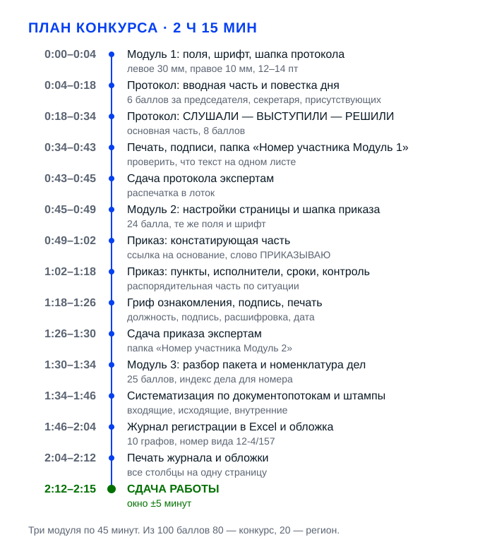
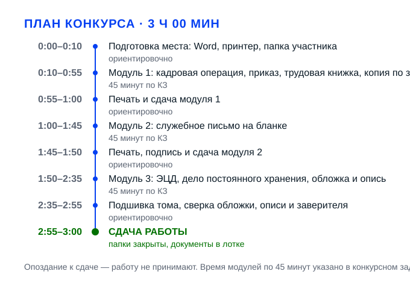
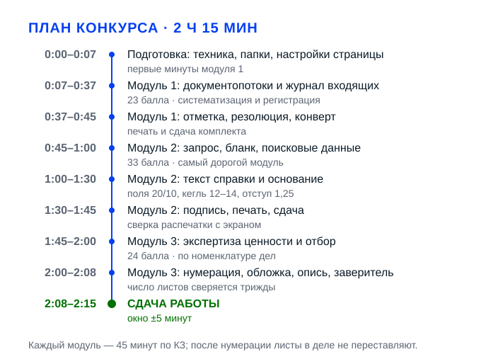

Документационное обеспечение управления и архивоведение (Р)
Задания ниже — официальные файлы «Абилимпикс» (источник: abilympics-russia.ru), разложенные по категориям. Решения написаны по тексту задания, регламенту и критериям оценки; в них указано, что именно проверяет эксперт.
Школьник
14–16 лет, базовый уровень заданияВыдержка из официального конкурсного задания: страницы, относящиеся к категории «Школьник» (стр. 11–13 источника).
Пошаговое решение
Задание для школьников — три модуля по 45 минут: протокол коллегиального мероприятия, приказ по основной деятельности и регистрация входящих документов в журнале Excel с оформлением обложки. Общая оценка — 100 баллов: 80 даёт соревновательная часть (31 балл за протокол, 24 за приказ, 25 за регистрацию), 20 приходится на региональный компонент. Модули равны по времени, но не равны по весу ошибок: в первом и втором почти половина баллов приходится на технику оформления по ГОСТ Р 7.0.97-2025 — поля, шрифт, интервал, отступ, выравнивание, — а в третьем баллы рассыпаны по графам журнала, где каждая неверная запись стоит один-два балла. Поэтому порядок работы один: сначала настроить страницу и выписать данные организации из карточки, потом писать содержание, а проверку и печать оставлять на последние десять минут.

Задача 1. Развернуть рабочее место и разобрать карточку организацииВсе модули · 3 балла за карточку + 3 балла за уборку
До первого нажатия клавиши на площадке нужно собрать «информационную базу»: папки под каждый модуль, настроенный по ГОСТ шаблон Word и выписанные на бумагу реквизиты организации, фамилии председателя, секретаря и руководителя, индексы дел по номенклатуре. Эти данные стоят отдельного балла в каждом модуле, а времени на поиск внутри 45 минут не будет: если наименование организации ищется по карточке в середине работы, вы теряете не только минуты, но и точность формулировок.
Действие 1.1. Собрать папки и настроить текстовый редактор
Шаг 1.1.1
На рабочем столе правой кнопкой создаём три папки с именами строго по заданию: «Номер участника Модуль 1», «Номер участника Модуль 2», «Номер участника Модуль 3», где вместо слов «Номер участника» подставляем свой номер, например «12 Модуль 1». Внутрь каждой папки заранее кладём пустой документ Word, названный по смыслу будущей работы: protokol, prikaz, zhurnal. Имена файлов пишем латиницей, без пробелов и без символов вроде № и кавычек.
Требование создать папку с точно таким названием прямо записано в конкурсном задании для каждого модуля, и эксперт при приёмке смотрит и папку, и файл внутри. Латиница и отсутствие пробелов нужны не для красоты: часть проверяющих программ и печатных утилит не открывает путь с кириллицей, а файл «Протокол № 1.docx» при сохранении на сетевой диск иногда превращается в набор символов.
Проверяем просто: на рабочем столе три папки с номерами модулей, в каждой лежит ровно один docx, имя открывается двойным щелчком без предупреждений. Убеждаемся, что папки не попали внутрь другой папки — окно проводника должно показывать их на верхнем уровне рабочего стола.
Типичная ошибка — создать одну общую папку и складывать туда всё три модуля: при приёмке эксперт ищет документ в папке конкретного модуля и, не найдя, снимает балл за организацию работы. Вторая ошибка — назвать папку «Модуль 1» без номера участника: работы обезличиваются, и документ может уйти не в тот комплект.
Эксперт проверяет папки в момент приёмки каждого модуля, а не в конце конкурса, поэтому порядок нужно навести сразу. Если папка названа с ошибкой в номере участника, документ считается несданным, даже когда текст в нём написан полностью.
Шаг 1.1.2
Настраиваем параметры страницы один раз и сохраняем как шаблон: вкладка «Макет», группа «Параметры страницы», кнопка вызова диалога. Ставим поля: левое 30 мм, правое 10 мм, верхнее 20 мм, нижнее 20 мм, ориентация книжная, размер А4. Затем на вкладке «Главная» открываем стиль «Обычный» правой кнопкой, выбираем «Изменить»: шрифт Times New Roman, 14 пт (допустимо 12–14), междустрочный интервал 1,15, абзацный отступ первой строки 1,25 см, выравнивание по ширине, интервалы «до» и «после» — 0 пт.
Поля и шрифт — это девять отдельных баллов в каждом модуле: левое поле не менее 30 мм, верхнее и нижнее не менее 20 мм, правое не менее 10 мм, единый размер шрифта 12–14 пт, единый интервал 1–1,5 без дополнительных пунктов, отступ 1,25 см и выравнивание по ширине перечислены в критериях по отдельности. Если настраивать каждый документ заново, на это уходит по пять-семь минут из сорока пяти, а забытое поле потом видно только на печати.
Открываем «Макет → Поля → Настраиваемые поля» и сверяем цифры, затем выделяем любой абзац и смотрим в «Абзац»: первая строка 1,25 см, интервал 1,15, выравнивание по ширине, «до» и «после» по нулю. Линейка сверху должна показывать серую зону слева шириной около трёх сантиметров.
Самая частая ошибка — оставить левое поле 20 мм: в Word это значение стоит по умолчанию ещё с прошлой версии ГОСТ, и документ выглядит правильно, но критерий «поля соответствуют требованиям» не выполнен. Вторая — задать отступ первой строки через пробелы или табуляцию: визуально похоже, но при проверке размер отступа не 1,25 см, и балл снимается.
Настройки эксперт проверяет не на глаз, а открывая тот же диалог «Абзац» и «Параметры страницы» в вашем файле, поэтому параметры должны быть именно в свойствах абзаца, а не имитированы пробелами.
Шаг 1.1.3
Включаем служебные инструменты, которые экономят время: вкладка «Главная», группа «Абзац», кнопка «Отобразить все знаки» (или сочетание Ctrl+*), линейка через «Вид → Линейка», проверка орфографии через «Рецензирование → Правописание» с автоматической проверкой в настройках. Включаем отображение границ текста через «Файл → Параметры → Дополнительно → Показывать границы текста».
Непечатаемые знаки показывают, где стоят пробелы и табуляции вместо отступа, где лишний перевод строки и где в реквизите случайно оказался двойной пробел — а текст без орфографических и пунктуационных ошибок оценивается отдельным баллом в каждом модуле. Границы текста помогают увидеть, не вылезает ли реквизит за поле, не разъезжается ли дата по правому краю.
После включения в тексте видны точки на месте пробелов, стрелки табуляции и знаки абзаца. Проверяем, что в конце строк нет двух пробелов подряд, а между реквизитами стоят именно абзацы, а не пустые строки, набранные пробелами.
Ошибка — печатать «на глазок» без знаков: двойные пробелы и табуляции в реквизитах не видны на экране, но прекрасно видны на бумаге и в проверке. Вторая — выключить проверку орфографии, чтобы не мешала: тогда опечатка в фамилии или «прийдёт» вместо «придёт» уйдёт в печать и заберёт балл за грамотность.
Грамотность текста — отдельный критерий в протоколе, приказе и журнале, эксперт читает распечатку целиком. Пометки проверки орфографии он не видит, поэтому все исправления нужно внести до печати, а не надеяться на пояснения.
Действие 1.2. Выписать данные из карточки, структуры и номенклатуры дел
Шаг 1.2.1
Берём карточку организации и переписываем на черновик ровно то, что понадобится в каждом документе: полное наименование, сокращённое наименование, ИНН и КПП, юридический адрес, телефон, адрес электронной почты, сайт, фамилию, имя, отчество руководителя и его должность. Полное наименование копируем посимвольно, включая кавычки и слова «Государственное бюджетное учреждение», сокращённое — так, как оно дано в карточке, например «ГБУ «Управление делами».
Критерий «Реквизит „Наименование организации“ оформлен, включает полное и сокращённое наименование» стоит два балла в каждом модуле, и это самые дешёвые баллы на конкурсе: их дают за точное копирование, а не за знание. Ошибка в одной букве наименования превращает документ в документ другой организации, поэтому на площадке данные берут только из карточки, а не по памяти.
На черновике должно быть семь строк: полное имя, сокращённое, ИНН/КПП, адрес, телефон, электронная почта, руководитель с должностью. Сверяем посимвольно кавычки: в карточке могут стоять «ёлочки», и они должны остаться «ёлочками».
Классическая ошибка — написать наименование по памяти, «как обычно»: в карточке организация может называться иначе, чем в вашем представлении, и оба балла сгорают. Вторая — оставить только полное наименование без сокращённого: критерий требует оба, и половина балла не начисляется.
Эксперт сверяет наименование с карточкой буква в букву и отдельно смотрит, есть ли сокращённый вариант в скобках или на отдельной строке. Отдельно он смотрит кавычки: «ёлочки» вместо „лапок“ — частая ошибка при копировании из электронной карточки.
Шаг 1.2.2
По структуре организации определяем три роли, без которых не собрать ни протокол, ни приказ: кто ведёт заседание (председатель или председательствующий), кто секретарь заседания, кто руководитель, подписывающий приказы, и кто из сотрудников отвечает за архив и делопроизводство. Выписываем фамилии с инициалами и полные должности: «Иванова И.И., заместитель директора», а не «Иванова, зам».
Использование структуры организации — отдельный балл в протоколе и два балла в приказе; кроме того, правильно указанный председатель и секретарь дают ещё по два балла во вводной части протокола. Если перепутать роли, документ формально красивый, но подписывает его не тот человек, и модуль теряет сразу несколько позиций.
Проверяем по структуре: напротив каждой роли стоит должность из схемы, а не выдуманная. Отдельно убеждаемся, что председатель заседания и руководитель организации — не обязательно одно лицо, и в протоколе ставится тот, кто ведёт заседание.
Ошибка — подписать протокол директором «потому что он главный»: в критериях подпись включает председателя (председательствующего) и секретаря заседания. Вторая — указать только фамилию без должности: вводная часть тогда оформлена не полностью.
Эксперт сверяет роли с карточкой и структурой, поэтому выписанные данные лучше держать перед глазами до конца конкурса. Если в протоколе и приказе роли указаны по-разному, это первый признак того, что структуру читали невнимательно.
Шаг 1.2.3
Открываем номенклатуру дел и находим индексы, которые понадобятся в третьем модуле и в регистрационном номере: дело «Протоколы заседаний» и дело «Приказы по основной деятельности» (для собственных документов), а также дело «Переписка с организациями по основной деятельности» — именно его индекс станет первой частью входящего номера. Выписываем индекс, заголовок дела и срок хранения: например, индекс 12, заголовок «Переписка с организациями по вопросам основной деятельности», срок хранения 5 лет.
Номенклатура дел используется в третьем модуле трижды: для формирования регистрационного номера входящего (два балла), для выбора правильной формы журнала (два балла) и в обложке журнала, где указывается индекс дела. Без выписанного индекса участник придумывает номер «по порядку», и входящий номер перестаёт соответствовать системе организации.
Проверяем: на черновике есть индекс, заголовок и срок хранения, и индекс стоит в той же строке, что заголовок в номенклатуре. Если дело называется «Переписка», а вы выписали «Письма», номер будет считаться неверным.
Ошибка — взять первый попавшийся индекс из номенклатуры, например от дела с приказами по личному составу: входящая переписка регистрируется по другому делу, и проверка «использована номенклатура дел» не проходит.
Эксперт в третьем модуле открывает номенклатуру и сравнивает индекс в вашем журнале с индексом соответствующего дела. Расхождение индекса хотя бы на одну цифру он считает ошибкой регистрации, а не опиской.
Задача 2. Составить и оформить протокол коллегиального мероприятияМодуль 1 · 45 минут · 31 балл
Модуль 1 — протокол заседания по описанной ситуации: сорок пять минут и тридцать один балл. Внутри модуля баллы разложены по реквизитам: восемь баллов за технику оформления (поля, шрифт, интервал, отступ, выравнивание, грамотность), тринадцать за шапку и подпись, десять за вводную и основную части. Протокол — документ коллегиального органа, поэтому его текст всегда делится на вводную часть со списком участников и основную с ходом обсуждения и решением, и именно эта структура проверяется экспертом в первую очередь.
Действие 2.1. Собрать бланк и шапку протокола
Шаг 2.1.1
Создаём новый документ в папке «Номер участника Модуль 1» и сразу применяем настройки из задачи 1: поля 30/10/20/20 мм, Times New Roman 14 пт, интервал 1,15, отступ первой строки 1,25 см, выравнивание по ширине. Проверяем, что в стиле «Обычный» нет интервалов «до» и «после» — в шапке, где каждая строка является отдельным реквизитом, лишние 8 пт разъезжаются в полстраницы.
Правильно установленные настройки — это восемь баллов из тридцати одного, и они проверяются не текстом, а свойствами файла. В шапке протокола реквизиты идут плотным блоком, поэтому любые дополнительные интервалы ломают не только вид, но и требование «интервал единый без дополнительных пунктов».
Открываем «Абзац» на любой строке шапки: отступ 1,25 см, интервал 1,15, «до» и «после» — 0, выравнивание по ширине. По линейке левая граница текста стоит на 3 см от края листа. Проверяем и последний абзац: он должен быть с теми же параметрами, что и первый.
Ошибка — оставить настройки прошлого файла, где стоял интервал «двойной»: шапка займёт половину листа, а вводная часть уедет на вторую страницу. Вторая — включить интервал 1,5 в шапке: критерий разрешает 1–1,5, но при 1,5 документ часто не влезает на один лист, а перенос подписи на второй лист — это отдельная потеря.
Эксперт открывает ваш файл и смотрит параметры абзаца выборочно на нескольких строках, а не только на первой. Настройки он проверяет на первой строке шапки и на последнем абзаце решения: они должны совпадать.
Шаг 2.1.2
Первым реквизитом ставим наименование организации в две строки: сверху полное — «Государственное бюджетное учреждение «Управление делами» Республики Башкортостан», ниже в скобках сокращённое — «ГБУ «Управление делами» РБ». Выравниваем блок по центру, шрифт 14 пт, без отступа первой строки. Наименование берём из карточки посимвольно, кавычки оставляем «ёлочками».
Наименование организации — единственный реквизит шапки, который в этом модуле стоит два балла, и условие «включает полное и сокращённое наименование» проверяется буквально. Кроме того, именно этот реквизит связывает документ с конкретным юридическим лицом: без него протокол не имеет отношения ни к какой организации.
Сверяем две строки с карточкой: все слова, все кавычки, все сокращения на месте, ни одна строка не переносится на вторую строку из-за узкого поля. Блок стоит по центру, а не «почти по центру». Длина строк не должна превышать ширину текста, иначе центрирование съедет.
Ошибка — написать только «ГБУ «Управление делами»: сокращённое наименование без полного не даёт двух баллов. Вторая — набрать наименование заглавными буквами: в ГОСТ заглавными пишется только вид документа, а наименование организации — обычным регистром.
Эксперт сверяет шапку с карточкой организации, поэтому расхождение в одно слово видно сразу. Если наименование набрано заглавными или разбито переносом, балл снимается, даже когда слова верные.
Шаг 2.1.3
Ниже, через один пустой абзац, ставим вид документа заглавными буквами по центру — «ПРОТОКОЛ», без точки. Под ним в одной строке — дата, регистрационный номер и место составления: «12.02.2026 № 3» и «г. Уфа». Дату пишем цифровым способом в формате ДД.ММ.ГГГГ, номер — порядковый номер протокола за год, место — город, где проходит заседание, а не адрес организации.
Четыре реквизита — вид документа, дата, регистрационный номер и место составления — дают по баллу каждый, итого четыре балла, и все они оформляются одним движением. Место составления обязательно именно для протокола: по нему видно, где проходило заседание, и его отсутствие считается незаполненным реквизитом.
Проверяем: «ПРОТОКОЛ» набрано заглавными и по центру, дата в формате с точками, номер стоит после знака № без пробела перед цифрой, место — с сокращением «г.» и без адреса. Все три элемента — на одной строке с датой слева и номером справа, как в формуляре.
Ошибка — написать дату словами «12 февраля 2026 г.» в одном документе и цифрами в другом: критерий требует правильного оформления, а смешение способов в шапке читается как небрежность. Вторая — забыть место составления: этот реквизит есть в формуляре протокола, но его легко пропустить, потому что в приказе он стоит в другом месте.
Эксперт смотрит именно на строку с датой и номером: она должна читаться как единая строка реквизитов. Он также следит, чтобы дата, номер и место стояли одной строкой, а не тремя отдельными абзацами.
Шаг 2.1.4
Пишем заголовок к тексту: «Заседания совета по документационному обеспечению управления» или другой вид заседания из ситуации. Заголовок ставим отдельным абзацем, с выравниванием по левому краю или по центру, без кавычек и без точки в конце, с отступом первой строки 1,25 см. Формулируем так, чтобы в нём был ответ на вопрос «какого заседания», а не «о чём».
Заголовок к тексту стоит два балла, и критерий отдельно требует, чтобы он содержал указание на вид заседания. Это отличает протокол от приказа: у приказа заголовок отвечает на вопрос «о чём», у протокола — «какого заседания», потому что протокол фиксирует работу коллегиального органа, а не решение одного руководителя.
Проверяем: в заголовке есть слово «заседания» (или «совещания», «собрания») и название органа, точка в конце не стоит, кавычек нет, заголовок не разорван на две строки посередине слова. Заголовок читается с одного раза и не требует пояснений, а слово «заседания» не потерялось при правке.
Ошибка — написать заголовок «О подготовке к отопительному сезону»: это заголовок приказа, и балл за правильную формулировку не начисляется. Вторая — поставить точку в конце заголовка, что в ГОСТ не допускается.
Эксперт читает заголовок вместе с вводной частью: если вид заседания в заголовке не совпадает с органом, который собирался, это заметно. Заголовок, повторяющий вид документа («Протокол»), он считает отсутствующим реквизитом.
Действие 2.2. Написать вводную часть протокола
Шаг 2.2.1
Вводную часть начинаем двумя строками: «Председательствующий — Петров Пётр Петрович, директор» и «Секретарь — Сидорова Анна Ивановна, документовед». Слова «Председательствующий» и «Секретарь» набираем с заглавной буквы, тире ставим с пробелами, фамилию пишем в именительном падеже, затем должность без предлога «в должности». Фамилию и должность берём из структуры, а не из памяти: в протоколе они должны совпадать с карточкой.
Председатель и секретарь во вводной части стоят два балла, и это тот же блок, что и подпись: подписывают протокол именно эти два человека. Если в вводной части указан один состав, а в подписи другой, документ внутренне противоречив, и эксперт фиксирует это как ошибку содержания.
Сверяем со структурой организации: фамилия, имя, отчество полностью, должность из схемы, порядок строк — сначала председательствующий, потом секретарь. Тире на месте, кавычек вокруг должности нет. Если фамилия в вводной части и в подписи набраны по-разному, приводим к одному виду.
Ошибка — написать «Присутствовали: председатель, секретарь» и объединить всех в один список: тогда вводная часть не содержит отдельного указания на роли, и два балла не начисляются. Вторая — указать инициалы вместо полного имени и отчества: в протоколе принято писать фамилию полностью.
Эксперт сравнивает вводную часть с подписью в конце — это первое, что он делает, дойдя до последнего листа. Порядок строк во вводной части он считает второстепенным, а расхождение с подписью — принципиальным.
Шаг 2.2.2
Следующий абзац — «Присутствовали:» с двоеточием и перечнем. Если участников немного, перечисляем каждого с должностью: «Иванов И.И. — главный специалист, Петрова М.С. — начальник отдела». Если участников больше пятнадцати, по ГОСТ допускается указать только количество и сослаться на список, прилагаемый к протоколу, но количество в этом случае указывается обязательно — цифрой и словами в скобках.
Информация о количестве присутствующих — отдельные два балла, и кворум в коллегиальном органе определяется именно по этой строке. Протокол без числа присутствующих юридически слабее: по нему невозможно проверить, было ли заседание правомочным. Кроме того, по этой же строке потом проверяют, все ли участники расписались в листе регистрации.
Проверяем: после слова «Присутствовали» стоит двоеточие, список оформлен столбиком или в строку, но единообразно, количество совпадает с числом фамилий. Если указано «12 человек», пересчитываем фамилии в приложенном списке — они должны сойтись.
Ошибка — перечислить фамилии без должностей: в критериях вводная часть должна быть правильно оформлена, а фамилия без должности не идентифицирует участника. Вторая — указать количество, не сверив его со списком, из-за чего в протоколе появляется «присутствовало 8 человек» при девяти фамилиях.
Эксперт пересчитывает фамилии и сверяет с указанным количеством — это быстрая проверка, которую он делает всегда. Если количество указано словами, он всё равно пересчитывает фамилии — расхождение стоит двух баллов.
Шаг 2.2.3
Если в ситуации есть приглашённые из других организаций, добавляем абзац «Приглашены:» и перечисляем их с должностью и названием организации: «Смирнов А.В. — начальник отдела архивного дела Министерства культуры Республики Башкортостан». Приглашённых отделяем от присутствующих: они не входят в кворум и не голосуют. Организацию приглашённого указываем полностью или в официальном сокращении, как в его бланке.
Приглашённые (при наличии) — два балла, и это отдельный реквизит вводной части, а не украшение: по протоколу потом видно, кто представлял внешнюю организацию и на каком основании участвовал в заседании. Смешение приглашённых с присутствующими искажает кворум и делает протокол уязвимым.
Проверяем: приглашённые вынесены в отдельный абзац, у каждого указана организация, никто из них не попал в список присутствующих. Если приглашённых в ситуации нет, абзац не пишем вовсе — пустой заголовок «Приглашены:» без фамилий хуже, чем его отсутствие.
Ошибка — включить приглашённого в список присутствующих «чтобы его упомянуть»: количество участников вырастает, кворум считается неверно. Вторая — оставить слово «Приглашены:» с прочерком, что читается как незаполненный реквизит.
Эксперт смотрит, выделены ли приглашённые в отдельную группу и указана ли их организация. Отсутствие абзаца при отсутствии приглашённых ошибкой не считается, а пустой заголовок — считается.
Шаг 2.2.4
Дальше идёт «Повестка дня:» — нумерованный перечень вопросов. Каждый пункт формулируем так: «1. О подготовке номенклатуры дел на 2027 год. Доклад начальника отдела делопроизводства Иванова И.И.». То есть сначала предмет обсуждения, потом докладчик с должностью. Вопросы нумеруем арабскими цифрами с точкой, каждый — с новой строки, без отступа «красной строки» у номера.
Повестка дня с указанием содержания доклада и докладчика — два балла, и это тот раздел, по которому основная часть потом сверяется пункт в пункт. Если в повестке нет докладчика, невозможно понять, кто отчитывался, а значит, и решение выглядит безосновательным.
Проверяем: число пунктов повестки совпадает с числом разделов в основной части, у каждого пункта есть докладчик с должностью, нумерация без пропусков. Формулировки не повторяют заголовок к тексту слово в слово.
Ошибка — написать повестку списком без докладчиков: балл за повестку не начисляется. Вторая — оставить в повестке три вопроса, а в основной части разобрать два: эксперт видит расхождение и снимает баллы за структуру текста.
Эксперт сверяет повестку с основной частью построчно, поэтому лучше писать повестку последней, когда состав вопросов уже точно известен. Он сверяет формулировки повестки с разделами основной части, а не только их количество.
Действие 2.3. Написать основную часть: обсуждение и решение
Шаг 2.3.1
Основную часть начинаем разделом «СЛУШАЛИ:» — слово заглавными буквами, двоеточие. Под ним по каждому вопросу повестки: номер вопроса, фамилия и должность докладчика, затем краткое изложение доклада в форме косвенной речи или тезисов. Например: «1. СЛУШАЛИ: Иванова И.И. — доклад о подготовке номенклатуры дел на 2027 год. В докладе отмечено, что проект номенклатуры разработан и согласован с архивом».
Основная часть с ходом обсуждения — два балла, и раздел «СЛУШАЛИ» является её обязательным элементом: без него протокол превращается в список решений и не показывает, на основании чего они приняты. Ошибки в структуре этого раздела эксперт видит сразу, потому что ищет три ключевых слова.
Проверяем: «СЛУШАЛИ» набрано заглавными, после него двоеточие, номера вопросов совпадают с повесткой, у каждого доклада есть фамилия. Текст доклада укладывается в три-пять строк, а не в полстраницы. Разделы «СЛУШАЛИ» идут строго по номерам повестки, без пропусков и перестановок.
Ошибка — переписать в протокол весь доклад дословно: в протоколе фиксируют краткое содержание, а не стенограмму, и раздутый текст выталкивает решение на второй лист. Вторая — назвать раздел «СЛУШАЛИ» строчными буквами: структура формально есть, но оформлена не по формуляру.
Эксперт ищет в тексте именно эти три раздела и оценивает, есть ли в них «необходимые разделы» — это прямая формулировка критерия. Он также проверяет, что раздел не превращён в стенограмму: краткость доклада — признак понимания.
Шаг 2.3.2
После доклада ставим раздел «ВЫСТУПИЛИ:» и перечисляем выступивших с кратким содержанием: «Петрова М.С. — предложила дополнить номенклатуру делом „Переписка по обращениям граждан“, срок хранения 5 лет». Если выступлений не было, раздел не пишем, а в решении отражаем, что обсуждение состоялось по докладу. Каждое выступление — отдельный абзац с фамилией.
Раздел «ВЫСТУПИЛИ» показывает ход обсуждения, а это прямо входит в критерий оценки основной части. Кроме того, именно из выступлений вырастают пункты решения: если в решении появилось поручение, которого не было ни в докладе, ни в выступлении, документ выглядит несогласованным.
Проверяем: у каждого выступления есть фамилия и суть предложения, раздел не дублирует доклад, из выступлений видно, какие формулировки попали в решение. Число выступлений не ограничено, но каждое должно добавлять новое содержание, а не повторять доклад.
Ошибка — придумать выступления, которых не было в ситуации: эксперт сверяет содержание с описанием ситуации, и выдуманные реплики читаются как непонимание задания. Вторая — оставить раздел «ВЫСТУПИЛИ» с одной фамилией без содержания.
Эксперт оценивает, соответствует ли содержание протокола содержанию управленческой ситуации, — это первый критерий модуля. Если в выступлениях нет ни одной фамилии, раздел считается неоформленным, даже когда текст есть.
Шаг 2.3.3
Завершаем основную часть разделом «РЕШИЛИ:» (в некоторых органах — «ПОСТАНОВИЛИ:»), где формулируем решения по каждому вопросу повестки с исполнителем и сроком: «1. Утвердить номенклатуру дел на 2027 год. Ответственный — документовед Сидорова А.И. Срок — 25.02.2026». Если по вопросу проводилось голосование, добавляем строку «Голосовали: за — 9, против — 0, воздержались — 0».
Решения — смысловое ядро протокола: именно они запускают работу организации, и по ним потом проверяют исполнение. Критерий требует, чтобы основная часть содержала информацию о ходе обсуждения и необходимые разделы, а решение с исполнителем и сроком — признак правильно оформленного распорядительного элемента.
Проверяем: число пунктов решения совпадает с числом вопросов повестки, у каждого есть исполнитель и срок, срок оформлен в формате даты, итоги голосования сходятся с числом присутствующих. Решения сформулированы глаголами в неопределённой форме: «утвердить», «поручить», «рекомендовать».
Ошибка — написать решение без исполнителя и срока: оно невыполнимо, и пункт читается как пожелание. Вторая — указать в решении «поручить всем отделам» без фамилии: персональная ответственность в протоколе обязательна.
Эксперт проверяет именно связку «вопрос — обсуждение — решение»: она должна читаться без пояснений. Решение без исполнителя и срока он отмечает как содержательную ошибку модуля.
Действие 2.4. Проверить протокол, подписать и сдать
Шаг 2.4.1
Прогоняем текст проверкой орфографии: «Рецензирование → Правописание», просматриваем каждое замечание, а не закрываем окно кнопкой «Пропустить всё». Отдельно проверяем единообразие: все даты в одном формате, все должности с заглавной или все со строчной, кавычки одного вида, тире одного вида. Затем смотрим, что текст не вылезает за поля: включаем границы текста и прокручиваем документ целиком.
Текст без орфографических и пунктуационных ошибок — отдельный балл в каждом модуле, а единый шрифт, единый интервал и единое выравнивание проверяются визуально по всему документу. Несовпадение форматов дат и кавычек эксперт читает как небрежность даже там, где формально критерий выполнен.
Проверяем: в тексте нет подчёркнутых красным слов, нет двойных пробелов (видно по точкам), даты везде в формате ДД.ММ.ГГГГ, кавычки везде «ёлочки», тире везде длинное. Документ занимает ровно один лист либо переносится осмысленно, не разрывая подпись.
Ошибка — закрыть проверку орфографии «Пропустить всё» на первом же слове: часть ошибок остаётся, а балл за грамотность снимается целиком, а не частично. Вторая — смешать «12.02.2026» и «12 февраля 2026 г.» в одном документе.
Эксперт читает распечатку целиком и отмечает ошибки по ходу чтения, поэтому проверять нужно до печати. Он читает документ построчно и отмечает каждую ошибку отдельно, поэтому важно проверить всё.
Шаг 2.4.2
Оформляем реквизит «Подпись»: две строки с должностями, личными подписями и расшифровками. «Председательствующий» слева, подпись и «П.П. Петров» справа; ниже «Секретарь», подпись и «А.И. Сидорова». Должности выравниваем по левому краю, расшифровки — по правому, чтобы каждая пара стояла на одной линии. Подписи ставим ручкой на распечатке, а в файле оставляем место под них.
Правильно оформленная подпись с председателем и секретарём — балл, но фактически она закрывает весь документ: без двух подписей протокол не имеет юридической силы. Расшифровка подписи обязательна, потому что подпись без фамилии не идентифицирует подписавшего.
Проверяем: две подписи, две расшифровки с инициалами перед фамилией, должности совпадают с вводной частью, между строками нет разрыва страницы. От руки подписано на той же странице, где стоит текст решения.
Ошибка — оставить одну подпись секретаря: протокол подписывают оба, и без председателя документ недействителен. Вторая — напечатать расшифровку «Иванов» без инициалов или поставить инициалы после фамилии: по ГОСТ инициалы стоят перед фамилией.
Эксперт проверяет подписи на бумаге и сверяет фамилии с вводной частью. Если расшифровка напечатана, а подписи нет, реквизит считается незаполненным. Он также смотрит, что обе подписи стоят на одном листе с текстом решения.
Шаг 2.4.3
Сохраняем файл в папку «Номер участника Модуль 1» (Ctrl+S, имя protokol.docx), выводим на печать через Ctrl+P: принтер, одна копия, масштаб «Не изменять», ориентация книжная, поля из документа. Перед печатью в окне предпросмотра проверяем, что весь текст, включая подпись, на одном листе. Распечатку подписываем и кладём в лоток для экспертов. Если принтер зажевал лист, печатаем заново, а не сдаём мятый.
Сдача распечатанного и подписанного протокола — обязательное условие модуля: в критериях прямо сказано, что протокол выведен на печать и подписан. Файл без бумаги не оценивается, потому что эксперты работают с распечаткой, а бумага без подписи не имеет силы.
Проверяем: файл лежит именно в папке первого модуля, на бумаге нет обрезанных полей, нет «сиротской» подписи на втором листе, текст читается без серых полос. Лист подписан двумя подписями и лежит в лотке, а не на столе.
Ошибка — печатать с масштабом «По размеру страницы», из-за чего левое поле уменьшается и требование 30 мм нарушается на бумаге. Вторая — унести распечатку с собой или оставить на столе: эксперты оценивают только то, что лежит в лотке.
Эксперт принимает работу по распечатке и отмечает в протоколе оценивания, сдана ли она в срок. Распечатка, сданная после объявления времени, к оценке не принимается.
Задача 3. Составить и оформить приказ по основной деятельностиМодуль 2 · 45 минут · 24 балла
Второй модуль — приказ по основной деятельности по описанной управленческой ситуации: сорок пять минут и двадцать четыре балла. Приказ отличается от протокола тем, что его текст делится не на вводную и основную части, а на констатирующую и распорядительную, и появляется реквизит, которого нет в протоколе, — ознакомление с приказом. Ошибки здесь чаще всего не в содержании, а в том, что участник копирует структуру протокола и приносит документ с разделами «СЛУШАЛИ — РЕШИЛИ».
Действие 3.1. Создать бланк приказа и собрать шапку
Шаг 3.1.1
Открываем файл из папки «Номер участника Модуль 2» и проверяем настройки: поля 30/10/20/20 мм, Times New Roman 14 пт, интервал 1,15, отступ первой строки 1,25 см, выравнивание по ширине, интервалы «до» и «после» — 0. Если файл создан копированием протокола, обязательно удаляем всё содержимое, оставляя настройки: Ctrl+A и Delete, но не «Новый документ», иначе параметры сбросятся на умолчание Word.
Настройки дают восемь баллов и проверяются в каждом модуле заново. Копирование файла предыдущего модуля с очисткой содержимого — самый быстрый способ сохранить поля и шрифт, но при этом легко унести с собой остатки текста: если в приказе останется строка «Присутствовали», эксперт решит, что структура документа не понята.
Проверяем: лист пустой, кроме одного знака абзаца, а в «Параметрах страницы» и «Абзаце» стоят нужные цифры. Прокручиваем вниз до конца — за текстом не должно быть пустых страниц от удалённых разделов.
Ошибка — создать новый документ «с нуля», не настроив поля: Word подставит 20 мм слева, и один балл уже потерян. Вторая — оставить в файле колонтитул или надпись из протокола. Третья — оставить в файле автоматические списки из протокола, они сбивают отступ и нумерацию.
Эксперт открывает файл приказа и смотрит те же параметры, что и в первом модуле. Отдельно он смотрит, не осталось ли в файле следов предыдущего документа — колонтитулов и надписей.
Шаг 3.1.2
Собираем шапку в том же порядке, что и в протоколе, но с приказными особенностями: наименование организации в две строки (полное и сокращённое по центру), ниже заглавными «ПРИКАЗ», затем строка «12.02.2026 № 14» и «г. Уфа». Наименование вида документа набираем заглавными буквами без точки, дату и номер — на одной строке под видом документа. Строку с датой и номером ставим отдельным абзацем, без отступа первой строки и без выравнивания по ширине.
Шапка приказа приносит шесть баллов: два за наименование организации с полным и сокращённым вариантом, по одному за вид документа, дату, регистрационный номер и место составления. Регистрационный номер приказа по основной деятельности — свой порядковый номер в пределах года и своего дела, он не продолжает нумерацию протоколов.
Сверяем: наименование организации совпадает с карточкой, «ПРИКАЗ» по центру и заглавными, дата в формате ДД.ММ.ГГГГ, номер без ведущих нулей, место составления с сокращением «г.». Ни одна строка шапки не имеет отступа первой строки.
Ошибка — поставить в приказе номер протокола, «продолжив» нумерацию: это разные виды документов и разные дела по номенклатуре. Вторая — написать «Приказ» строчными с точкой, как в обычном тексте. Третья — перепутать номер приказа с номером протокола и тем самым нарушить нумерацию дел.
Эксперт сверяет шапку приказа с формуляром и карточкой организации, обращая внимание на отсутствие отступа в центрированных строках. Он обращает внимание и на то, что номер приказа не совпадает с номером протокола.
Шаг 3.1.3
Пишем заголовок к тексту, который отвечает на вопрос «о чём приказ»: «Об утверждении номенклатуры дел на 2027 год», «О создании экспертной комиссии». Начинаем с предлога «О» («Об» перед гласной), дальше — отглагольное существительное в предложном падеже. Заголовок ставим отдельным абзацем слева, с отступом 1,25 см, без точки в конце, кавычки только если внутри есть название документа.
Заголовок к тексту приказа стоит два балла, и критерий требует, чтобы он был «сформулирован и оформлен правильно». В приказе заголовок отвечает на вопрос «о чём», в отличие от протокола, где он указывает вид заседания, — это различие проверяется экспертом целенаправленно.
Проверяем: заголовок начинается с «О» или «Об», отвечает на вопрос «о чём приказ», укладывается в одну строку, не дублирует дословно первый абзац констатирующей части. Длина заголовка — не больше 12–15 слов, иначе он не помещается в одну строку.
Ошибка — написать заголовок «Номенклатура дел на 2027 год» без предлога «О»: это назывное предложение, а не заголовок к тексту. Вторая — сделать заголовок длиннее строки и разорвать его переносом в неудачном месте.
Эксперт читает заголовок вместе с констатирующей частью и проверяет, что они об одном и том же. Заголовок, начинающийся со слова «Приказ», он считает неоформленным реквизитом.
Действие 3.2. Написать констатирующую часть
Шаг 3.2.1
Первый абзац текста — констатирующая часть: она объясняет, почему издаётся приказ. Начинаем словами «В соответствии с», «В целях», «На основании» и ссылаемся на документ или норму из ситуации: «В соответствии с Правилами организации хранения, комплектования, учёта и использования документов Архивного фонда Российской Федерации, утверждёнными приказом Росархива от 31.07.2023 № 77, и в целях упорядочения документационного обеспечения управления ПРИКАЗЫВАЮ:». Абзац заканчивается словом «ПРИКАЗЫВАЮ:» с двоеточием, набранным заглавными.
Деление текста приказа на констатирующую и распорядительную части — два балла, и граница между ними проходит именно по слову «ПРИКАЗЫВАЮ». Констатирующая часть превращает распоряжение в обоснованное решение: без ссылки на основание приказ выглядит как личное желание руководителя, и юридическая сила документа снижается.
Проверяем: первый абзац содержит ссылку на норму или документ, заканчивается словом «ПРИКАЗЫВАЮ:», между констатирующей и распорядительной частями нет пустой страницы или разрыва раздела. Слово «ПРИКАЗЫВАЮ» набрано заглавными и стоит с новой строки от основного текста.
Ошибка — начать текст сразу с распоряжений, без обоснования: балл за две части не начисляется, потому что граница между частями не обозначена. Вторая — написать «приказываю» строчными буквами и с маленькой буквы после запятой, слить с предыдущим абзацем.
Эксперт ищет в тексте именно слово «ПРИКАЗЫВАЮ» как разделитель — это самый быстрый способ проверить структуру. Если слово «ПРИКАЗЫВАЮ» набрано строчными или слито с текстом, структура считается неразделённой.
Шаг 3.2.2
Содержание констатирующей части берём из ситуации и не расширяем: одна-две ссылки, одно целевое указание, без пересказа всей переписки. Если в ситуации упомянуто решение вышестоящего органа, ссылаемся на него с датой и номером. Объём — не больше пяти-шести строк, чтобы распорядительная часть с ознакомлением осталась на первом листе. Ссылки оформляем так же, как в образце: дата, номер, вид документа — в одной фразе, без скобок.
Констатирующая часть стоит в паре с распорядительной, и вместе они дают два балла; кроме того, от её объёма зависит, поместится ли весь приказ на одном листе. Приказ на двух листах с подписью на втором — частая причина потери баллов за оформление реквизитов.
Проверяем: в абзаце не больше двух ссылок, все реквизиты документов-оснований указаны с датой и номером, объём не превышает шести строк. Пересчитываем строки до слова «ПРИКАЗЫВАЮ». Строки считаем при масштабе 100 процентов, а не в режиме «по ширине страницы».
Ошибка — переписать в констатирующую часть весь текст ситуации: приказ раздувается, распорядительная часть уезжает на второй лист. Вторая — сослаться на документ без номера и даты, что делает ссылку бесполезной.
Эксперт оценивает и содержание приказа на соответствие ситуации, и его объём — документ должен читаться как один лист. Объём констатирующей части он оценивает по числу строк на первом листе.
Действие 3.3. Написать распорядительную часть с исполнителями и сроками
Шаг 3.3.1
После слова «ПРИКАЗЫВАЮ:» нумеруем пункты арабскими цифрами с точкой. Каждый пункт строится по схеме: действие глаголом в неопределённой форме, объект, исполнитель, срок. Например: «1. Утвердить и ввести в действие номенклатуру дел на 2027 год с 01.01.2027. 2. Назначить ответственным за формирование дел документоведа Сидорову А.И.». Срок указываем датой, а не словом «своевременно».
Распорядительная часть — это то, ради чего издаётся приказ, и именно по ней проверяется, понял ли участник управленческую ситуацию. Каждый пункт с исполнителем и сроком превращает приказ в работающий документ: по нему можно проверить исполнение, а без срока и фамилии пункт остаётся декларацией.
Проверяем: пункты пронумерованы без пропусков, в каждом есть действие, исполнитель и срок, глаголы стоят в неопределённой форме («утвердить», «назначить», «обеспечить»), срок оформлен датой. Пункты не повторяют друг друга.
Ошибка — написать пункт «Улучшить работу с документами» без исполнителя и срока: проверить исполнение невозможно, и содержание расходится с ситуацией. Вторая — указать исполнителем «отдел делопроизводства» без фамилии руководителя отдела.
Эксперт сверяет пункты приказа с ситуацией: все ли поручения из неё отражены и нет ли лишних. Он сверяет фамилии исполнителей с теми, кто указан в грифе ознакомления.
Шаг 3.3.2
Завершаем распорядительную часть пунктом о контроле: «3. Контроль за исполнением настоящего приказа возложить на заместителя директора Иванову И.И.». Контрольный пункт ставится последним и не нумеруется отдельным абзацем с отступом, а продолжает нумерацию. Если ситуация требует нескольких исполнителей, последний пункт может содержать перечень ответственных с указанием, кто за что отвечает.
Пункт о контроле — признак грамотно составленного приказа: он замыкает документ и указывает, кто отвечает за исполнение в целом. Критерий оценивает содержание приказа на соответствие ситуации, и отсутствие контроля читается как незавершённая работа. Если контроль возложен на лицо, которого нет в структуре, приказ исполнять некому.
Проверяем: контрольный пункт стоит последним, в нём указана должность и фамилия, нумерация не сбита, после него нет других распоряжений. Точка в конце пункта стоит, а сам пункт выровнен по ширине с отступом 1,25 см.
Ошибка — возложить контроль на себя, то есть на руководителя, подписавшего приказ: это допустимо, но в ситуации обычно указан конкретный заместитель. Вторая — забыть пункт о контроле вовсе. Третья — возложить контроль на должность, которой нет в структуре организации.
Эксперт проверяет, есть ли в приказе все элементы распорядительной части, включая контроль. Перенос контрольного пункта в начало он считает нарушением последовательности.
Шаг 3.3.3
Проверяем текст на грамотность и единообразие: «Рецензирование → Правописание», затем вручную смотрим сокращения («г.» с точкой, «РБ» без точек), одинаковое написание должностей, отсутствие двойных пробелов. Отдельно проверяем, что распорядительная часть не разорвана переносом страницы и что все пункты стоят с отступом 1,25 см, как и остальной текст.
Грамотность — отдельный балл, а единый шрифт, единый интервал и выравнивание по ширине проверяются по всему тексту. Если распорядительная часть начинается на первом листе, а заканчивается на втором, документ теряет целостность и баллы за оформление реквизитов.
Проверяем: красных подчёркиваний нет, сокращения единообразны, все пункты выровнены по ширине с отступом 1,25 см, при предпросмотре печати весь приказ на одном листе. Проверяем и таблицу ознакомления: она должна остаться на первом листе.
Ошибка — вставить в распорядительную часть маркированный список из Word: маркеры сбивают отступ, и текст перестаёт соответствовать требованию об абзацном отступе. Вторая — оставить автоматические списки с разными интервалами.
Эксперт читает приказ целиком и отмечает ошибки и нарушения единообразия. Единообразие сокращений он проверяет по всему тексту, а не по отдельным абзацам.
Действие 3.4. Оформить ознакомление, подпись и сдать приказ
Шаг 3.4.1
Под распорядительной частью, после двух-трёх пустых строк, оформляем ознакомление с приказом: строку «С приказом ознакомлен(а):», ниже — должность, личная подпись, расшифровка и дата. Для нескольких сотрудников делаем таблицу из четырёх граф: «Должность | Подпись | Расшифровка подписи | Дата», по одной строке на человека. Дату ознакомления оставляем пустой — её заполняют при ознакомлении.
Правильно оформленное ознакомление — два балла, и критерий перечисляет четыре обязательных элемента: наименование должности, подпись, расшифровку и дату. Это единственный реквизит, который доказывает, что работник знает о решении, и его отсутствие делает приказ недоведённым до исполнителей.
Проверяем: все четыре графы на месте, в таблице есть строки для каждого упомянутого в приказе исполнителя, расшифровка с инициалами перед фамилией, дата не заполнена заранее. Таблица не вылезает за правое поле.
Ошибка — ограничиться строкой «С приказом ознакомлены: все сотрудники»: персональное ознакомление не подтверждено, и два балла не начисляются. Вторая — поставить дату ознакомления заранее, до фактического ознакомления.
Эксперт ищет в конце приказа гриф ознакомления и проверяет наличие всех четырёх элементов. Пустая графа «Дата» в грифе ошибкой не считается, заполненная заранее — считается.
Шаг 3.4.2
Ставим реквизит «Подпись»: должность руководителя «Директор» слева, личная подпись и расшифровка «П.П. Петров» справа, на одной линии с должностью. Должность берём из карточки организации, фамилию — из структуры. Расшифровку печатаем с инициалами перед фамилией, между инициалами пробела нет. От руки подпись ставим после печати, ручкой с синими или чёрными чернилами, не гелевой с блеском.
Подпись руководителя — балл, но без неё приказ не имеет юридической силы, поэтому этот реквизит важнее своего веса. Должность в подписи должна совпадать с той, что указана в карточке: если приказ подписывает «генеральный директор» организации, где такого лица нет, документ юридически ничтожен.
Проверяем: должность и расшифровка на одной линии, линия подписи не разорвана, между подписью и грифом ознакомления есть свободное место для ручки. Расшифровка совпадает с фамилией руководителя в карточке.
Ошибка — напечатать «Петров П.П.» и оставить подпись на втором листе: подпись должна быть на том же листе, где заканчивается текст. Вторая — указать должность, которой нет в структуре организации. Третья — поставить подпись на втором листе, после грифа ознакомления.
Эксперт сверяет подпись с карточкой и структурой, а также смотрит, на каком листе она стоит. Расхождение должности в подписи и в карточке он фиксирует как ошибку реквизита.
Шаг 3.4.3
Печатаем приказ: Ctrl+P, одна копия, масштаб «Не изменять», книжная ориентация, предпросмотр — весь документ на одном листе. Подписываем распечатку ручкой, при необходимости проставляем дату ознакомления. Файл сохраняем в папку «Номер участника Модуль 2» под именем prikaz.docx, распечатку кладём в лоток экспертов. Перед печатью увеличиваем масштаб до 100 процентов и проверяем, что таблица ознакомления не обрезана.
Критерий требует, чтобы приказ был распечатан и подписан, поэтому файл без бумаги не оценивается. Печать с масштабом «По размеру страницы» уменьшает поля, и требование левого поля не менее 30 мм нарушается именно на бумаге, хотя в файле всё верно. Кроме того, печать без предпросмотра часто оставляет подпись на втором листе, а это отдельная потеря.
Проверяем: на распечатке читаются все реквизиты, нет обрезанного правого края таблицы ознакомления, подпись стоит на первом листе, файл лежит в папке второго модуля. Распечатка в лотке, а не на столе.
Ошибка — распечатать две копии и перепутать, какую сдавать: сдаётся подписанный экземпляр. Вторая — сохранить файл в общую папку, а не в папку модуля, из-за чего при приёмке документ не находится. Третья — сдать немаркированную распечатку, которую невозможно соотнести с участником.
Эксперт принимает распечатку и отмечает факт сдачи в оценочном протоколе. Он также проверяет, что таблица ознакомления не обрезана справа при печати. Подпись должна стоять выше грифа ознакомления, а не под ним.
Задача 4. Систематизировать документы, проставить отметку и зарегистрировать входящиеМодуль 3 · 45 минут · 25 баллов
Третий модуль — работа с чужими документами: разложить пакет по документопотокам, отобрать входящие, проставить на них отметку о поступлении, внести в журнал регистрации в Excel и оформить обложку журнала. Двадцать пять баллов, и почти все они приходятся не на печать, а на правильную запись: входящий номер по номенклатуре дел, корреспондент, адресат, содержание, исполнитель и резолюция — каждая графа оценивается отдельно, по одному-два балла.
Действие 4.1. Разобрать пакет документов и номенклатуру дел
Шаг 4.1.1
Выкладываем весь пакет документов на стол и пересчитываем: сколько листов, сколько отдельных документов, есть ли приложения. Каждый документ подписываем карандашом на обороте или на отдельном листе-описи: номер, вид документа, от кого, дата. Например, «1 — письмо Минкультуры РБ, исх. № 145 от 03.02.2026», «2 — приказ нашего учреждения № 9», «3 — акт проверки».
Пересчёт — первый шаг систематизации, и он стоит два балла: документы должны быть разложены по документопотокам правильно. Пока пакет не описан, легко пропустить документ, который лежал между двумя листами, и тогда в журнале не хватит строки, а в решении эксперта появится замечание о неполноте.
Проверяем: число описанных документов совпадает с числом листов в пакете за вычетом приложений, у каждого есть вид, автор и дата. Опись лежит рядом с пакетом и не теряется при перекладывании. Опись подписываем своим номером участника, чтобы она не смешалась с чужими.
Ошибка — сразу начать вносить документы в журнал, не описав пакет: часть документов остаётся незамеченной, и регистрация оказывается неполной. Вторая — считать листы, а не документы, из-за чего письмо с приложением записывается дважды.
Эксперт сверяет число зарегистрированных документов с числом входящих в пакете. Если опись не составлена, ему трудно проверить полноту, и он снижает балл за систематизацию.
Шаг 4.1.2
Открываем номенклатуру дел и находим индекс дела для регистрации входящей переписки: обычно это «Переписка с организациями по вопросам основной деятельности», индекс вида 12, срок хранения 5 лет. Выписываем индекс, заголовок и срок хранения на черновик рядом с описью. Там же фиксируем индекс дела, в котором будут храниться протоколы и приказы, — он понадобится для обложки журнала.
Использование номенклатуры дел при регистрации — два балла, и это самый содержательный критерий модуля: входящий номер строится из индекса дела, поэтому без выписанного индекса номер придумывается и перестаёт быть частью системы организации. Тот же индекс выносится на обложку журнала, а она стоит ещё два балла.
Проверяем: индекс выписан вместе с заголовком и сроком хранения, цифры не перепутаны местами, индекс соответствует именно переписке, а не приказам по личному составу. Сверяем написание заголовка с номенклатурой посимвольно.
Ошибка — взять индекс первого дела в списке: входящая переписка будет зарегистрирована по чужому делу, и оба балла за номенклатуру снимаются. Вторая — придумать индекс «на глаз», потому что номенклатура показалась необязательной.
Эксперт открывает номенклатуру дел и сверяет индекс в журнале и на обложке с индексом соответствующего дела. Он сравнивает не только индекс, но и заголовок дела, вынесенный на обложку журнала.
Шаг 4.1.3
Определяем, какие документы в пакете являются входящими: это документы, поступившие в организацию извне, — письма, обращения, акты вышестоящих органов, запросы. Документы, созданные внутри организации (приказы, протоколы, служебные записки), к входящим не относятся, даже если лежат в том же пакете. Отмечаем в описи напротив каждого документа: «входящий» или «внутренний».
Правильный отбор входящих — балл, и ошибка здесь обнуляет весь журнал: если зарегистрировать внутренний приказ как входящий, появится лишняя строка, а если пропустить письмо — не хватит записи. Входящие и внутренние документы регистрируются в разных формах и хранятся в разных делах.
Проверяем: у каждого документа в описи стоит отметка, число входящих совпадает с числом строк, которое планируется в журнале. Отдельно пересматриваем документы с приложениями: приложение к входящему письму отдельно не регистрируется.
Ошибка — зарегистрировать внутренний приказ вместе с входящими: журнал входящих документов перестаёт соответствовать своему названию. Вторая — пропустить документ без углового штампа, решив, что он «не настоящий».
Эксперт проверяет, что в журнал попали именно входящие документы из пакета, и считает их. Отдельно он смотрит документы без штампа: именно там чаще всего прячется пропуск.
Действие 4.2. Разложить документы по документопотокам
Шаг 4.2.1
Раскладываем документы на три группы: входящие, исходящие, внутренние. Входящие — поступившие извне; исходящие — отправленные организацией (у них есть исходящий номер и адресат); внутренние — созданные и используемые внутри (приказы, протоколы, акты, служебные записки). Каждую группу складываем отдельной стопкой, лицом вверх, в порядке поступления или по датам.
Систематизация по документопотокам — два балла, и это первый критерий модуля: пока документы не разложены, невозможно ни отобрать входящие, ни проставить отметки. Документопоток определяет всю дальнейшую судьбу бумаги: куда её регистрируют, в какое дело подшивают и сколько она хранится.
Проверяем: три стопки, ни один документ не лежит между ними, в каждой стопке документы одного типа. Сверяем количество с описью: сумма по трём стопкам равна числу документов в пакете. Стопки лежат раздельно, не соприкасаясь краями, чтобы документы не перепутались при переносе.
Ошибка — разложить документы по корреспондентам или по датам, а не по потокам: систематизация считается невыполненной, хотя порядок на столе есть. Вторая — отнести письмо вышестоящей организации к внутренним, потому что оно «про нашу работу».
Эксперт смотрит на стол: три раздельные стопки читаются сразу, а смешанная кипа — нет. Если стопки подписаны или отделены закладками, ему проще проверить состав каждой группы.
Шаг 4.2.2
Внутри каждой стопки наводим порядок: входящие — по дате поступления, исходящие — по дате отправки, внутренние — по видам и номерам. Приложения кладём за основным документом, не отделяя. Если документ повреждён или без даты, кладём его сверху с закладкой и отдельно упоминаем в описи. Документы держим лицом вверх, чтобы номер и дата читались без переворачивания листа.
Порядок внутри потока нужен для регистрации: входящий номер присваивается по порядку поступления, и если стопка перемешана, номера пойдут не по датам и запись в журнале станет недостоверной. Повреждённый документ, отложенный в сторону, потом теряется — а вместе с ним и балл за полноту.
Проверяем: даты в стопке входящих идут по возрастанию, приложения стоят за своими письмами, документы без даты отмечены. Стопки ровные, листы не выпадают. Приложения проверяем по количеству листов, указанному в письме, и по отметке о приложении.
Ошибка — разложить входящие по алфавиту корреспондентов: красиво, но нумерация перестаёт соответствовать хронологии поступления. Вторая — отделить приложения в общую папку «приложения», из-за чего они отрываются от документов.
Эксперт при проверке журнала сверяет порядок номеров с датами поступления. Он выборочно сверяет два-три номера с датами поступления по документам. Порядок по датам в стопке входящих он считает признаком понимания учёта.
Шаг 4.2.3
Пересматриваем спорные документы: факс, копия письма, письмо без подписи, документ с грифом «для служебного пользования». Факс и электронная копия, распечатанная на бумаге, регистрируются как входящие, если поступили в организацию. Документ без подписи регистрируется, но в графе «Содержание» отмечается, что подпись отсутствует. Письма с грифом «ДСП» регистрируются отдельно, в журнале входящих документов с ограниченным доступом.
Спорные документы — то место, где теряются баллы за правильный отбор: эксперт проверяет не только очевидные письма, но и те, что лежат в пакете «на границе». Решение по каждому такому документу должно быть обоснованным, потому что от него зависит и число строк в журнале, и содержание граф.
Проверяем: по каждому спорному документу есть решение и короткое обоснование в описи, ни один не остался «в стороне». Если сомневаетесь, регистрируйте как входящий: пропуск документа стоит дороже лишней строки.
Ошибка — отложить спорный документ «на потом» и не зарегистрировать: в журнале не хватает записи, и балл за полноту теряется. Вторая — зарегистрировать копию письма как отдельный документ, хотя оригинал уже учтён.
Эксперт проверяет именно спорные позиции: по ним видно, понимает ли участник, что такое документопоток. По спорным документам он задаёт короткий вопрос: почему отнесён именно к этой группе.
Действие 4.3. Проставить отметку о поступлении
Шаг 4.3.1
На каждом входящем документе ставим отметку о поступлении: в правом нижнем поле первого листа — дату поступления и входящий номер, например «Поступило 12.02.2026 № 12-4/157». Отметку можно поставить штампом, если он есть на площадке, или напечатать на отдельном листе и наклеить, но чаще её пишут от руки печатными цифрами синей или чёрной ручкой. Номер должен совпадать с номером в журнале.
Правильно проставленная отметка о поступлении — два балла, и это единственное доказательство того, что документ действительно поступил в организацию и когда. Дата в отметке и дата в журнале должны совпадать: расхождение сразу видно при сверке и читается как подделка учётной записи.
Проверяем: отметка стоит на первом листе каждого входящего, дата и номер читаются без напряжения, номер совпадает с журналом посимвольно. На документах с приложением отметка ставится только на основном документе.
Ошибка — поставить отметку на всех документах пакета, включая внутренние: отметка о поступлении относится только к входящим. Вторая — написать номер, не заглянув в журнал, из-за чего номер на бумаге и в журнале расходятся.
Эксперт сверяет отметки на бумагах с журналом — это делается построчно. Он смотрит и на аккуратность: размазанные чернила читаются как небрежность. Если отметка стёрта или исправлена, он воспринимает это как попытку подгонки.
Шаг 4.3.2
Место для отметки выбираем строго по формуляру: правый нижний угол первого листа, свободное поле, не поверх текста и не поверх подписи корреспондента. Если там уже стоит чужой штамп, ставим отметку ниже или левее, но в том же поле. Наклейку, если используем её, клеим ровно, без пузырей, и так, чтобы она не закрывала дату и исходящий номер письма. Пишем печатными цифрами, чтобы дата читалась без разбора почерка.
Место реквизита проверяется визуально, и отметка, поставленная поверх текста письма, мешает читать документ, а значит, нарушает и требования к оформлению. Кроме того, по расположению отметки видно, знаком ли участник с формуляром входящего документа.
Проверяем: отметка в правом нижнем поле, текст письма читается полностью, чужие реквизиты не перекрыты, чернила не размазаны. Отметка не выходит за поля документа. Проверяем и то, что отметка читается при копировании документа, если с него снимут копию.
Ошибка — поставить отметку в левом верхнем углу, там, где обычно стоит угловой штамп организации: реквизиты накладываются друг на друга. Вторая — закрыть наклейкой исходящий номер корреспондента, после чего невозможно сверить документ с журналом.
Эксперт осматривает первые листы входящих и отмечает, читается ли отметка и не перекрывает ли она текст. Отметку поверх текста он считает нарушением и оформления, и читаемости документа.
Шаг 4.3.3
Проверяем отметки по всей стопке входящих: у каждого документа есть дата и номер, номера идут по возрастанию, ни один номер не пропущен и не повторён. Сверяем с черновиком журнала: количество отметок равно количеству строк. Отдельно смотрим документы, поступившие в один день, — у них разные номера, но одинаковая дата. Пропущенный номер при обнаружении восстанавливаем, а не оставляем «дыру» в нумерации.
Отметка о поступлении и запись в журнале — две стороны одного учёта, и баллы за них дают раздельно: два за отметку и один за входящий номер. Если номера на бумаге и в журнале не совпадают, проверка показывает, что регистрация формальная. Кроме того, по совпадению номеров эксперт видит, вносились ли записи по документам или «по памяти».
Проверяем: нумерация без пропусков, дата у документов одного дня одинаковая, номера уникальны. Пересчитываем отметки и строки — числа должны совпасть. Даты у документов одного дня одинаковые, а номера идут подряд без разрывов.
Ошибка — пропустить номер при нумерации, а потом «закрыть» пропуск следующим документом: нумерация сбивается, и в журнале появляется дыра. Вторая — поставить на двух документах один номер, что делает учёт недостоверным.
Эксперт проверяет нумерацию насквозь: пропуск или дубль виден сразу. Он проверяет нумерацию по датам: документы одного дня должны идти подряд. Если номера идут не по датам, регистрация считается формальной.
Действие 4.4. Заполнить журнал регистрации в Excel и оформить обложку
Шаг 4.4.1
Открываем файл журнала в Excel и проверяем форму: графы располагаются в одной строке заголовка, каждая графа подписана. Обязательный набор: «Дата поступления», «Входящий номер», «Корреспондент», «Исходящий номер и дата», «Краткое содержание», «Адресат», «Исполнитель», «Резолюция», «Срок исполнения», «Отметка об исполнении». Заголовок оформляем жирным, включаем «Перенос текста» и закрепляем первую строку через «Вид → Закрепить области».
Правильно выбранная форма журнала — два балла: журнал регистрации входящих документов отличается от журнала исходящих и от журнала обращений граждан набором граф. Если графы не соответствуют виду документа, регистрация считается выполненной не по форме, даже когда все сведения внесены.
Проверяем: все десять граф на месте, заголовки не слиплись, первая строка закреплена и не уезжает при прокрутке, ширина столбцов позволяет читать текст без обрезки. Нумерация строк идёт подряд. Проверяем, что заголовки не обрезаны по ширине столбца и читаются в режиме предпросмотра печати.
Ошибка — взять форму журнала исходящих документов, где нет графы «Корреспондент»: часть сведений некуда внести, и баллы теряются сразу по нескольким графам. Вторая — сделать заголовок в две строки без объединения ячеек, из-за чего фильтр и печать работают неправильно.
Эксперт открывает файл и смотрит состав граф — это первое, что он проверяет в третьем модуле. Он также смотрит, подписаны ли графы полностью, а не сокращениями вроде «Корр.».
Шаг 4.4.2
Заполняем строки по каждому входящему документу. Дата поступления — из отметки, в формате ДД.ММ.ГГГГ. Входящий номер — «индекс дела по номенклатуре — номер тома — порядковый номер», например 12-4/157, где 12 — индекс дела, 4 — номер тома, 157 — порядковый номер записи. Корреспондент — полное или сокращённое наименование организации-отправителя. Содержание — одна-две строки по существу, без пересказа.
Каждая графа оценивается отдельно: входящий номер — балл, дата — балл, корреспондент — два балла, содержание — два, адресат — балл, исполнитель — два, резолюция — два. Это самая дорогая часть модуля, и заполняется она по документам, а не по памяти: любая выдуманная фамилия или дата видна при сверке.
Проверяем: номер построен по схеме с индексом дела, даты совпадают с отметками на бумаге, корреспондент совпадает с бланком письма, содержание передаёт суть, а не первые слова. В каждой строке заполнены все графы — пустая ячейка читается как пропуск.
Ошибка — ставить входящий номер просто по порядку, без индекса дела: номер не связан с номенклатурой, и два балла снимаются. Вторая — вписывать корреспондентом фамилию подписавшего вместо организации.
Эксперт сверяет каждую строку с документом: сначала номер и дату, потом корреспондента и содержание. Он выборочно сверяет три-четыре строки с бумагами, и расхождение стоит балла.
Шаг 4.4.3
Заполняем графы «Адресат», «Исполнитель» и «Резолюция». Адресат — должность и фамилия руководителя, которому адресован документ, либо подразделение. Исполнитель — тот, кому документ передан на исполнение по резолюции руководителя. Резолюция передаётся кратко, по существу: «Иванову И.И. — подготовить ответ до 20.02.2026», с сохранением фамилии и срока из резолюции на документе.
Адресат, исполнитель и резолюция вместе стоят пять баллов, и именно они превращают журнал из списка бумаг в инструмент контроля. Резолюция в журнале должна быть сокращённой копией резолюции на документе, а не пересказом: по ней потом проверяют, кому и к какому сроку направлен документ.
Проверяем: адресат соответствует грифу на документе, исполнитель — фамилии в резолюции, срок в резолюции совпадает с датой на документе. Ни в одной из трёх граф нет прочерков и слов «нет». Срок исполнения вписываем датой, а не словом «срочно», иначе графа контроля не работает.
Ошибка — написать в графе «Резолюция» «ознакомиться», тогда как в документе стоит «подготовить ответ»: содержание искажается. Вторая — указать исполнителем руководителя, которому адресован документ, вместо того, кому он поручен.
Эксперт сравнивает резолюцию в журнале с резолюцией на документе — это одна из самых частых точек расхождения. Отдельно он смотрит, что в графе стоит фамилия из резолюции, а не автор письма.
Шаг 4.4.4
Оформляем обложку журнала на отдельном листе Excel: вкладка «Обложка», в ней по центру — наименование организации (полное и сокращённое), ниже — «ЖУРНАЛ РЕГИСТРАЦИИ ВХОДЯЩИХ ДОКУМЕНТОВ», затем индекс дела по номенклатуре, срок хранения, даты начала и окончания ведения («Начат 01.01.2026, окончен ___»), количество листов и фамилия ответственного. Всё оформляем тем же шрифтом и с теми же полями, что и журнал.
Обложка в отдельной вкладке — два балла, и это требование сформулировано буквально: обложка должна быть отдельной вкладкой, а не первой строкой таблицы. На обложке указываются индекс дела по номенклатуре и срок хранения, поэтому она напрямую связана с тем индексом, который вы выписали в начале модуля.
Проверяем: обложка на отдельной вкладке с понятным названием, все реквизиты на месте, индекс дела совпадает с индексом в журнале, количество листов указано. Обложка печатается на одном листе. Проверяем, что обложка не содержит строк таблицы журнала и одинаково оформлена по шрифту.
Ошибка — разместить обложку первой строкой таблицы: при печати она смешивается с заголовками граф, и балл не начисляется. Вторая — указать индекс дела, который не совпадает с индексом в входящих номерах.
Эксперт открывает книгу Excel и проверяет, есть ли отдельная вкладка с обложкой и совпадают ли индексы. Он проверяет и то, что обложка не содержит данных журнала — только реквизиты дела.
Шаг 4.4.5
Выводим на печать журнал и обложку: через «Файл → Печать» задаём книжную ориентацию, масштаб «Вписать все столбцы на одну страницу», повторяем строку заголовка на каждой странице через «Печать заголовков». Сначала печатаем обложку отдельным листом, затем журнал. Проверяем предпросмотр: ни один столбец не обрезан, заголовки читаются. Перед печатью проверяем, что в журнале нет пустых строк между записями.
Печать журнала и обложки — балл, но именно на печати чаще всего рушится вид: широкий журнал при книжной ориентации обрезает последние графы, и эксперт видит журнал без резолюции. Настройка «Вписать все столбцы на одну страницу» решает эту проблему за один щелчок.
Проверяем: на распечатке видны все графы от «Дата поступления» до «Отметка об исполнении», заголовки повторяются на каждой странице, обложка напечатана отдельным листом. Файл сохранён в папку «Номер участника Модуль 3».
Ошибка — печатать без настройки масштаба: последние графы уходят за край листа. Вторая — печатать обложку вместе с журналом, из-за чего она попадает на страницу с таблицей. Третья — печатать без повторения строки заголовка, из-за чего вторая страница нечитаема.
Эксперт смотрит распечатку: журнал должен читаться целиком, а обложка — лежать отдельным листом сверху. Если журнал распечатан в альбомной ориентации, он это допускает, но поля должны сохраниться.
Задача 5. Сдать работу и убрать рабочее местоВсе модули · по 1 баллу за уборку в каждом
В каждом из трёх модулей есть отдельный балл за то, что рабочее место убрано, рабочие папки и файлы закрыты, а документы на бумажном носителе убраны в лоток. Формально это один балл из тридцати одного, но он снимается мгновенно и без обсуждения, а вместе с ним уходит и впечатление от работы: неубранный стол читается как «участник не довёл дело до конца».
Действие 5.1. Передать документы экспертам
Шаг 5.1.1
Перед сдачей проверяем комплект: файл сохранён в папке своего модуля под понятным именем, распечатка подписана, лишние копии убраны. Называем эксперту коротко и точно, что сдаём: «Модуль 1, протокол заседания, файл в папке „12 Модуль 1“, распечатка подписана председательствующим и секретарём». Если чего-то не успели, говорим об этом сразу, а не после того, как эксперт начнёт проверку.
Передача работы экспертам — обязательный пункт последовательности выполнения задания, и он же фиксирует время сдачи: опоздание к сдаче означает, что работу не принимают. Точный короткий доклад экономит время и показывает, что участник владеет своим результатом.
Проверяем: эксперт взял распечатку, файл открывается с его компьютера, номер папки совпадает с вашим номером участника. Убеждаемся, что документ не остался открытым в Word с несохранёнными изменениями.
Ошибка — сдавать файл, не сохранив последнюю правку: на бумаге текст один, в файле другой, и эксперты видят расхождение. Вторая — положить распечатку на стол и отойти, не сказав, что это ваша работа. Третья — молча положить файл в сетевую папку, не сказав эксперту, что модуль готов.
Эксперт принимает работу по распечатке и отмечает время сдачи в оценочном протоколе. Он фиксирует время сдачи по часам, а не по вашим словам. Если документ сдан позже объявленного времени, он не принимается вовсе.
Шаг 5.1.2
Проверяем, что все три папки на месте и в каждой лежит нужный файл: protokol.docx, prikaz.docx, zhurnal.xlsx. Открываем каждый файл заново с рабочего стола, чтобы убедиться, что он читается и не повреждён. Если на площадке предусмотрена сдача через сетевую папку, копируем файлы туда и проверяем, что копия открылась. Если файл сохранён в формате .doc, пересохраняем в .docx: старый формат на чужой машине может открыться с искажениями.
Файлы, к которым эксперт не может получить доступ, не оцениваются, даже если работа выполнена безупречно. Проверка открытием — единственный надёжный способ убедиться, что документ сохранён в нужном формате и не заблокирован. Кроме того, при сдаче через сетевую папку копия иногда не докачивается, и это видно только при открытии.
Проверяем: каждый файл открывается без предупреждений, в нём есть текст, название папки соответствует модулю. В проводнике видны все три папки одновременно. Проверяем и размер файла: нулевой размер означает, что сохранение не прошло.
Ошибка — сохранить файл в формате, который не открывается на другом компьютере, например в режиме совместимости с предупреждением. Вторая — переименовать папку после сохранения, из-за чего путь в ярлыке перестаёт работать.
Эксперт открывает файлы со своего рабочего места, поэтому проверка открытием — не формальность. Файл, который не открывается, он отмечает как несданный и возвращается к нему после конкурса.
Действие 5.2. Убрать рабочее место
Шаг 5.2.1
Закрываем все программы и документы: Word и Excel закрываем с сохранением, затем выходим из учётной записи, если это предусмотрено, и не оставляем открытых окон с несохранёнными файлами. Проверяем, что в лотке принтера не осталось бумаги с чужими работами, а на столе — черновиков с данными организации. Ручку и линейку убираем в пенал, чтобы стол был действительно пустым.
Критерий требует, чтобы рабочие папки и файлы были закрыты после выполнения задания, — это часть балла за рабочее место в каждом модуле. Открытый файл с несохранёнными правками к тому же блокирует папку, и эксперт не может открыть документ на проверку.
Проверяем: на панели задач не осталось значков Word и Excel, файлы сохранены и закрыты, в папке модуля лежит итоговая версия. На столе нет листов с реквизитами организации, кроме сданных в лоток. Проверяем и корзину: удалённые файлы восстанавливаются, но лучше их не создавать.
Ошибка — закрыть программу, не сохранив изменения: последняя правка теряется, и в файле остаётся предыдущая версия. Вторая — оставить на столе черновик с фамилиями и телефонами — это нарушение и по режиму работы с документами.
Эксперт проходит по рабочим местам после сдачи и отмечает, закрыты ли файлы и убран ли стол. Он подходит к столу сразу после сдачи, поэтому убрать нужно до, а не после приёмки.
Шаг 5.2.2
Убираем бумаги и инструменты: документы на бумажном носителе складываем в лоток, черновики сдаём или уничтожаем в отведённое место, ручки и линейку убираем в пенал, канцелярию — в органайзер, стул задвигаем. Клавиатуру и мышь оставляем на месте, экран не выключаем, если это не предусмотрено регламентом площадки. Стул задвигаем, провода не трогаем: их перекладывание — нарушение требований безопасности.
Требование «документы на бумажном носителе убраны в лоток» дословно записано в критериях каждого модуля, и оно проверяется визуально за несколько секунд. Черновики с реквизитами организации нельзя оставлять на столе: они содержат служебную информацию, и по правилам работы с документами их нужно сдавать или уничтожать.
Проверяем: лоток закрыт и стоит на месте, стол пустой, кроме компьютера и органайзера, пол под столом чистый. Ничего не осталось на подоконнике и на соседнем месте. Проверяем также пол и пространство под столом: бумаги падают и остаются незамеченными.
Ошибка — оставить черновики под клавиатурой «на всякий случай»: они считаются оставленными документами и портят оценку. Вторая — убрать в лоток и сданные, и рабочие бумаги вперемешку, из-за чего эксперт не может разобрать комплект.
Эксперт осматривает стол после каждого модуля, поэтому уборка входит в процедуру приёмки. Черновики с реквизитами он считает нарушением режима работы с документами.
Шаг 5.2.3
Последний проход по чек-листу из трёх пунктов: папка модуля с файлом на месте, распечатка подписана и лежит в лотке, стол убран. Если впереди следующий модуль, сразу создаём папку следующего модуля и открываем пустой файл с настройками — к моменту старта всё готово. Заодно проверяем, что в папке модуля лежит именно итоговая версия файла, а не черновик.
Такой проход закрывает сразу три критерия: сдачу документа, сохранение файла и уборку места — по баллу в каждом модуле и обязательное условие приёмки. Готовность к следующему модулю экономит две-три минуты на старте, а на сорока пяти минутах это заметная доля времени.
Проверяем по пунктам: файл открывается, подпись на распечатке есть, стол пустой. Если хотя бы один пункт не выполнен, возвращаемся к нему сразу, а не после объявления сдачи. Смотрим на часы: до сдачи должно остаться не меньше минуты, а не секунды.
Ошибка — считать, что уборка «не оценивается», и уходить со стола, оставив бумаги: балл снимается молча, в оценочном листе. Вторая — начинать следующий модуль с поиска папки и настройки полей, теряя время на старте.
Эксперт сверяет чек-лист приёмки по каждому модулю отдельно; уборка фиксируется в том же протоколе, что и содержание работы. Отдельно он проверяет, что папка следующего модуля уже создана к моменту старта.
Студент
учащиеся колледжей и техникумовВ официальном файле категории не разделены отдельными разделами — приводим задание целиком; различия по категориям смотрите в таблице модулей.
Пошаговое решение
Категория «Студенты» — три модуля по 45 минут и 100 баллов, из которых 80 дают критерии модулей, а 20 — региональный компонент. В первом модуле нужно разобрать бумажные документы-основания, оформить проект приказа по личному составу по унифицированной форме, перенести кадровую операцию в трудовую книжку и личную карточку Т-2 и подготовить заверенную копию по запросу работника по статье 62 Трудового кодекса. Второй модуль — служебное письмо на бланке, где два десятка критериев расписаны на отдельные реквизиты, поля и части текста. Третий — дело постоянного хранения: экспертиза ценности по номенклатуре, нумерация листов, обложка по форме приказа Росархива от 31.07.2023 № 77, внутренняя опись, лист-заверитель и подшивка. Всё оформляется в Word по ГОСТ Р 7.0.97-2025, печатается и подписывается: работа без распечатки не оценивается.

Задача 1. Модуль 1: документировать кадровую операцию и подготовить копию по запросуМодуль 1 · 45 минут
Первый модуль — самый тяжёлый по объёму: на 45 минут приходится и разбор бумажных документов-оснований, и проект приказа по личному составу с полным набором реквизитов, и записи в трудовую книжку и личную карточку Т-2, и заверенная копия по запросу работника. Ошибки здесь дорогие, потому что оценивается не общее впечатление, а каждый реквизит отдельно: поля, кегль, отступ, номер дела по номенклатуре, формулировка записи в трудовой книжке. Логика работы такая: сначала разложить бумаги и понять, какая кадровая операция задана, потом оформить приказ, потом перенести операцию в учётные документы, и только в конце — копия, потому что копию снимают с уже готового и правильно оформленного документа.
Действие 1.1. Разложить документы-основания по кадровым операциям
Шаг 1.1.1
Садимся за рабочее место и за первые три минуты проверяем всю цепочку: компьютер включается, Word и Excel открываются без предупреждений, принтер виден в списке устройств и в лотке лежит бумага А4, дырокол и степлер на месте, ручка с чёрной пастой и простой карандаш под рукой. Сразу создаём на рабочем столе папку с именем «Номер участника Модуль 1» — именно её попросят показать экспертам, и созданная в конце она почти всегда остаётся пустой. Бумажные документы кладём слева от клавиатуры, чистые листы — справа, черновик для пометок — перед собой.
Уборка рабочего места и закрытые рабочие папки вынесены в отдельный критерий на 1 балл в каждом модуле, но дело не только в балле: если принтер окажется с пустым лотком в момент печати, вы потеряете пять-семь минут из сорока пяти, а это ровно один шаг модуля. Проверка техники до старта — единственное время, когда неисправность ещё можно устранить через технического эксперта без потери баллов.
Признаки исправности простые: пробная печать одной страницы вышла целиком, без полос и обрезанного правого края; в папке «Номер участника Модуль 1» пока пусто; на столе нет ничего, кроме задания, документов-оснований и канцелярии. Если пробный лист вышел с перекосом, сразу зовём технического эксперта, а не подкладываем бумагу руками.
Самая частая ошибка — начать с чтения задания, а печать проверить в момент сдачи: тогда выясняется, что нужен другой формат бумаги или закончился тонер, и последние десять минут уходят на беготню. Вторая ошибка — сохранять файлы в «Документы» вместо рабочего стола: эксперт ищет работу по имени папки, и файл вне папки считается несданным.
Эксперт проходит по площадке в первые минуты модуля и фиксирует, чем участник занят: подготовкой или уже содержательной работой. Отдельно он смотрит финальное состояние стола и наличие папки с номером участника.
Шаг 1.1.2
Читаем карточку организации и выписываем на черновик семь данных, которые понадобятся в каждом документе модуля: полное наименование, сокращённое наименование, ИНН и КПП, адрес, должность руководителя, его фамилию и инициалы, а также индекс дела по номенклатуре для приказов по личному составу. Здесь же перерисовываем себе структуру подразделений — она нужна в приказе о приёме и в личной карточке, где указывается структурное подразделение. Выписанное от руки не даёт машинально перепутать «ГБУ» и «ГКУ» при наборе.
Оформление с использованием карточки организации и структуры — отдельный критерий, который в первом и втором модуле стоит 1–2 балла, и проверяется он буквальным сравнением с карточкой. Наименование организации в бланке оценивается в 2 балла и требует и полного, и сокращённого варианта одновременно: половина участников пишет только сокращённое и теряет оба балла. Ошибка в одной букве наименования — это ещё и документ без юридической силы.
Проверьте себя так: каждое из семи данных на черновике должно встречаться в карточке дословно, включая кавычки и точку в сокращённом наименовании. Индекс дела сверяйте не по памяти, а по графе номенклатуры — он входит в регистрационный номер приказа.
Типичная ошибка — переносить данные из предыдущего модуля по памяти, если организация в задании та же: номенклатура дел в каждом модуле может отличаться, и номер дела «по привычке» оказывается чужим. Вторая — выписать только ФИО руководителя без должности: в реквизите «Подпись» должность обязательна, а восстанавливать её в конце модуля некогда.
Эксперт сверяет наименование организации и индекс дела с карточкой построчно, поэтому любые расхождения видны сразу. Черновик ему не показывают, но именно по нему удобно доказать, что данные взяты из карточки, а не придуманы.
Шаг 1.1.3
Разбираем пачку документов-оснований и раскладываем их в один ряд, каждый лист отдельно, не накладывая друг на друга. Для каждого документа вслух называем три признака: вид (заявление, трудовой договор, дополнительное соглашение, докладная записка, представление, приказ, личная карточка, запрос), дату и фамилию работника, которого он касается. Итог разбора — короткий перечень на черновике: сколько всего документов, сколько по каждой фамилии, какие виды встретились.
Критерий «кадровые операции определены верно» стоит 1 балл, но за ним стоит вся дальнейшая работа: если вы не различили заявление о переводе и заявление об увольнении, дальше поедет и форма приказа, и запись в трудовой книжке. Перечень на черновике нужен ещё и для сверки на финише: по нему видно, все ли документы вы использовали и ничего лишнего не подшили.
Сверка занимает минуту: количество листов в пачке равно количеству строк в перечне, у каждого документа заполнены дата и фамилия, ни один лист не остался без вида. Если какой-то документ вы не смогли отнести к виду, отложите его отдельно и перечитайте — обычно это приложение к заявлению или копия приказа.
Частая ошибка — считать пачку однородной и брать первый попавшийся лист: в наборе специально лежат документы по разным работникам, и часть из них относится к операциям, которых в задании нет. Вторая ошибка — складывать документы обратно в стопку после разбора: к моменту отбора вы уже не помните, где чьё заявление.
Эксперт проверяет систему раскладки: документы разложены по операциям, а не лежат кучей. Он также смотрит, задаёт ли участник уточняющие вопросы по неоднозначному документу — это плюс к оценке коммуникации.
Шаг 1.1.4
Раскладываем документы по кадровым операциям: приём на работу, перевод на другую должность, увольнение, отпуск, поощрение или дисциплинарное взыскание. Каждую группу скрепляем скрепкой и подписываем стикером: «приём — Иванова», «перевод — Петров». Внутри группы документы кладём в логическом порядке: сначала заявление работника, затем трудовой договор или дополнительное соглашение, затем всё, что подтверждает обстоятельства, — диплом, докладная, листок нетрудоспособности.
Критерий «правильно систематизированы документы-основания по кадровым операциям» стоит 2 балла и оценивается именно по группам: эксперт смотрит, лежит ли заявление вместе с тем трудовым договором, к которому оно относится. Скрепка и стикер здесь не украшение, а способ не перепутать группы при печати и подшивке, когда на столе одновременно окажется ещё и распечатанный приказ.
Проверка простая: в каждой группе ровно один «ведущий» документ с датой и подписью работника, остальные его дополняют; ни одна группа не осталась без подписи на стикере; на столе не образовалось «лишней» кучки, которая никуда не относится.
Типичная ошибка — раскладывать по видам документов, а не по операциям: тогда все заявления лежат вместе, и определить, к какому приказу относится каждое, уже невозможно. Вторая — оставить документы без подписи групп и перепутать их при переносе записей в трудовую книжку, где фамилия стоит в тексте записи.
Эксперт подходит и просит показать, где документы по конкретной операции, — это и есть проверка системы. Отдельно он фиксирует, все ли документы разложены, а не только те, что попались первыми.
Шаг 1.1.5
Перечитываем формулировку задания и подчёркиваем в ней четыре признака кадровой операции: фамилию и инициалы работника, должность или структурное подразделение, дату события и основание. Сверяем подчёркнутое с группами на столе и выбираем одну группу, которая отвечает всем четырём признакам. Если в задании упомянуты две операции, например приём и одновременно перевод другого работника, определяем, какая из них главная, а какую оформляем дополнительно.
Задание в этом конкурсе построено так, что в пачке лежат документы по трём-четырём работникам, а требуется оформить операцию только по одному. Критерий «правильно отобраны документы-основания» стоит 2 балла, и он снимается целиком, если в приказ попал не тот работник или не та дата. Подчёркивание в тексте задания — самый надёжный способ не уехать в сторону под конец модуля.
Признаки совпали все четыре: фамилия, должность, дата и основание в задании и в отобранной группе совпадают дословно. Дополнительно проверьте дату: если в заявлении 10 ноября, а в задании 12 ноября, речь может идти о дате приказа, а не о дате заявления, и это нормально — разберитесь, какая дата куда идёт.
Частая ошибка — оформить приказ по самому «яркому» документу пачки, например по заявлению на отпуск, потому что оно лежало сверху. Вторая ошибка — соединить в одном приказе двух работников, хотя задание требует одного: такой приказ считается оформленным не по заданию.
Эксперт в конце модуля сверяет приказ с заданием и с карточкой: фамилия, должность, дата и основание должны читаться без догадок. Несовпадение хотя бы одного признака он отмечает отдельной строкой в протоколе.
Действие 1.2. Оформить проект приказа по личному составу
Шаг 1.2.1
Отбираем из выбранной группы ровно те документы, которые обосновывают операцию: для приёма — заявление работника и трудовой договор, для перевода — заявление и дополнительное соглашение, для увольнения — заявление или докладная и, если есть, согласие профсоюза. Отобранное перекладываем отдельно, остальные документы возвращаем на левый край стола и больше не трогаем до подшивки.
Критерий «правильно отобраны документы-основания для документирования кадровой операции» — это 2 балла, и они даются за точность, а не за количество. Лишний документ в основании — такая же ошибка, как недостающий: в приказе появится ссылка на бумагу, которая к операции не относится, и документ потеряет обоснованность.
В отобранной стопке два-три листа, у каждого видно дату и подпись, и все они касаются одного работника и одной даты события. Проверьте, что среди них нет копий, срок действия которых истёк или которые относятся к прошлому месту работы.
Ошибка — взять всю группу целиком «чтобы эксперт видел, что я всё изучил»: в основании приказа оказываются лишние бумаги, и 2 балла снимаются. Вторая — не взять трудовой договор при приёме: именно он подтверждает условия, которые переносятся в приказ.
Эксперт сверяет основание приказа с заданием дословно: вид документа, дата, номер. Он также смотрит, не осталось ли на столе документов, которые участник использовал, но не назвал.
Шаг 1.2.2
Выбираем форму приказа: приём — форма Т-1, перевод — Т-5, отпуск — Т-6 или Т-6а, увольнение — Т-8 или Т-8а, поощрение — Т-11. Открываем нужный файл из электронного набора унифицированных форм, утверждённых постановлением Госкомстата России от 05.01.2004 № 1, и работаем внутри него, не создавая документ с нуля. Шапку формы оставляем, лишние строки удаляем аккуратно, не ломая таблицу.
Критерий «правильно выбрана форма документа для оформления проекта приказа по личному составу» стоит 1 балл, и проверяется он по названию формы: Т-1 вместо Т-5 — это уже не та операция. Работа внутри унифицированной формы экономит время: в ней уже есть унифицированный текст, графы и место для подписи, а при оформлении с нуля легко пропустить обязательный элемент распорядительной части.
Форма соответствует операции: название в шапке — «Приказ (распоряжение) о приёме на работу» или аналогичное для нужной операции, в таблице есть графы для структурного подразделения, должности, даты и условия приёма. Таблица не разъехалась, границы видны при предварительном просмотре.
Типичная ошибка — оформить приказ по личному составу на бланке приказа по основной деятельности: по форме они похожи, но у приказа по личному составу другой состав реквизитов и другой индекс дела. Вторая — переделать форму так, что исчезает унифицированная таблица, и эксперт не находит графу «С условиями приёма ознакомлен».
Эксперт открывает файл и смотрит в первую очередь название формы и её структуру. Если форма подменена самодельной таблицей, балл за выбор формы не ставится, даже когда все данные на месте.
Шаг 1.2.3
Заполняем шапку и реквизиты: полное и сокращённое наименование организации, наименование вида документа «ПРИКАЗ», дату документа и регистрационный номер, место составления, заголовок к тексту. Регистрационный номер строим по номенклатуре: индекс дела по личному составу, например 01-04, через косую черту и порядковый номер — 01-04/12. Заголовок пишем одной строкой: «О приёме на работу Ивановой Анны Петровны».
Здесь собирается сразу несколько критериев: «оформление и расположение реквизитов по ГОСТ Р 7.0.97-2025» — 1 балл, «наименование организации» — 1 балл, «дата документа», «регистрационный номер», «место составления» — по 1 баллу каждый, заголовок к тексту — 1 балл. Номер по номенклатуре — ещё и отдельный критерий на 2 балла, потому что именно он связывает документ с делом, в котором тот будет храниться.
Проверьте каждую позицию отдельно: в наименовании есть и полная, и сокращённая форма; дата оформлена словесно-цифровым способом — «12 ноября 2026 г.»; номер содержит индекс дела; заголовок не длиннее пяти строк и начинается с предлога «О»; место составления указано городом. Кавычки в наименовании организации прямые, как в карточке.
Ошибка — поставить номер «12» без индекса дела: теряются 2 балла и связь с номенклатурой. Вторая — написать дату цифрами через точки: по ГОСТ допустим и цифровой способ, но в унифицированной форме поле уже размечено под словесно-цифровой, и «12.11.2026» выбивается из стиля документа.
Эксперт читает шапку сверху вниз и сверяет с карточкой организации и номенклатурой дел. Наименование и индекс дела он проверяет буквально, включая кавычки и дефис в индексе.
Шаг 1.2.4
Настраиваем страницу до набора текста: поля левое, верхнее и нижнее — по 20 мм, правое — 10 мм, ориентация книжная, формат А4. Шрифт — Times New Roman 13 пт, единый по всему документу, межстрочный интервал одинарный или 1,15 без дополнительных пунктов, абзацный отступ 1,25 см, выравнивание по ширине. Многострочные реквизиты, например адрес или наименование организации, оформляем через одинарный интервал, чтобы строки не расползались.
Настройки — это четыре отдельных критерия по 1 баллу: поля, единый стиль шрифта, единый размер 12–14 пт, единый интервал. Их специально проверяют инструментально, а не на глаз, поэтому поплывший из-за вставки фрагмента кегль виден сразу. Для приказа по личному составу в критериях указано левое поле не менее 20 мм — это отличие от приказа по основной деятельности, где требуется 30 мм, и путать их нельзя.
Проверяем через выделение всего текста: в поле размера шрифта стоит одно число, в поле интервала — одно значение, линейка показывает отступ первой строки 1,25 см, а в разделе «Макет» — поля 2 см слева, сверху и снизу и 1 см справа. Полезно включить отображение непечатаемых символов и убедиться, что нет пустых абзацев, сдвигающих текст.
Самая частая ошибка — вставить текст из другого файла и принести с ним чужой кегль 11 пт и интервал 1,5: визуально почти незаметно, а два критерия уже потеряны. Вторая — выставить левое поле 30 мм «как учили для приказов»: формально это не ошибка документа, но расходится с заданием и с критерием.
Эксперт проверяет настройки на компьютере участника, а не по распечатке: открывает файл, ставит курсор в разные абзацы и смотрит значения в панели. Поэтому «подогнать» поля уже после печати не получится.
Шаг 1.2.5
Набираем текст приказа в двух частях: констатирующая часть со ссылкой на основание — «В соответствии с трудовым договором от 10 ноября 2026 г. № 17 и на основании личного заявления Ивановой А.П.», затем распорядительная — слово «ПРИКАЗЫВАЮ», пункт с фамилией, именем, отчеством, должностью, структурным подразделением, датой приёма и условиями, и отдельным пунктом «С приказом ознакомлена». Внизу — должность руководителя, подпись, инициалы и фамилия, дата ознакомления работника.
Критерий «правильно оформлен проект приказа» стоит 2 балла, обработка проекта для придания юридической силы — ещё 2 балла, а подпись — 1 балл. Юридическую силу документу дают именно эти элементы в совокупности: ссылка на основание, распорядительное слово, подпись уполномоченного лица и отметка об ознакомлении. Без любого из них приказ остаётся проектом, который нельзя исполнить.
В тексте читаются обе части: констатирующая начинается со ссылки на документ-основание, распорядительная — с отдельной строки словом «ПРИКАЗЫВАЮ». В пункте есть ФИО полностью, должность, подразделение и дата; в отметке об ознакомлении — должность, подпись, расшифровка и дата. Подпись руководителя стоит под текстом, а не в шапке.
Ошибка — оставить констатирующую часть пустой и начать сразу с «ПРИКАЗЫВАЮ»: тогда непонятно, на каком основании издаётся приказ, и снимаются 2 балла за оформление. Вторая — не оформить ознакомление работника: этот элемент прямо назван в критериях и стоит отдельные баллы, а восстанавливать его после печати бессмысленно.
Эксперт читает текст целиком и проверяет связку «основание — распоряжение — подпись — ознакомление». Он же смотрит, нет ли в тексте сокращений вроде «ТК РФ» и не перепутаны ли даты заявления и приказа.
Действие 1.3. Внести записи в трудовую книжку и личную карточку
Шаг 1.3.1
Открываем электронную трудовую книжку и работаем в разделе «Сведения о работе». В графе 3 первой записью пишем в виде заголовка полное наименование организации, а строкой ниже, если есть, сокращённое; затем отдельной записью — «Принята на должность специалиста по документационному обеспечению управления» с указанием структурного подразделения. В графу 1 ставим очередной порядковый номер, в графу 2 — дату приёма, в графу 4 — «Приказ от 12 ноября 2026 г. № 01-04/12».
За внесение записи о кадровой операции в трудовую книжку дают 2 балла, за соответствие оформления нормативным требованиям — ещё 1 балл. Нормативная база здесь — Трудовой кодекс и Правила ведения и хранения трудовых книжек, утверждённые постановлением Правительства Российской Федерации от 24.07.2021 № 1250: запись вносится на основании приказа не позднее пяти рабочих дней, дата приёма — это дата начала работы, а не дата приказа.
Сверяем три поля с приказом: дата в графе 2 совпадает с датой приёма в приказе, номер и дата приказа в графе 4 — с шапкой приказа, фамилия и должность в графе 3 — дословно с приказом. Порядковый номер записи на единицу больше предыдущей, без пропусков.
Ошибка — указать в графе 4 только номер приказа без даты или наоборот: запись теряет доказательственную силу, и балл за оформление снимается. Вторая — внести запись без заголовка с наименованием организации, продолжив нумерацию предыдущего работодателя: такая книжка оформлена с нарушением.
Эксперт смотрит на разворот с записями и сверяет его с приказом построчно: номер записи, дата, текст, основание. Особое внимание — совпадению даты приёма в трёх документах: приказе, трудовой книжке и личной карточке.
Шаг 1.3.2
Если заданием предусмотрено увольнение, запись формулируем строго по кодексу: «Уволена по собственному желанию, пункт 3 части первой статьи 77 Трудового кодекса Российской Федерации». Дата увольнения — последний день работы, он же день увольнения; в графе 4 — приказ об увольнении с датой и номером. Никаких сокращений «ТК РФ», «п. 3 ч. 1 ст. 77» и никаких сокращений слов в самой формулировке.
Правильность формулировки проверяется в критерии «оформление записи соответствует нормативным требованиям» — 1 балл, но фактическая цена выше: неверная формулировка основания увольнения — это ошибка, которую в реальной работе исправляют через суд. В конкурсном задании её ловят дословным сравнением с Трудовым кодексом.
Сверяем по трём признакам: пункт и часть статьи совпадают с заданием, текст написан полностью без сокращений, дата увольнения равна последнему дню работы. Если работник уходит по соглашению сторон, формулировка другая — «по соглашению сторон, пункт 1 части первой статьи 77».
Ошибка — написать «уволена по собственному желанию» без ссылки на статью: запись неполная, балл снимается. Вторая — указать датой увольнения дату приказа, а не последний день работы: это классическая ошибка, которую эксперт ищет специально.
Эксперт читает формулировку слово за словом и сверяет со статьёй, указанной в задании. Расхождение в номере пункта или части статьи он фиксирует как отдельную ошибку и снижает балл сразу, не дожидаясь проверки остальных документов модуля.
Шаг 1.3.3
Открываем личную карточку по форме Т-2 и заполняем раздел I «Общие сведения»: фамилия, имя, отчество полностью, дата рождения, место рождения, образование, профессия. Затем раздел III «Приём на работу и переводы на другую работу», где таблица: дата приёма, структурное подразделение, должность или профессия, приказ с датой и номером. Внизу раздела — подпись работника и подпись лица, заполнившего карточку.
Записи в личную карточку — 2 балла, соответствие оформления нормативным требованиям — 1 балл. Карточка Т-2 — основной учётный документ по личному составу, и её данные должны совпадать с приказом и трудовой книжкой до буквы: именно по этой связке эксперт проверяет, понимает ли участник, что кадровая операция документируется системно, а не одним приказом.
Проверяем согласованность: дата в разделе III равна дате приказа о приёме, должность сформулирована так же, как в приказе, номер и дата приказа совпадают, подразделение взято из структуры организации, а не придумано. Все поля раздела заполнены, пустых клеток в строке нет.
Ошибка — заполнить только раздел I и оставить раздел III пустым: карточка не отражает кадровую операцию, и основной балл не ставится. Вторая — написать должность в свободной форме, отличной от приказа: расхождение видно при первом же сравнении.
Эксперт кладёт рядом приказ, трудовую книжку и карточку Т-2 и сравнивает три документа между собой: они должны рассказывать одну историю одними и теми же словами и датами. Расхождение хотя бы в одном поле он отмечает отдельной строкой протокола.
Шаг 1.3.4
Выводим на печать заполненные листы трудовой книжки и личной карточки, предварительно проверив в предварительном просмотре, что таблицы не разрезаны и последняя строка не уехала на отдельный лист. На распечатке оформляем реквизиты, придающие документам юридическую силу: дату, регистрационный номер там, где он предусмотрен формой, подпись ответственного лица с расшифровкой и, если требует задание, отметку о заверении.
Критерий требует, чтобы заполненные листы были выведены на печать и оформлены по ГОСТ Р 7.0.97-2025 — это часть 2 баллов за обработку документов по личному составу. Печатная форма здесь принципиальна: эксперт оценивает бумагу, а не файл, и следы «таблица уехала за край» он видит сразу.
Смотрим на распечатку целиком: таблица целиком в пределах полей, шрифт читаемый, ничего не обрезано справа, подпись и дата на месте, листы не перепутаны и лежат в порядке «трудовая книжка — личная карточка». Сверяем, что распечатано ровно столько листов, сколько нужно, без пустых страниц.
Ошибка — печатать «как есть», не заглянув в предварительный просмотр: графа «Примечание» уходит на второй лист и теряется. Вторая — распечатать, но не поставить дату и подпись: документ остаётся без юридической силы, и баллы за обработку не начисляются.
Эксперт берёт распечатку в руки и проверяет её как бумажный документ: поля, читаемость, наличие подписи и даты. Файл он может открыть дополнительно, но оценивает распечатку.
Действие 1.4. Подготовить копию документа по запросу
Шаг 1.4.1
Читаем запрос на предоставление копии документа: кто обратился, какой именно документ просит, за какой период, есть ли ссылка на статью 62 Трудового кодекса. Выписываем на черновик название документа и дату — по этим двум признакам копию будут искать в деле. Отдельно отмечаем, требуется ли заверить копию печатью: при пересылке в другую организацию или по требованию адресата печать нужна.
Критерий «правильно определён документ для оформления копии» стоит 1 балл, и он снимается, если участник снял копию с похожего документа — например, с приказа о переводе вместо приказа о приёме. Статья 62 Трудового кодекса обязывает выдать копии не позднее трёх рабочих дней, и заверяет их работодатель: отсюда требование к отметке о заверении.
Проверяем: в запросе и на черновике один и тот же документ, дата в запросе попадает в период работы работника, вид документа существует в номенклатуре дел организации. Если запрос содержит формулировку «копия приказа о приёме», не расширяйте её до «всех приказов» — это уже другая работа.
Ошибка — снять копию со всех документов работника «на всякий случай»: в зачёт идёт только запрошенный документ, а время уходит. Вторая — не заметить, что запрос касается документа другого работника, однофамильца, и подготовить копию не тому человеку.
Эксперт сверяет копию с запросом и с подлинником: вид документа, дата, фамилия и период должны совпадать. Если копия снята с другого документа или с документа другого работника, балл за определение документа не ставится вовсе.
Шаг 1.4.2
Находим нужный документ в деле, пользуясь номенклатурой: определяем индекс дела, в котором хранятся приказы по личному составу, затем внутри дела ищем документ по дате и номеру. Прежде чем снимать копию, сверяем фамилию, вид документа и дату на самом листе. Если документ занимает несколько листов, копируем все, включая обороты с визами и отметками.
Поиск по номенклатуре — часть критерия «для обработки проекта приказа использована номенклатура дел» на 2 балла и одновременно проверка того, что участник понимает: документ живёт в деле, а не в свободной папке. Кроме того, на копии должна быть видна подпись и дата подлинника — иначе копия подтверждает только текст, но не факт его подписания.
Сверка занимает полминуты: индекс дела совпадает с номенклатурой, номер и дата документа совпадают с запросом, фамилия в тексте — та, что указана в запросе, все листы документа налицо, включая оборот последнего листа.
Ошибка — копировать только лицевую сторону многостраничного документа: на обороте обычно стоит виза или отметка об ознакомлении, и копия перестаёт быть полной. Вторая — взять документ из другого дела, где лежит его копия, а не подлинник: копия с копии не заверяется.
Эксперт смотрит, может ли участник объяснить, в каком деле и почему хранится документ. Правильный ответ со ссылкой на индекс дела он отмечает как понимание системы.
Шаг 1.4.3
Снимаем копию на сканере или многофункциональном устройстве: документ кладём лицевой стороной к стеклу, выравниваем по краю, масштаб ставим 100 процентов, а не «по размеру страницы», режим — чёрно-белый или оттенки серого, разрешение не ниже 300 точек на дюйм. Если документ двусторонний, сканируем обе стороны и печатаем в режиме двусторонней печати или двумя листами с пометкой.
Критерий «копия заверена в соответствии с требованиями ГОСТ Р 7.0.97-2025» на 2 балла оценивает копию как документ, а нечитаемая или обрезанная копия не может считаться надлежащей. Масштаб 100 процентов важен потому, что при «по размеру страницы» поля подрезаются, и часть текста или подписи исчезает — а подпись на копии приказа как раз и подтверждает подлинность.
Сравниваем копию с подлинником, положив их рядом: все четыре угла видны, поля не срезаны, подпись и дата читаются, края текста не «завалились» в тень от переплёта. Если в деле документы подшиты, прижимайте корешок, но не сгибайте лист так, чтобы на копии появилась тёмная полоса.
Ошибка — сканировать подшитый документ, не распрямив лист: ближний к корешку край уходит в чёрную полосу, и часть текста не читается. Вторая — поставить масштаб «по размеру страницы» и потерять верхнее поле с датой и номером.
Эксперт сравнивает копию с подлинником: читаемость, полнота, отсутствие обрезанных фрагментов. Копия, на которой не видно подписи, оценивается как неполная.
Шаг 1.4.4
Оформляем на копии реквизит «Отметка о заверении копии»: под реквизитом «Подпись» ставим слово «Верно», ниже — наименование должности лица, заверившего копию, его подпись, инициалы и фамилию, дату заверения. Если копия выдаётся в другую организацию или того требует задание, добавляем оттиск круглой печати так, чтобы он захватывал часть слова «Верно» и часть подписи. Место отметки — ниже подписи руководителя, а не поверх текста.
Отметка о заверении копии — отдельный критерий на 2 балла, и заверение по ГОСТ — ещё 2 балла; в критериях прямо указано наличие факсимиле и круглой печати. Смысл реквизита в том, что копия приобретает юридическую силу наравне с подлинником, и без должности заверившего и даты она этой силы не имеет даже при наличии печати.
Проверяем состав отметки по четырём элементам: слово «Верно», должность, подпись с расшифровкой, дата. Печать стоит частично на слове «Верно» и частично на подписи, оттиск читается, не «пляшет» и не закрывает текст документа. Дата заверения не раньше даты запроса.
Ошибка — поставить только штамп «Копия верна» без должности, подписи и даты: реквизит неполный, и оба балла теряются. Вторая — накрыть печатью текст приказа или поставить оттиск в произвольном месте, где он не связан с подписью.
Эксперт проверяет отметку на бумаге: наличие всех элементов, расположение относительно подписи, читаемость оттиска. Печать, поставленная поверх текста, считается нарушением оформления.
Шаг 1.4.5
Собираем комплект модуля: приказ по личному составу, листы трудовой книжки, листы личной карточки, копия документа с отметкой о заверении. Раскладываем каждый документ отдельно в порядке, указанном в задании, скрепляем и вкладываем в папку на рабочем столе с именем «Номер участника Модуль 1». Бумажные документы убираем в лоток, инструменты — на место, файлы закрываем.
Комплектность и порядок прямо влияют на оценивание: если копия лежит отдельно от приказа, эксперт может её не увидеть и не поставить 2 балла за отметку о заверении. Уборка рабочего места и закрытые рабочие папки — отдельный критерий на 1 балл, и он проверяется в самом конце модуля, когда участник уже мысленно перешёл к следующему.
Пересчитайте листы комплекта по заданию: их должно быть столько же, сколько названо в результате модуля. Папка открыта на рабочем столе, в ней лежат файлы с понятными именами, стол пустой, бумажные документы в лотке, а не в свободной стопке.
Ошибка — оставить файлы открытыми и нажать «Сохранить» только для одного из них: остальные остаются в черновике с несохранёнными правками, и распечатка не совпадает с файлом. Вторая — сложить весь комплект в одну папку без разделения, и при сдаче выясняется, что часть листов потерялась.
Эксперт забирает комплект целиком и проверяет его по списку результатов модуля. Отсутствие любого документа он фиксирует отдельной строкой, а неполный комплект не даёт баллов за соответствующие критерии.
Задача 2. Модуль 2: составить и оформить служебное письмоМодуль 2 · 45 минут
Служебное письмо кажется самым простым модулем, и именно на нём теряют больше всего баллов: двадцать с лишним критериев по 1–2 балла расписаны на отдельные реквизиты, настройки и части текста, поэтому «написал письмо» здесь не равно «получил баллы». Работаем в три прохода: сначала собираем бланк и все данные организации, затем пишем текст из трёх частей — преамбулы, содержательной и резюмирующей, и только в конце доводим подпись, отметку об исполнителе и печать. Такой порядок спасает время: настройки страницы, сделанные до набора, не приходится потом перепроверять в каждом абзаце.
Действие 2.1. Собрать бланк письма и данные организации
Шаг 2.1.1
Читаем ситуацию, по которой нужно составить письмо, и выписываем на черновик пять фактов: кто адресат и в каком он статусе, что именно произошло или требуется, какие сроки названы в ситуации, есть ли приложение и какой документ стал поводом для письма. Из этих пяти фактов потом собирается весь текст, и ничего лишнего в письмо не попадает. Сразу решаем, какой это тип письма: просьба, ответ, сопроводительное или информационное.
Содержание письма соответствует ситуации в задании — это первый критерий модуля, и он оценивается по существу: если в ситуации просят перенести сроки, а в письме рассказывается о чём-то другом, дальше можно безупречно оформить реквизиты и всё равно потерять балл. Выписанные факты не дают уехать в «красивое» письмо ни о чём — типичную ошибку, когда участник увлекается формой и забывает суть.
Проверяем просто: по выписанным пяти фактам можно пересказать ситуацию, ничего не добавляя от себя, и в них есть ответ на вопрос «что адресат должен сделать, прочитав письмо». Если такого ответа нет, факт просьбы вы упустили и его нужно найти в тексте задания.
Ошибка — начать с оформления бланка, не разобравшись в ситуации: потом текст приходится подгонять под готовую шапку, и часть условий задания выпадает. Вторая — придумать реквизиты адресата, которых в задании нет: несуществующая должность читается экспертом как невнимательность.
Эксперт читает письмо целиком до проверки реквизитов и первым делом смотрит, отвечает ли текст на ситуацию задания. Только после этого он открывает список критериев.
Шаг 2.1.2
Открываем бланк письма организации и проверяем его состав: наименование организации полное и сокращённое, справочные данные — адрес, телефон, адрес электронной почты, ОГРН, ИНН и КПП, а также место для даты и регистрационного номера. Если готового бланка нет, собираем угловой бланк: реквизиты в левом верхнем углу, ограничительные отметки для полей, ниже — место для даты и номера. Продольный бланк тоже допустим, но тогда все реквизиты идут по центру.
Критерий «для оформления использован бланк письма, состав реквизитов выбран правильно» стоит в начале списка и задаёт всю дальнейшую проверку: именно бланк определяет, где окажутся дата, номер, ссылка на поступивший документ и адресат. Справочные данные об организации — отдельный критерий на 1–2 балла, и он требует полного набора элементов, а не только адреса и телефона.
В бланке читаются три блока: наименование в двух вариантах, справочные данные в полном составе, свободное место под дату и номер в верхней части листа. Ограничительные угловые отметки не выходят за поля, логотип или герб, если он есть, не наезжает на текст.
Ошибка — использовать бланк с продольным расположением реквизитов, но оформлять его как угловой: реквизиты съезжают, и дата с номером оказываются посреди листа. Вторая — оставить на бланке чужие данные из шаблона: неверный ИНН или телефон эксперт замечает моментально.
Эксперт сверяет бланк с карточкой организации: наименование в двух вариантах, адрес, справочные данные, наличие места под дату и номер. Он же смотрит, не осталось ли в бланке незаполненных мест из шаблона или реквизитов, которые к этой организации не относятся.
Шаг 2.1.3
Проверяем состав реквизитов письма против формуляра: наименование организации, справочные данные, дата, регистрационный номер, ссылка на регистрационный номер и дату поступившего документа, адресат, заголовок к тексту, текст, отметка о наличии приложения, подпись, отметка об исполнителе. Вычёркиваем на черновике те, которых в нашем письме быть не должно, и отмечаем обязательные — так на финише не окажется пропущенной ссылки или адресата.
Отдельные критерии по 1 баллу есть почти на каждый реквизит: ссылка на поступивший документ, адресат, заголовок к тексту, подпись, отметка об исполнителе. Пропуск одного реквизита — это минус балл, а пропуск двух-трёх сразу превращается в заметную потерю. Состав реквизитов по ГОСТ Р 7.0.97-2025 вынесен в критерий отдельно, потому что лишние реквизиты тоже ошибка: в письме не должно быть, например, наименования вида документа «ПИСЬМО».
Сверка по списку занимает две минуты: каждый отмеченный реквизит виден на листе в предварительном просмотре, ничего не забыто, лишнего нет. Полезно пройти по листу сверху вниз и назвать каждый блок вслух — так пропуск обнаруживается до печати.
Типичная ошибка — напечатать в бланке слово «ПИСЬМО» как наименование вида документа: для служебных писем этот реквизит не оформляется, и он считается лишним. Вторая — забыть ссылку на поступивший документ, хотя ситуация задания прямо на него указывает.
Эксперт идёт по формуляру и отмечает наличие каждого реквизита. Отсутствие ссылки на поступивший документ он фиксирует даже тогда, когда в тексте она упомянута словами.
Шаг 2.1.4
Настраиваем страницу до набора текста: поля левое, верхнее и нижнее — не менее 20 мм, правое — не менее 10 мм, формат А4, книжная ориентация. Шрифт Times New Roman 13 пт единый по всему документу, межстрочный интервал 1,15 без дополнительных пунктов, абзацный отступ 1,25 см, выравнивание по ширине. Многострочные реквизиты — наименование организации, адресат, справочные данные — оформляем через одинарный интервал, чтобы блок не расползался.
Настройки — это пять отдельных критериев по 1 баллу: поля, единый стиль шрифта, единый размер 12–14 пт, единый интервал, абзацный отступ 1,25 см, выравнивание по ширине. Их проверяют на компьютере, а не на бумаге, поэтому случайно вставленный фрагмент с кеглем 11 или интервалом 1,5 виден сразу. Поля важны ещё и потому, что письмо подшивается в дело: при левом поле меньше 20 мм текст уходит в корешок.
Выделяем весь текст и смотрим три значения: размер шрифта — одно число, интервал — одно значение, отступ первой строки — 1,25 см. В разделе «Макет» поля должны стоять 2 см слева, сверху и снизу и 1 см справа. Включите отображение непечатаемых символов: лишние пустые абзацы между реквизитами ломают интервалы.
Ошибка — собирать письмо копированием из другого документа и приносить с собой чужие настройки: внешне почти незаметно, а три-четыре критерия потеряны. Вторая — выравнивать текст по левому краю, потому что «так ровнее»: критерий требует выравнивания по ширине.
Эксперт ставит курсор в разные абзацы письма и смотрит значения в панели инструментов. Настройки, сделанные только для последнего абзаца, обнаруживаются мгновенно.
Действие 2.2. Написать текст письма из трёх частей
Шаг 2.2.1
Оформляем реквизит «Адресат» в правой верхней части листа: должность в дательном падеже, наименование организации, затем инициалы и фамилия — «Руководителю Департамента информационной политики Республики Башкортостан И.Р. Сафину». Если письмо адресовано организации без указания должности, наименование пишем в именительном падеже. Каждый элемент адресата — с новой строки, без точки в конце, выравнивание по левому краю блока.
Адресат — отдельный критерий на 1 балл, и ошибки в нём самые обидные: перепутанный падеж или инициалы перед фамилией читаются как небрежность. Требование ставить инициалы перед фамилией, а должность в дательном падеже — это не придирка, а формуляр: по адресату письмо регистрируют и передают исполнителю в организации-получателе.
Проверяем: должность отвечает на вопрос «кому», фамилия стоит после инициалов, наименование организации не сокращено произвольно, строки не выходят за правую границу текстового поля и не наезжают на левое поле. Адресат расположен выше заголовка к тексту и выше даты.
Ошибка — написать «Сафин И.Р.» вместо «И.Р. Сафину»: и фамилия не в том падеже, и порядок элементов нарушен. Вторая — указать только должность без организации: письмо нельзя зарегистрировать, и балл не ставится.
Эксперт проверяет адресат первым делом, потому что по нему видно, понял ли участник, кому адресован документ. Ошибки в падеже, в порядке инициалов и фамилии он фиксирует отдельно, а отсутствие наименования организации считает грубым нарушением формуляра.
Шаг 2.2.2
Оформляем ссылку на регистрационный номер и дату поступившего документа в левой части листа, под датой и номером нашего письма: «На № 12-05/341 от 5 ноября 2026 г.». Если письмо является ответом, ссылка обязательна; если письмо инициативное и повода в виде входящего документа нет, реквизит не оформляется. Затем пишем преамбулу: с какой целью и на каком основании направляется письмо, что произошло.
Ссылка на поступивший документ — отдельный критерий на 1 балл, и он прямо назван в критериях модуля. Преамбула нужна по другой причине: структура текста письма по ГОСТ Р 7.0.97-2025 состоит из трёх частей, и первая часть — вступление, в котором излагается основание. Без преамбулы письмо начинается с просьбы, и читателю непонятно, почему к нему обращаются именно сейчас.
Сверяем номер и дату поступившего документа с ситуацией задания: цифры и дата совпадают дословно, дата оформлена словесно-цифровым способом. В преамбуле есть ответ на вопрос «почему пишем» — обычно это ссылка на обращение, договор, протокол или поручение.
Ошибка — поставить ссылку «На Ваш запрос от …» без номера: реквизит неполный, балл не ставится. Вторая — перепутать дату поступившего документа с датой нашего письма, и получатель видит ответ, отправленный раньше запроса.
Эксперт сопоставляет ссылку с ситуацией задания. Несовпадение номера или даты он отмечает как ошибку в реквизите, даже если сама преамбула написана хорошо.
Шаг 2.2.3
Пишем содержательную часть: суть вопроса, конкретные обстоятельства, сроки и цифры, и главное — то действие, которое ожидается от адресата. Формулировки делаем короткими, по одному смыслу на предложение, без канцелярских нагромождений вроде «в целях осуществления мероприятий по». Если в ситуации есть приложение, здесь же называем его и указываем количество листов и экземпляров.
Содержание письма соответствует ситуации задания — это ключевой критерий модуля, и он оценивается по существу, а не по наличию вступительных слов. Текст без орфографических и пунктуационных ошибок — отдельный критерий на 1 балл, и он снимается за одну-две опечатки, поэтому проверку правописания в редакторе нужно делать обязательно, а не надеяться на внимательность.
Читаем содержательную часть отдельно от остальных: понятно, чего хочет автор, есть срок или дата, есть цифры из задания, приложение названо и посчитано. Проверка орфографии пройдена целиком, подчёркнутых слов не осталось, двойных пробелов и пробелов перед запятой нет.
Ошибка — переписать ситуацию задания дословно, превратив письмо в пересказ: эксперт видит отсутствие собственной формулировки и снимает балл за содержание. Вторая — забыть про приложение: письмо уходит без описи вложений, и адресат не понимает, что получил.
Эксперт читает текст на понимание: может ли он по письму сказать, что нужно сделать и к какому сроку. Ошибки в цифрах и датах он проверяет по заданию.
Шаг 2.2.4
Завершаем текст резюмирующей частью: короткая формулировка ожидаемого результата, например «Просим рассмотреть предложение и направить ответ в срок до 20 ноября 2026 года», и отдельной строкой — отметка о наличии приложения с количеством листов. Если приложений несколько, каждое нумеруется. Резюме не должно повторять содержательную часть слово в слово: это итог, а не повтор.
Структура текста письма из трёх частей — преамбула, содержательная часть, резюмирующая — прямо названа в критериях и стоит 2 балла, самых дорогих в этом блоке. Отметка о наличии приложения входит в состав реквизитов и оценивается отдельно. Резюмирующая часть нужна ещё и практически: по ней адресат понимает, что от него требуется, не перечитывая середину письма.
Проверяем три части по маркерам: вступление начинается с основания, содержательная часть раскрывает суть, резюме содержит просьбу и срок. Приложение оформлено отдельным абзацем с количеством листов, если приложений нет — реквизит не оформляется вовсе.
Ошибка — оборвать письмо на содержательной части, без просьбы: структура из трёх частей не читается, и 2 балла теряются. Вторая — указать приложение, которого фактически нет в комплекте документов, или не указать количество листов.
Эксперт размечает текст письма на три части прямо на распечатке и смотрит, есть ли вступление с основанием, содержательная часть и резюме с просьбой и сроком. Если резюмирующая часть отсутствует, отметка о структуре текста не ставится, даже когда остальное оформлено безупречно.
Действие 2.3. Довести реквизиты, подписать и сдать
Шаг 2.3.1
Оформляем заголовок к тексту: одна строка, отвечающая на вопрос «о чём», начинается с предлога «О» или «Об», без точки в конце, не длиннее пяти строк при узком поле. Пример: «О переносе сроков предоставления статистической отчётности». Располагаем его слева, над текстом, после адресата. Если письмо короткое, менее половины страницы, заголовок к тексту допустимо не оформлять, но в конкурсном задании его лучше сделать.
Заголовок к тексту — отдельный критерий на 1 балл. Он нужен для регистрации: именно по заголовку письмо вносят в журнал и в номенклатуру дел, поэтому формулировка должна быть точной, а не общей. Заголовок вида «Касательно нашего разговора» не даёт никакой информации и в журнале бесполезен.
Заголовок состоит из одного смыслового блока, начинается с «О» или «Об», в нём есть предмет письма и нет лишних деталей вроде дат и фамилий. Строка не переносится на вторую страницу, точка в конце отсутствует, кавычки только прямые.
Ошибка — написать заголовок с точкой в конце и с большой буквы после «О»: мелкие нарушения формуляра, за которые снимают балл. Вторая — сделать заголовок длиной в четыре строки с перечислением всего содержания: он перестаёт читаться и залезает на адресат.
Эксперт читает заголовок отдельно от текста и проверяет, можно ли по нему зарегистрировать документ. Расплывчатую формулировку он отмечает как ошибку.
Шаг 2.3.2
Оформляем реквизит «Подпись»: должность подписывающего лица, его личная подпись, инициалы и фамилия. Должность указываем ту, что дана в карточке организации, — директор, генеральный директор или исполняющий обязанности. Если письмо оформлено на бланке, наименование организации в подписи не повторяем. От руки ставим подпись после печати, чёрной или синей пастой, не задевая текст.
Реквизит «Подпись» оценивается отдельно — 1 балл, и без него письмо не имеет юридической силы. Критерий «использованы карточка организации и структура организации» тоже связан с этим блоком: должность подписанта берётся из карточки, а не придумывается. Подпись располагается сразу под текстом, а не в самом низу листа через пустые абзацы.
В подписи три элемента: должность, личная подпись, расшифровка с инициалами перед фамилией. Отступ от текста до подписи — одна-две строки, а не половина листа. Должность совпадает с карточкой дословно, включая указание «и.о.» при необходимости.
Ошибка — поставить в подписи только фамилию без должности или только должность без расшифровки: реквизит неполный, и балл не ставится. Вторая — отодвинуть подпись к нижнему краю листа пустыми абзацами, из-за чего при допечатке она уезжает на вторую страницу.
Эксперт проверяет подпись на распечатке: наличие всех элементов и совпадение должности с карточкой. Отсутствие живой подписи он фиксирует как незавершённый документ.
Шаг 2.3.3
Оформляем отметку об исполнителе в левом нижнем углу лицевой стороны или на обороте последнего листа: фамилия, имя и отчество исполнителя полностью, номер телефона, при необходимости — адрес электронной почты. Шрифт в этой отметке можно уменьшить до 10–12 пт, но он должен оставаться читаемым. Данные исполнителя берём из карточки организации или из структуры подразделений, а не придумываем.
Отметка об исполнителе — отдельный критерий на 1 балл, и она же показывает, что участник понимает назначение реквизита: по ней адресат связывается с тем, кто готовил письмо. Расположение реквизита тоже проверяется: он не должен попадать в зону подписи или перекрывать текст приложения.
Проверяем: ФИО написано полностью, без инициалов, телефон содержит код, отметка стоит в левом нижнем углу и не выходит за поля. Шрифт отметки не меньше 10 пт, иначе при печати на дешёвом принтере он сливается.
Ошибка — написать только фамилию и телефон без имени и отчества: реквизит неполный, и балл за него не ставится. Вторая — поставить отметку об исполнителе по центру или в правом нижнем углу, где она читается как часть подписи и мешает её проверке.
Эксперт проверяет отметку об исполнителе на бумаге и её расположение относительно подписи и текста. Отметка, набранная кеглем 8 пунктов или поставленная в правом нижнем углу, может быть не зачтена как нечитаемая или неверно расположенная.
Шаг 2.3.4
Финальная проверка перед печатью: запускаем проверку орфографии и пунктуации, затем смотрим предварительный просмотр — весь текст уместился на одну страницу, подпись и отметка об исполнителе не разрезаны, поля не сбиты. Печатаем, ставим подпись, при необходимости — печать, вкладываем письмо в папку «Номер участника Модуль 2» и убираем рабочее место.
За орфографию и пунктуацию дают отдельный балл, а за уборку рабочего места и закрытые файлы — ещё один, в каждом модуле. Печать и подпись входят в результат модуля: пока документ не подписан, он остаётся проектом. Кроме того, предварительный просмотр ловит ошибку, которую на экране не видно, — разрыв подписи и адресата между страницами.
Проверяем распечатку по трём признакам: письмо целиком на одном листе или перенос сделан в логичном месте, все реквизиты на месте и не наезжают друг на друга, живая подпись стоит под текстом. Папка с файлом закрыта, стол пустой, бумаги в лотке.
Ошибка — печатать, не проверив разрывы страниц: адресат остаётся на первой странице, а текст на второй, и документ выглядит собранным из двух разных бумаг. Вторая — распечатать и не подписать, потому что «подпишут на защите»: баллы за подпись и печать не начисляются.
Эксперт забирает распечатку и проверяет её как готовый документ: наличие подписи, целостность реквизитов, читаемость. Файл он открывает только для проверки настроек.
Задача 3. Модуль 3: сформировать и оформить дело постоянного храненияМодуль 3 · 45 минут
Третий модуль — единственный, где работа идёт с бумагой руками: экспертиза ценности документов, формирование дела, нумерация листов, обложка, внутренняя опись, лист-заверитель и подшивка в папку. Здесь нельзя «переиграть» результат — если листы пронумерованы неверно или внутренняя опись не сходится с фактическим количеством листов, переделать том за оставшиеся минуты почти невозможно. Поэтому порядок жёсткий: сначала отбор по номенклатуре, потом формирование и нумерация, потом оформление обложки, и только в самом конце — учётные документы и подшивка, потому что цифры в описи и заверителе берутся из уже пронумерованного дела.
Действие 3.1. Провести экспертизу ценности документов по номенклатуре
Шаг 3.1.1
Разбираем пачку бумажных документов: пересчитываем листы, для каждого определяем вид, дату, автора и адресата, а также год, к которому документ относится. Раскладываем на три группы: документы организации, документы вышестоящих и сторонних организаций, документы по личному составу. Внутри каждой группы сортируем по датам. Результат разбора записываем на черновик числом: сколько всего листов и сколько в каждой группе.
Критерий «правильно отобраны документы для формирования дела» стоит 2 балла, и он даётся за точность отбора, а не за количество подшитого. Прежде чем что-то отбирать, нужно понять, что лежит в пачке: в наборе обычно есть приказы по основной деятельности, письма, договоры и документы, которые к делу постоянного хранения не относятся вовсе.
Сумма листов по трём группам равна общему числу листов в пачке — это первая проверка. У каждого документа определены вид и дата, ни один лист не остался без группы. Если документ без даты или с нечитаемым номером, отложите его отдельно и разберитесь до отбора.
Ошибка — начать сразу подшивать, «потому что времени мало»: в дело попадут документы временного хранения, и 2 балла за отбор снимаются вместе с баллом за экспертизу. Вторая — сортировать по видам без учёта года: в дело постоянного хранения нельзя соединять документы разных лет.
Эксперт подходит и просит объяснить, почему конкретный документ отобран или отложен. Ответ «он выглядит важным» его не устраивает — нужна ссылка на номенклатуру.
Шаг 3.1.2
Открываем номенклатуру дел организации и находим позицию, под которую попадают наши документы: индекс дела, заголовок дела, количество дел и срок хранения. Например, приказы по основной деятельности — индекс 01-03, срок хранения «Постоянно», статья типового перечня. Рядом с каждой группой документов на черновике записываем индекс, заголовок и срок хранения — дословно, как в номенклатуре, без пересказа.
Критерий «при проведении экспертизы ценности использована номенклатура дел» стоит 2 балла: экспертиза ценности в организации проводится именно по номенклатуре и по перечню типовых управленческих архивных документов, утверждённому приказом Росархива от 20.12.2019 № 236. Срок хранения, взятый «по памяти», — самая частая причина, по которой в дело постоянного хранения попадают документы временного хранения.
Проверяем по трём признакам: индекс дела записан полностью, заголовок дела совпадает с номенклатурой дословно, срок хранения выписан с указанием статьи перечня. Для постоянного хранения в номенклатуре должно стоять «Постоянно», а не «5 лет» и не «до минования надобности».
Ошибка — определять срок хранения по внешнему виду документа: красиво оформленный договор может храниться 5 лет, а неприметная справка — постоянно. Вторая — брать индекс дела из соседней позиции номенклатуры, из-за чего вся дальнейшая цепочка «обложка — опись — заверитель» расходится с номенклатурой.
Эксперт сверяет индекс и заголовок дела с номенклатурой построчно, а срок хранения — с перечнем типовых документов. Расхождение в сроке хранения он фиксирует как ошибку экспертизы ценности, после которой отбор документов уже не может быть признан верным.
Шаг 3.1.3
Проводим отбор: в отдельную стопку откладываем только документы постоянного срока хранения по найденной позиции номенклатуры, за один год. Документы временного хранения, черновики, копии и дубликаты остаются в стороне — их не подшивают и, главное, не уничтожают. Документы по личному составу, если они попались, тоже откладываем отдельно: у них свой срок хранения и своё дело.
Правильный отбор — это 2 балла, но здесь же скрыта ловушка: уничтожение документов без акта экспертизы ценности недопустимо, и на конкурсе тем более. Отбор всегда делается в пользу сохранения сомнительного документа: если сомневаетесь, документ включается в дело, а не выбрасывается. Копийность тоже важна — в дело идут подлинники.
В отобранной стопке документы одного года, одного срока хранения и одной позиции номенклатуры. Черновиков, дубликатов и документов с пометкой «копия» нет. Число отобранных листов записано, и оно меньше числа листов в пачке — значит, отбор действительно произошёл.
Ошибка — подшить всю пачку «чтобы наверняка»: дело получается составным по срокам хранения, и баллы за отбор и экспертизу теряются. Вторая — выбросить лишние документы в корзину: это нарушение правил архивного хранения, за которое работу снимают целиком.
Эксперт просматривает отобранную стопку и проверяет, нет ли в ней документов временного хранения. Отдельно он смотрит, не уничтожены ли документы, не попавшие в дело.
Шаг 3.1.4
Фиксируем результат экспертизы на черновике: заголовок дела по номенклатуре, год, число отобранных листов, а также перечень отложенных документов с указанием причины. Такая запись нужна не для отчёта, а для самопроверки: по ней вы за минуту увидите, все ли документы нашли своё место. Если задание требует оформить результат отдельным документом, делаем это сразу, пока цифры свежие.
Экспертиза ценности — не разовая процедура, а решение, которое должно быть обосновано: именно поэтому в критериях отдельно стоит и отбор документов, и использование номенклатуры. Черновая запись с числами спасает на финише, когда нужно заполнять внутреннюю опись и лист-заверитель: цифры берутся из неё, а не подсчитываются заново под стрессом.
На черновике читаются четыре данных: заголовок дела, год, количество отобранных листов и количество отложенных. Отложенные документы перечислены по видам, и по каждому написана причина — другой срок хранения, копия, черновик.
Ошибка — держать цифры в голове: через двадцать минут работы с дыроколом количество листов «плывёт», и опись перестаёт сходиться. Вторая — не фиксировать отложенные документы, из-за чего на вопрос эксперта нечего ответить.
Эксперт может попросить показать, как участник считал листы и почему отложил конкретный документ. Черновая запись с числами и причинами для него — доказательство системной работы, а не угадывания, и он учитывает это при оценке экспертизы ценности.
Действие 3.2. Сформировать дело и пронумеровать листы
Шаг 3.2.1
Раскладываем отобранные документы в нужном порядке: приказы — по номерам и датам, входящие документы — по датам поступления, исходящие — по датам отправки, приложения — сразу после того документа, к которому относятся. Входящие и исходящие документы в одном деле не смешиваем, если номенклатура предусматривает для них разные дела. Первым в деле лежит документ с самой ранней датой, последним — с самой поздней.
Критерий «правильно расположены документы внутри дела» стоит 1 балл, и он проверяется визуально, без чтения каждого листа: эксперт пролистывает дело и смотрит на даты. Логика расположения не случайна — по ней потом строится внутренняя опись, и если документы лежат хаотично, опись придётся переписывать, а время в модуле рассчитано на один проход.
Проверяем даты по нижнему правому углу каждого документа: они идут по возрастанию, приложения стоят после основных документов, ни один документ не лежит «между» чужими приложениями. Порядок в стопке совпадает с порядком на черновике.
Ошибка — сложить документы в том порядке, в каком они лежали в пачке: даты прыгают, и дело выглядит несформированным. Вторая — оставить приложения в общей стопке, из-за чего при нумерации они оказываются в отрыве от своих документов.
Эксперт пролистывает дело от первого листа к последнему и следит за датами документов. Нарушение хронологии и приложения, оторванные от своих документов, он отмечает как ошибку формирования дела и снижает балл за расположение документов внутри тома.
Шаг 3.2.2
Проверяем объём дела: по правилам в одном томе не более 250 листов и толщина не более 4 сантиметров. Из стопки убираем всё, что не является документом дела: чистые листы, черновики, вторые экземпляры, документы с пометкой «копия», если подлинник на месте. Если листов больше нормы, дело делится на два тома, и тогда обложек и внутренних описей тоже будет две.
Объём тома — не формальность: при превышении листы не прошиваются, корешок рвётся, а при хранении документы деформируются. В критериях этот пункт прямо не выделен, но он влияет на баллы за формирование дела и за подшивку: развалившийся том не может быть признан сформированным.
Проверяем высоту стопки линейкой: она не выше четырёх сантиметров, листы лежат ровно, без выступающих уголков. Пересчитайте листы и сравните с черновой записью: число должно совпасть или уменьшиться за счёт убранных черновиков.
Ошибка — оставить в деле черновики и вторые экземпляры, чтобы «том выглядел солиднее»: это грубая ошибка формирования, и баллы снимаются. Вторая — убрать подлинник, приняв его за копию, из-за чего в деле не остаётся документа с подписью.
Эксперт проверяет толщину стопки, однородность состава и наличие подлинников. Копия вместо подлинника в деле постоянного хранения считается отдельной ошибкой, а черновики и вторые экземпляры он отмечает как нарушение формирования дела.
Шаг 3.2.3
Нумеруем листы простым карандашом в правом верхнем углу, не задевая текст, арабскими цифрами, валовой нумерацией — то есть сквозной, с первого до последнего листа дела. Если документ занимает несколько листов, каждый лист получает свой номер. Листы внутренней описи нумеруются отдельно, и их количество потом указывается в листе-заверителе. Фотографии, конверты и вкладные листы нумеруются на обороте.
Критерий «листы дела правильно пронумерованы» стоит 1 балл, но ошибка в нумерации тянет за собой ещё и лист-заверитель, и внутреннюю опись: все номера листов в описи должны соответствовать карандашным. Нумерация валовым способом нужна для поиска документа: по номеру листа в описи его находят в томе за секунды.
Проверяем три вещи: номера идут по порядку без пропусков, последний номер равен фактическому количеству листов, каждый номер стоит на своём месте в правом верхнем углу и не закрывает дату или номер документа. Пролистайте дело, называя номера вслух, — пропуск слышно сразу.
Ошибка — нумеровать только документы, пропуская приложения: приложения такие же листы дела, и в описи они идут отдельными строками. Вторая — поставить номера ручкой: исправление в архивном деле недопустимо, а карандаш позволяет поправить ошибку до сдачи.
Эксперт выборочно проверяет пять-шесть номеров по всей толщине дела и сверяет последний номер с заверителем. Пропуск в нумерации он находит именно так.
Шаг 3.2.4
Сверяем нумерацию с черновой записью: количество пронумерованных листов должно совпасть с числом отобранных документов. Если обнаружился пропуск или литерный номер, не переделываем всё дело, а фиксируем это в листе-заверителе отдельной строкой. Затем переписываем номера листов для внутренней описи: для каждого документа записываем, с какого по какой лист он занимает.
Сверка — это страховка от самой дорогой ошибки модуля: несходящихся цифр между делом, описью и заверителем. В критериях согласованность проверяется трижды — по обложке, по внутренней описи и по листу-заверителю, и каждый пункт стоит по 2 балла. Одна неверная цифра обнуляет сразу несколько критериев.
На черновике получилась таблица: номер документа, вид, дата, номера листов «с — по». Последняя строка заканчивается тем же номером, что стоит на последнем листе дела. Литерные и пропущенные номера, если они есть, выписаны отдельно для заверителя.
Ошибка — писать в опись номера «на глаз», не сверяясь с делом: тогда опись и том расходятся, и эксперт находит это при первой же проверке. Вторая — переделывать нумерацию с самого начала, теряя десять минут и рискуя запутаться сильнее.
Эксперт берёт опись и просит найти документ по указанным номерам листов. Если документ не совпадает с номером, ошибка фиксируется по трём критериям сразу.
Действие 3.3. Оформить обложку дела
Шаг 3.3.1
Открываем форму обложки дела постоянного хранения, установленную Правилами организации хранения, комплектования, учета и использования документов Архивного фонда Российской Федерации, утверждёнными приказом Росархива от 31.07.2023 № 77, и работаем внутри неё. Проверяем, что взята именно форма для постоянного хранения, а не для временного: у них разный набор полей и разные пометки о сроках. Форму не перерисовываем вручную — реквизиты должны стоять там, где их предусматривает форма.
Критерий «правильно выбрана форма обложки дела» стоит 1 балл, а «оформление реквизитов обложки соответствует ГОСТ Р 7.0.97-2025» — ещё 1 балл. Самодельная обложка, набранная в свободной форме, эксперт отличает мгновенно: в ней нет полей для архивного шифра и номера описи, а именно они отделяют дело постоянного хранения от временного.
На обложке присутствуют все предусмотренные формой элементы: наименование организации, наименование структурного подразделения, индекс дела, заголовок, крайние даты, количество листов, срок хранения и места для номера описи, номера дела и архивного шифра. Лишних полей нет, форма не искажена.
Ошибка — взять форму обложки дела временного хранения: на ней стоит пометка «Хранить» со сроком, а для постоянного хранения нужна пометка «Постоянно». Вторая — составить обложку в виде обычной таблицы Word: балл за форму не ставится, даже если текст на месте.
Эксперт сверяет обложку с формой из приказа № 77: набор полей и их расположение. Обложка, набранная от руки или в свободной форме, оценивается как не соответствующая требованиям.
Шаг 3.3.2
Заполняем обложку данными из номенклатуры дел: наименование организации полное, наименование структурного подразделения — например «Управление делами», индекс дела по номенклатуре — 01-03, заголовок дела дословно, без сокращений и перестановок слов. В пометке о сроке хранения пишем «Постоянно» и оставляем свободными поля для номера описи, номера дела и архивного шифра — их заполнит архив.
Критерий «обложка заполнена правильно, оформлены все необходимые реквизиты» стоит 2 балла, а «сведения, вынесенные на обложку, соответствуют данным номенклатуры дел» — ещё 2 балла. Это две самые дорогие строки модуля, и проверяются они буквальным сравнением: заголовок дела на обложке должен совпадать с номенклатурой слово в слово, включая предлоги и порядок слов.
Сверяем обложку с номенклатурой по трём позициям: индекс, заголовок, срок хранения. Заголовок не сокращён, не переставлен и не «улучшен»; индекс набран с дефисом; слово «Постоянно» написано полностью и с большой буквы. Поля для архива остались пустыми.
Ошибка — переписать заголовок своими словами, потому что «так понятнее»: 2 балла снимаются, и обложка перестаёт быть учётным документом. Вторая — поставить срок «75 лет» или оставить поле пустым: для дела постоянного хранения это неверно.
Эксперт кладёт рядом номенклатуру дел и обложку и сравнивает индекс, заголовок и срок хранения построчно. Перестановка слов в заголовке для него такая же ошибка, как неверный индекс дела, и оба балла за оформление обложки снимаются.
Шаг 3.3.3
Заполняем крайние даты и количество листов: крайние даты — это дата первого и дата последнего документа в деле, например «12 января 2026 — 28 декабря 2026», при несовпадении годов указываются оба. Количество листов пишем цифрами, как в листе-заверителе, и оно должно совпасть с последним пронумерованным листом. Если дело содержит приложения, они входят в общее количество листов.
Количество листов и крайние даты — часть критерия «обложка заполнена правильно», и они связывают обложку с листом-заверителем. Именно здесь чаще всего расходятся цифры: участник проставляет на обложке число документов вместо числа листов. Для поиска документов в архиве крайние даты не менее важны, чем заголовок: по ним определяют, за какой период хранится том.
Проверяем: первая дата равна дате самого раннего документа в деле, вторая — дате самого позднего, количество листов совпадает с номером последнего листа и с цифрой, которую вы поставите в заверителе. Год в крайних датах совпадает с годом, указанным на обложке.
Ошибка — проставить дату формирования дела вместо крайних дат документов: это разные вещи, и эксперт проверяет именно даты документов. Вторая — указать количество листов по числу документов, из-за чего обложка и заверитель расходятся.
Эксперт открывает первый и последний документ дела и сверяет их даты с крайними датами на обложке. Количество листов он проверяет пересчётом и сравнивает с листом-заверителем, а расхождение в один лист считает ошибкой учёта.
Шаг 3.3.4
Проверяем обложку на оформление: единый шрифт, отсутствие орфографических ошибок, реквизиты не наезжают друг на друга, отступы от края не менее 10 миллиметров, текст читается без напряжения. Печатаем обложку на плотной бумаге формата А4, а если форма рассчитана на А3 — на А3, чтобы её можно было наклеить на папку без обрезки текста. Готовую обложку пока не приклеиваем: сначала внутренние документы.
Оформление реквизитов обложки по ГОСТ Р 7.0.97-2025 — отдельный критерий на 1 балл, и он касается именно аккуратности: шрифта, отступов, читаемости. Обложка, распечатанная на тонкой бумаге с обрезанным снизу текстом, не годится: её нельзя наклеить на папку, а значит, дело не оформлено полностью — а полное оформление прямо названо в задании.
Смотрим распечатку целиком: ни одна строка не обрезана, поля со всех сторон не меньше сантиметра, ошибок нет, шрифт один. Обложка по размеру соответствует папке: приложите её к папке и убедитесь, что края совпадают, а текст не уходит под сгиб.
Ошибка — печатать обложку на обычной офисной бумаге и приклеивать на папку клеем внахлёст, из-за чего текст внизу закрывается. Вторая — оставить на обложке следы правок и зачёркнутые слова: учётный документ должен быть чистым.
Эксперт осматривает обложку на бумаге: целостность, читаемость, отсутствие обрезанного текста, соответствие размеру папки. Обрезанный снизу текст и следы правок он отмечает как ошибку оформления, из-за которой дело нельзя считать полностью оформленным.
Действие 3.4. Оформить внутреннюю опись, лист-заверитель и подшить дело
Шаг 3.4.1
Открываем форму внутренней описи документов дела и заполняем таблицу: номер по порядку, индекс документа, дата, заголовок документа, номера листов дела, примечание. Заголовки берём с самих документов, даты — с документов, номера листов — из вашей черновой таблицы после нумерации. В конце — итоговая запись: «В настоящую опись включено столько-то документов», количество листов описи, подпись составителя и дата.
Критерий «правильно выбрана форма внутренней описи» стоит 1 балл, а «внутренняя опись заполнена правильно, сведения соответствуют номенклатуре и документам дела» — 2 балла. Внутренняя опись нужна для поштучного учёта: по ней в архиве проверяют наличие каждого документа, поэтому расхождение хотя бы в одной строке делает опись бесполезной. Итоговая запись обязательна — без неё опись не считается законченной.
Сверяем построчно: количество строк в описи равно количеству документов в деле, номера листов идут без разрывов и совпадают с карандашными, даты и заголовки совпадают с документами дословно. Итоговая запись по цифрам совпадает с числом строк, подпись и дата на месте.
Ошибка — заполнить опись по памяти, не сверяясь с документами: заголовки «улучшаются», и опись расходится с делом. Вторая — забыть итоговую запись и подпись: формально опись не оформлена, и балл за неё не ставится.
Эксперт выбирает две-три строки внутренней описи и сверяет их с документами по номерам листов. Расхождение даты, заголовка или диапазона листов он фиксирует как несоответствие сведений, и балл за внутреннюю опись снижается.
Шаг 3.4.2
Заполняем лист-заверитель дела: количество листов цифрами и прописью, в том числе отдельной строкой — количество листов внутренней описи, затем литерные и пропущенные номера, если они есть, и особенности физического состояния документов. Внизу — должность, подпись, расшифровка и дата. Лист-заверитель подшивается последним, после всех документов дела.
Критерий «лист-заверитель заполнен правильно, сведения соответствуют номенклатуре, внутренней описи и состоянию документов» стоит 2 балла, а выбор формы — 1 балл. Лист-заверитель — единственный документ, который фиксирует фактическое состояние тома: именно по нему в архиве узнают, что из дела вырван лист или заменён. Двойное написание количества — цифрами и прописью — защита от подделки и описки.
Проверяем четыре позиции: количество листов совпадает с последним номером на последнем листе дела и с цифрой на обложке; количество листов внутренней описи указано отдельно; подпись с расшифровкой и датой на месте; литерные и пропущенные номера указаны, если они действительно есть.
Ошибка — написать количество листов только цифрами: прописью пишут именно для защиты от исправлений, и без него реквизит неполный. Вторая — не указать листы внутренней описи, из-за чего общее число листов не сходится при пересчёте.
Эксперт пересчитывает листы дела и сравнивает результат с листом-заверителем и обложкой. Расхождение даже в один лист — это ошибка учёта, и балл за заверитель снимается, потому что том уже нельзя считать учтённым верно.
Шаг 3.4.3
Проверяем согласованность трёх документов: обложка, внутренняя опись и лист-заверитель должны рассказывать об одном и том же деле. Индекс и заголовок на обложке совпадают с номенклатурой, номера листов в описи совпадают с карандашными номерами, количество листов в заверителе совпадает с обложкой и последним номером. Расхождения исправляем до печати, а не после подшивки.
Согласованность проверяется тремя отдельными критериями по 2 балла, и это самая уязвимая часть модуля: цифра, не сошедшаяся в одном месте, тянет за собой сразу несколько пунктов. Проверка занимает две-три минуты, а экономит пять-шесть баллов. Кроме того, при подшивке вы уже не сможете изменить листы, не разобрав том.
Раскладываем три документа рядом и сравниваем три числа: количество листов дела, количество листов внутренней описи и последний номер листа. Все три совпадают, заголовок на обложке дословно равен заголовку в номенклатуре, а строки описи покрывают весь диапазон номеров от первого до последнего.
Ошибка — печатать опись и заверитель до окончательной нумерации: после исправления номеров бумаги приходится печатать заново, а время уходит. Вторая — «подогнать» цифру в заверителе под опись, не пересчитав листы: расхождение всплывёт при пересчёте экспертом.
Эксперт сравнивает обложку, внутреннюю опись и лист-заверитель между собой и с самим делом. Именно эта проверка выявляет участников, которые работали не по порядку: у них цифры сходятся только в одном документе из трёх.
Шаг 3.4.4
Подшиваем дело в папку-скоросшиватель с помощью дырокола: пробиваем четыре отверстия по левому полю на равном расстоянии, отступив от текста не менее двух сантиметров, чтобы не повредить ни одной буквы. Собираем том в порядке: обложка, затем внутренняя опись, затем документы дела в хронологии, затем лист-заверитель. Скрепляем, проверяем, что листы не зажаты и легко перелистываются.
Критерий «сформированный том подшит в папку-скоросшиватель» стоит 1 балл, «при прошивке использован дырокол» — ещё 1 балл, а «внутренние учетные документы размещены в соответствии с требованиями, соблюдена последовательность» — 2 балла. Порядок размещения не случаен: опись идёт перед документами, чтобы при проверке не приходилось разбирать том, а заверитель — последним, потому что он описывает итог.
Проверяем собранный том: отверстия не задевают текст ни на одном листе, внутренняя опись стоит сразу за обложкой, лист-заверитель — последний, документы идут в той же последовательности, что и в описи. Том закрывается, листы не выпадают.
Ошибка — пробивать отверстия, не отступив от текста: часть строк оказывается пробитой, и документ повреждён — восстановить его в модуле нечем. Вторая — положить заверитель в начало или потерять внутреннюю опись между документами: последовательность нарушена, и 2 балла снимаются.
Эксперт открывает том и смотрит последовательность листов и качество пробивки. Повреждённый текст на листах он отмечает отдельно, это влияет на оценку формирования.
Шаг 3.4.5
Сохраняем электронные версии обложки, внутренней описи и листа-заверителя в папку «Номер участника Модуль 3» на рабочем столе, проверяя, что все три файла открываются и содержат финальные цифры. Бумажное дело передаём экспертам вместе с лотком документов-оснований. После этого убираем рабочее место: инструменты на место, обрезки бумаги в мусор, стол пустой, файлы закрыты.
За уборку рабочего места и закрытые файлы дают 1 балл в каждом модуле, и в этом модуле он особенно заметен: дырокол, обрезки и лишние листы на столе читаются как незавершённая работа. Электронные версии нужны потому, что эксперт может проверить настройки и текст, а бумажное дело — потому что оценивается именно оно.
Проверяем: в папке три файла с понятными именами, каждый открывается, цифры в них совпадают с бумажным делом, стол пустой, документы-основания в лотке, инструменты на месте. Дело лежит перед экспертом, а не в ящике стола.
Ошибка — сохранить файлы под именами вроде «Документ1» и не проверить, что они открываются: повреждённый файл считается несданным. Вторая — оставить на столе пробитые обрезки и второй экземпляр описи: неясно, какой документ является итоговым.
Эксперт принимает бумажное дело и сверяет его с электронными версиями обложки, описи и заверителя. Порядок на столе, целостность инструментов и отсутствие обрезков он отмечает в том же протоколе, что и результаты модуля.
Специалист
работающие профессионалыВ официальном файле категории не разделены отдельными разделами — приводим задание целиком; различия по категориям смотрите в таблице модулей.
Пошаговое решение
Задание для специалистов — три модуля по 45 минут: обработка документов с регистрацией входящих и ответом по резолюции, архивная справка по социально-правовому запросу и дело временного хранения свыше десяти лет. Из ста баллов восемьдесят даёт соревновательная часть, распределённая неравномерно: 23 балла за первый модуль, 33 за справку и 24 за дело, остальные 20 приходятся на региональный компонент. Дороже всего стоит справка, где почти половина баллов — реквизиты и техника оформления по ГОСТ Р 7.0.97-2025: поля двадцать миллиметров слева, сверху и снизу и десять справа, единый кегль 12–14 пт, интервал 1–1,5 без добавок, отступ 1,25 см и выравнивание по ширине. Поэтому порядок работы один: сначала настройки страницы и выписка данных из карточки и номенклатуры, потом содержание, а печать, подпись и подшивка — в последние десять минут модуля.

Задача 1. Развернуть рабочее место и разобрать карточку организацииПодготовка к трём модулям · 1 балл за карточку и организацию работы
До старта первого модуля место должно быть готово целиком: техника проверена печатью, инструмент разложен, страница настроена, а данные организации, структуры и номенклатуры дел выписаны на один листок. Эти несколько минут не входят в соревновательное время модулей, но именно они определяют, будете ли вы тратить сорок пять минут на работу или на поиск бумаги, дырокола и правильного индекса дела. Балл за использование карточки организации и структуры даётся один раз в первом модуле, но настройки страницы и выписка индексов работают на все три модуля сразу.
Действие 1.1. Проверить технику и настроить страницу
Шаг 1.1.1
Входим в бокс, включаем компьютер и проверяем всё, что понадобится до самого конца: лоток с бумагой А4, дырокол, папка-скоросшиватель с зажимом, простой карандаш, линейка, клей-карандаш, нитки со шнуром, штамп организации. Из Word печатаем одну тестовую страницу, из Excel — таблицу на пять строк: так сразу видно, что обе программы дружат с принтером и что бумага не зажата в лотке криво.
На каждый модуль по конкурсному заданию отведено 45 минут, и остановка печати съедает это время из работы, а не из перерыва. Критерии всех трёх модулей требуют, чтобы документы были выведены на печать и подписаны, поэтому молчащий принтер обнуляет результат сразу в трёх местах, даже если тексты написаны безупречно.
Тестовая страница вышла целиком, без серой полосы и обрезанного правого края; в лотке не меньше двадцати листов; дырокол пробивает десять листов и не зажёвывает край. Папка-скоросшиватель лежит на столе заранее, а не ищется в последние пять минут третьего модуля.
Ошибка новичка — начать писать и вспомнить о печати в конце: тонер кончается, бумага заканчивается, дырокол забит скрепками. Вторая — рассчитывать на инструмент соседа: на площадке он один на два места, и в нужную минуту его нет.
Эксперт обходит места в первые минуты модуля и отмечает готовность к работе; неготовность он фиксирует как нарушение организации труда. Если техника не работает, участник обязан сообщить об этом до старта модуля, а не в середине работы.
Шаг 1.1.2
На рабочем столе создаём три папки с названиями строго по заданию: «Номер участника Модуль 1», «Номер участника Модуль 2», «Номер участника Модуль 3», подставив вместо слов свой номер, например «14 Модуль 1». В каждой папке заранее создаём пустой документ Word с латинским именем — vhodyashchie, arhivnaya-spravka, delo — и включаем автосохранение каждые три минуты через «Файл — Параметры — Сохранение».
Название папки прописано в конкурсном задании для каждого модуля дословно, и эксперт при приёмке открывает именно её. Автосохранение нужно не из осторожности, а из расчёта времени: в третьем модуле обложка и подшивка идут в последние минуты, и одно зависание без автосохранения стирает сорок минут набранного текста.
На рабочем столе видно ровно три папки с номерами модулей, ни одна не вложена в другую, внутри каждой лежит по одному docx. Имя файла открывается двойным щелчком без предупреждений и не содержит пробелов, кавычек и знака номера.
Частая ошибка — сложить все три модуля в одну папку «Работа»: при приёмке документ ищут в папке модуля, не находят и снимают баллы за организацию. Вторая — назвать файл кириллицей с решёткой в имени: при печати из проводника такой путь иногда превращается в набор символов, и файл не открывается.
Эксперт проверяет папки в момент сдачи каждого модуля, а не после конкурса, поэтому порядок наводится сразу. Он же смотрит, сохранены ли файлы после печати: пустая папка при готовом комплекте читается как небрежность.
Шаг 1.1.3
В Word открываем «Макет — Поля — Настраиваемые поля» и ставим левое двадцать миллиметров, правое десять, верхнее и нижнее по двадцать. В стиле «Обычный» выставляем Times New Roman тринадцатого кегля, межстрочный интервал полтора без добавок «до» и «после», абзацный отступ 1,25 см и выравнивание по ширине, после чего сохраняем набор как шаблон, чтобы не повторять настройку в каждом модуле заново.
Техника оформления оценивается в каждом модуле отдельными пунктами: поля, единый кегль в диапазоне 12–14 пт, единый интервал, отступ 1,25 см и выравнивание по ширине. Это самая дешёвая часть баллов: настройка занимает три минуты и держится до конца конкурса, если сделана один раз в начале, а не правится потом в каждом документе по замечаниям.
Открываем «Разметка страницы» и смотрим линейку: левое поле шире правого ровно вдвое, отступ первой строки упирается в метку 1,25. Набираем пробный абзац и убеждаемся, что интервал между строками одинаковый, а не «пляшет» после многострочных реквизитов.
Типичная ошибка — оставить стандартные поля Word в два сантиметра справа и три слева: правый край два сантиметра вместо десяти миллиметров читается как нарушение, и баллы за поля уходят во всех документах модуля. Вторая — выровнять текст по левому краю, «чтобы не было дырок».
Эксперт смотрит параметры страницы в самом файле, а не на распечатке, и проверяет их до того, как начнёт читать текст. Отдельно он отмечает случай, когда шрифт меняется посреди документа: это видно по распечатке без всяких измерений.
Действие 1.2. Выписать данные из карточки, структуры и номенклатуры дел
Шаг 1.2.1
Берём карточку организации и выписываем от руки на отдельный листок ровно те сведения, которые потом пойдут в шапку: полное наименование, сокращённое в скобках, ИНН, КПП, ОГРН, юридический адрес с индексом, телефоны, электронную почту и адрес сайта. Пишем так, как напечатано в карточке, включая кавычки в названии и точки в сокращениях, потому что переписывание по памяти даёт другой вариант написания.
За реквизит «Наименование организации» с полным и сокращённым наименованием дают два балла в каждом модуле, за «Справочные данные» ещё два. Ошибка в одной цифре ИНН или пропущенное сокращённое наименование — это минус два-четыре балла в нескольких документах подряд, причём проверить это можно за минуту, пока карточка под рукой.
Сверяем листок с карточкой посимвольно: кавычки, дефисы, запятые, индекс в адресе, код города в телефоне. Проверяем, что сокращённое наименование записано в скобках сразу после полного и что оба варианта читаются без сокращений вроде «и др.».
Ошибка — написать только полное наименование и решить, что сокращённое «не нужно»: критерий прямо требует оба, и два балла снимаются. Вторая — переносить данные из памяти, а не из карточки: в названии появляется лишнее слово, и документ выглядит составленным на другую организацию.
Эксперт сверяет шапку с карточкой построчно, поэтому любое расхождение видно сразу, без поиска. Он может попросить назвать ИНН или адрес организации, и ответ по памяти здесь не принимается: нужен листок с выпиской.
Шаг 1.2.2
По структуре организации выписываем наименования подразделений и должностей, которые встретятся в задании: кто подписывает письма, кто ведёт архив, кто готовит ответ по резолюции. Отдельно отмечаем фамилию, имя и отчество руководителя и заведующего архивом с инициалами в том виде, как они даны в структуре, чтобы подпись и отметка об исполнителе совпадали с реальными должностями.
Критерий «При оформлении использованы карточка организации и структура организации» стоит один балл в первом модуле, но именно из структуры берутся должности для подписи, адресата и отметки об исполнителе. Если придумать должность, документ теряет юридическую силу: подписывает его лицо, которого в организации нет.
В выписке есть не меньше трёх должностей и двух подразделений, все названия совпадают со структурой слово в слово. Проверяем, что должность подписанта стоит в именительном падеже, а фамилия — в родительном, как требуется в реквизите подписи.
Типичная ошибка — подписать справку «Директор» там, где в структуре есть «Генеральный директор», или поставить заведующего архивом вместо руководителя. Вторая — указать исполнителя без должности и телефона, тогда отметка об исполнителе не читается.
Эксперт сверяет должности и фамилии со структурой и карточкой, это делается быстро и без обсуждения. Если должность подписанта не совпадает со структурой, он просит объяснить, откуда она взята, и фиксирует расхождение.
Шаг 1.2.3
В номенклатуре дел находим три индекса: для входящей корреспонденции, для исходящих писем и для приказов по личному составу. Выписываем индекс полностью, вместе с номером подразделения и номером дела через дефис, а рядом — графу со сроком хранения, потому что именно эти цифры понадобятся в регистрационном номере, на обложке журнала и при экспертизе ценности документов.
Номенклатура дел упоминается в критериях трижды: при составлении входящего номера, при экспертизе ценности и при сверке сведений обложки с номенклатурой. Каждое упоминание стоит один-два балла, и все они закрываются одной выпиской из трёх строк, сделанной в начале конкурса, пока время не ушло на документы.
Индекс записан так, как он стоит в первой графе номенклатуры, без перестановки частей; срок хранения переписан из четвёртой графы цифрами и словами. Убеждаемся, что для приказов по личному составу срок больше десяти лет — иначе дело не подойдёт под третий модуль.
Ошибка — взять индекс «на глаз» из похожего дела: входящий номер получается красивым, но не соответствует номенклатуре, и балл за её использование снимается. Вторая — не посмотреть срок хранения и собрать в третьем модуле дело из документов до десяти лет.
Эксперт сверяет индексы в журнале и на обложке дела с номенклатурой, лежащей на столе, и отмечает каждое несовпадение. Он также смотрит, выписаны ли сроки хранения: без них нельзя проверить ни отбор документов, ни сведения обложки.
Задача 2. Обработать документы, зарегистрировать входящие и ответить по резолюцииМодуль 1 · 45 минут · 23 балла
Первый модуль проверяет всю цепочку прохождения документа: разобрать пакет по документопотокам, зарегистрировать входящие в журнале Excel, поставить на них отметку о поступлении, прочитать резолюцию руководителя, подготовить ответ и отправить его почтой с подписанным конвертом. Из 23 баллов шесть приходятся на систематизацию и обработку, семь — на журнал, три — на отметку и резолюцию, семь — на ответ и сопроводительное письмо с конвертом. Ошибка в классификации документов тянется дальше по всей цепочке, поэтому первые пять минут уходят на разбор, а не на заполнение таблицы.
Действие 2.1. Разложить документы по документопотокам
Шаг 2.1.1
Выкладываем весь пакет бумаг на стол и разбираем на три группы по признаку движения: входящие — адресованы организации и пришли извне; исходящие — организация их отправляет, на них её бланк и подпись; внутренние — приказы, распоряжения и протоколы, которые не выходят за пределы организации. Смотрим на адресата и на бланк, а не на заголовок: письмо с чужим бланком и адресом нашей организации будет входящим, даже если речь в нём идёт о наших документах.
За систематизацию по документопотокам дают два балла, и это входной критерий модуля: если группа определена неверно, ошибка тянется дальше — в журнал, в отметку о поступлении и в ответ по резолюции. Регистрируются только входящие, поэтому лишний документ в журнале сдвигает все последующие номера и ломает сверку с отметками на документах.
В каждой группе документы лежат стопкой, и вы можете назвать признак, по которому документ отнесён именно сюда. Проверяем пограничные случаи: письмо-ответ на наш запрос, письмо с двумя адресатами, счёт на оплату — каждое должно попасть ровно в одну группу.
Частая ошибка — отнести к входящим всё, что лежит в пакете, включая копии наших же писем. Вторая — выложить документы по видам, а не по потокам: тогда в журнал попадают исходящие, и входящие номера съезжают на единицу.
Эксперт подходит и просит показать, какие документы участник считает входящими: проверяется обоснование, а не аккуратность стопок. Если участник путается в признаках, эксперт задаёт наводящий вопрос об адресате и о бланке документа.
Шаг 2.1.2
Внутри входящих раскладываем документы по видам: письма, обращения граждан, договоры с приложениями, информационные материалы. По этому раскладу выбираем форму журнала: если видов два-три, достаточно одной таблицы с графой «вид документа», если больше — заводим отдельные вкладки в Excel, но обложка у журнала всё равно одна. Отдельно смотрим, чтобы в форме была графа для резолюции и срока исполнения.
Критерий «Правильно выбрана форма журнала регистрации входящих документов» стоит один балл, и проверяется он по тому, совпадает ли форма с составом документов. Журнал с лишними графами, взятый под другой вид документов, читается как форма, выбранная наугад, и балл теряется вместе с удобством работы.
В журнале есть все графы, которые понадобятся: дата поступления, входящий номер, корреспондент, дата и номер документа, содержание, адресат, исполнитель, резолюция, срок, отметка об исполнении. Ни одна графа не остаётся пустой по всему журналу, и ни одна нужная не отсутствует.
Ошибка — взять форму из интернета с двадцатью графами и заполнить половину: проверяющий видит пустые столбцы и решает, что документы обработаны не полностью. Вторая — сделать журнал на одном листе без шапки и без обложки, тогда теряются и баллы за обложку.
Эксперт смотрит на шапку журнала и на состав граф, а потом проверяет, заполнены ли они по всем строкам. Пустые графы он отмечает отдельно: по ним видно, что форма не соответствует составу документов.
Шаг 2.1.3
Отбираем из входящих только те документы, которые подлежат регистрации: письма, обращения, договоры, документы с резолюцией. В сторону откладываем поздравительные письма, рекламные материалы, прайс-листы без адресата и копии, присланные для сведения: они в журнал не идут, иначе нумерация перестаёт совпадать с реальным документопотоком. В спорных случаях решаем по адресату: если документ адресован нам, он входящий.
За «Входящие документы обработаны в полном объеме» дают два балла, и эта формулировка означает и полноту, и точность: зарегистрировать лишнее так же плохо, как пропустить нужное. Каждый лишний номер сдвигает последующие, а эксперт сверяет номера на документах с номерами в журнале построчно.
Количество отобранных документов совпадает с количеством строк, которые вы планируете заполнить, и на каждом отобранном есть адресат или резолюция. Пересчитываем стопку дважды: до заполнения журнала и после, чтобы число документов и число строк совпало.
Типичная ошибка — зарегистрировать всё, что лежит в лотке, «чтобы не пропустить»: в журнале появляются рекламные листовки, а входящий номер реального письма перестаёт соответствовать записи. Вторая — не зарегистрировать документ без штампа, посчитав его копией.
Эксперт сверяет число входящих в журнале с числом документов в пакете и смотрит, нет ли в журнале лишних строк. Отдельно он проверяет, не зарегистрирован ли документ без адресата: такие строки он считает лишними.
Действие 2.2. Заполнить журнал регистрации входящих документов
Шаг 2.2.1
В Excel создаём книгу с двумя листами: первый — сам журнал с шапкой в две строки, объединёнными по столбцам ячейками и подписями граф, второй — обложка журнала. Шапку закрепляем через «Вид — Закрепить области», графы нумеруем по порядку, ширину столбцов подгоняем так, чтобы длинное содержание не растягивало таблицу на два экрана. Лист журнала настраиваем горизонтально, чтобы все графы помещались на одну страницу при печати.
Форма журнала оценивается одним баллом, обложка — двумя, а печать журнала вместе с обложкой ещё одним. Закреплённая шапка экономит время при заполнении десятка строк: без неё вы каждый раз прокручиваете лист вверх, чтобы вспомнить, какая графа за что отвечает, и путаете исполнителя с адресатом.
На экране видно шапку и первые строки одновременно, графы пронумерованы, ни одна подпись не обрезана. Переключаемся на второй лист и проверяем, что обложка не осталась на месте журнала и содержит название организации.
Ошибка — собрать журнал в Word таблицей: графы съезжают, обложку приходится делать отдельным файлом, а при печати таблица разрывается между страницами. Вторая — не закрепить шапку и вписать содержание не в ту графу, перепутав столбцы местами.
Эксперт открывает файл и смотрит форму и печатный вид, а не только заполненные строки. Если журнал собран в Word, он просит перенести его в Excel и смотрит, сохранилась ли структура таблицы.
Шаг 2.2.2
Присваиваем входящие номера по порядку, начиная с первого документа в стопке, и к каждому порядковому номеру добавляем через косую черту индекс дела по номенклатуре: получается запись вида 118/05-12, где 118 — сквозной номер по журналу, а 05-12 — индекс дела, в котором документ будет храниться. Дату поступления ставим фактическую, ту, что стоит в штампе или в задании, а не сегодняшнюю по календарю компьютера.
Критерии отдельно оценивают дату регистрации и правильность регистрационных номеров с учётом номенклатуры — по одному баллу каждый. Номер без индекса дела не позволяет найти документ в архиве, а неверная дата ломает хронологию журнала: эксперт сверяет дату в журнале с датой в отметке о поступлении на самом документе.
Номера идут подряд, без пропусков и повторов, у каждого есть индекс дела из номенклатуры. Дата в журнале совпадает с датой штампа на документе до дня, а не «примерно». Сверяем ещё и то, что номера не пересекаются с журналом исходящих: две нумерации в одном модуле идут раздельно.
Типичная ошибка — начинать нумерацию с единицы, хотя в задании журнал продолжает существующий: номера дублируются. Вторая — ставить индекс дела, который в номенклатуре относится к другому виду документов.
Эксперт берёт три документа и сверяет номер и дату на штампе с записью в журнале. Если номер не содержит индекса дела, он просит найти документ по журналу и смотрит, сколько времени это занимает.
Шаг 2.2.3
Заполняем остальные графы построчно: корреспондент — наименование организации-отправителя, дата и номер входящего документа — из его бланка и штампа, содержание — одна строка по существу, без пересказа всего текста, адресат — подразделение или должность, исполнитель — фамилия и инициалы из резолюции, резолюция — текст поручения и срок исполнения. Пустых ячеек оставлять нельзя: каждая графа заполняется по документу.
Каждая графа журнала оценивается отдельно, от одного до двух баллов: корреспондент, содержание, адресат, исполнитель, резолюция, срок. Это самая плотная по баллам часть модуля, и заполняется она механически, если документы разложены и резолюции прочитаны заранее, — но рассыпается, если писать содержание, не читая документ.
В каждой строке заполнены все графы, нигде не стоит прочерк вместо содержания. Содержание каждой записи можно прочитать вслух и понять, о чём документ, не открывая сам документ. Отдельно проверяем графу срока: она должна содержать дату, а не слово «срочно».
Ошибка — писать в графе содержания «письмо» или «информация»: графа формально заполнена, но по существу пуста, и два балла за содержание снимаются. Вторая — перепутать корреспондента с адресатом и записать в журнал нашу же организацию.
Эксперт читает журнал как обычный регистратор и проверяет, можно ли по записи найти документ, не заглядывая в папку. Содержание он читает выборочно, в трёх-четырёх строках, и сверяет с самими документами.
Действие 2.3. Проставить отметку о поступлении и определить резолюцию
Шаг 2.3.1
На каждом входящем документе в правом нижнем углу первого листа ставим отметку о поступлении: штампом или от руки, но одинаково на всех документах — сокращённое наименование организации, дата поступления и входящий номер, совпадающий с журналом. Ставим на свободное поле, не поверх текста и не на обороте листа, чернилами тёмного цвета, чтобы штамп читался на копии.
Критерий «На входящих документах проставлена отметка о поступлении» стоит один балл, и проверяется он сверкой штампа с записью в журнале: номер и дата должны совпадать. Отметка — доказательство того, что документ действительно прошёл через делопроизводство, поэтому её отсутствие видно сразу, а неверное место штампа мешает читать документ.
На каждом зарегистрированном документе есть штамп с датой и номером, и каждая цифра в нём совпадает с журналом. Штамп не перекрывает текст, не выходит за поле и не попал на второй лист вместо первого.
Ошибка — поставить штамп только на один документ или, наоборот, на все документы, включая незарегистрированные. Вторая — поставить штамп с номером, который потом изменился после правки журнала: расхождение штампа и записи читается как подделка отметки.
Эксперт поднимает документ и смотрит штамп в правом нижнем углу, сверяя его с журналом. Если штампа нет, он просит показать, где отмечено поступление документа в организацию.
Шаг 2.3.2
Читаем резолюцию руководителя на документе и переносим её в журнал дословно по смыслу: кому поручено, что именно сделать и до какого числа. Если резолюция написана от руки неразборчиво, разбираем по смыслу поручения и фамилии из структуры организации, а в спорном месте ставим формулировку, которую можно защитить, — например «подготовить ответ заявителю».
За верно определённую резолюцию руководителя дают два балла, и это единственная графа, которая связывает документ с исполнителем и сроком. Ошибка в исполнителе или сроке тянет за собой следующий критерий — «Подготовлен документ в соответствии с резолюцией», где тоже два балла, поэтому одна неверно прочитанная строка стоит четыре.
В графе резолюции названы фамилия и инициалы исполнителя, действие и дата, до которой нужно исполнить. Эти же данные стоят в графе исполнителя и в графе срока, без расхождений между тремя столбцами. Три столбца читаются как одна история документа, без противоречий.
Типичная ошибка — записать в журнал только «ознакомиться» или «в работу», не указав исполнителя и срок: формально резолюция есть, а определить по ней ответ невозможно. Вторая — взять исполнителя из другого документа, перепутав строки при заполнении.
Эксперт выбирает документ с резолюцией и сравнивает её с записью в журнале слово за словом. Он сравнивает не только текст поручения, но и срок исполнения, потому что срок стоит отдельной графой.
Шаг 2.3.3
По резолюции определяем, какой документ готовить в ответ: письмо-ответ, уведомление, запрос уточнений, и кому его адресовать — тому же корреспонденту, если поручение про ответ, или третьему лицу, если речь о пересылке. Срок ответа берём из резолюции, а не из общего правила тридцати дней, и планируем работу так, чтобы текст был готов к моменту печати комплекта.
Критерий «Подготовлен документ в соответствии с резолюцией» стоит два балла и проверяется по существу: ответ должен отвечать на вопрос корреспондента, а не быть вежливой отпиской. Именно здесь видно, прочитан ли документ: в резолюции обычно указано, что именно нужно сообщить, и ответ без этих сведений оценивается как невыполненное поручение.
Вы можете одной фразой сказать, что просят в документе и что вы отвечаете, и эти две фразы совпадают по предмету. В ответе есть ссылка на входящий номер и дату документа, по которому он готовится. Срок ответа берём из резолюции, а не из общего правила тридцати дней.
Ошибка — написать общий ответ «ваше обращение рассмотрено» без существа: два балла снимаются, потому что поручение не исполнено. Вторая — ответить не тому адресату, перепутав заявителя и контролирующий орган.
Эксперт читает документ-основание и ответ рядом и смотрит, закрыт ли вопрос, поставленный в резолюции. Он задаёт вопрос, что именно участник сообщает в ответе, и по формулировке видит, прочитан ли документ.
Действие 2.4. Подготовить ответ и сопроводительное письмо на бланке
Шаг 2.4.1
Пишем текст ответа в Word: в первом абзаце ссылаемся на поступивший документ с его номером и датой, во втором излагаем существо — что сообщаем, какие сведения подтверждаем, что прилагаем, в третьем завершаем одной фразой о готовности дать пояснения. Объём держим в пределах одной страницы, потому что письмо на две страницы читается как отсутствие главной мысли.
Ответ по резолюции оценивается двумя баллами, и оценивается он по соответствию поручению, а не по красоте слога. Ссылка на входящий документ в первом абзаце нужна ещё и потому, что без неё адресат не поймёт, на что отвечают: по правилам деловой переписки ответ всегда содержит реквизиты запроса.
В тексте есть номер и дата входящего документа, есть прямой ответ на поставленный вопрос и нет фраз, которые можно вставить в любое письмо без потери смысла. Проверяем орфографию встроенной проверкой и перечитываем вслух: спотыкание на фразе означает, что её надо переписать.
Типичная ошибка — пересказать содержание входящего документа вместо ответа на него. Вторая — оставить в тексте шаблонные квадратные скобки «наименование» и «срок», которые видны на печати и сразу снимают баллы за грамотность и за содержание.
Эксперт читает ответ вместе с входящим документом и резолюцией, проверяя, исполнено ли поручение. Если ответ повторяет текст запроса, он отмечает это как отсутствие содержания и снимает баллы.
Шаг 2.4.2
Создаём бланк письма в Word: в верхней части полное наименование организации, под ним сокращённое в скобках, ниже справочные данные блоком из адреса, телефонов, электронной почты и сайта, отдельной строкой ИНН, КПП и ОГРН. Блок выравниваем по центру или в левый угол в зависимости от того, угловой бланк или продольный, но от верхнего края держим одинаковые двадцать миллиметров.
За оформление сопроводительного письма на бланке дают два балла, за использование карточки организации ещё один, и бланк — это то, что отличает официальное письмо от записки. Наименование и справочные данные берутся из карточки дословно: любое расхождение в цифрах ИНН или в адресе видно эксперту при сверке.
На первом листе видны наименование в двух вариантах, справочные данные с адресом и телефоном, и всё это не наезжает на верхнее поле. Сверяем с карточкой построчно: индекс, улица, дом, код города, номер телефона.
Ошибка — набрать шапку заново вручную и потерять сокращённое наименование: минус два балла за наименование организации. Вторая — оставить шапку от другого документа, скопировав её из прошлого модуля, тогда в письме стоит чужая организация.
Эксперт сверяет шапку письма с карточкой и структурой организации, это одна из первых проверок модуля. Он проверяет, что шапка не набрана заново вручную: расхождения в адресе и телефоне видны сразу.
Шаг 2.4.3
Оформляем адресат в правой верхней части: должность в дательном падеже, наименование организации, фамилия и инициалы, ниже адрес. Под адресатом ставим заголовок к тексту одной строкой, отвечающей на вопрос «о чём», затем текст из трёх частей — ссылка на запрос, существо, заключительная фраза, — и в конце отметку о приложении с числом листов и экземпляров.
Отметка о наличии приложения стоит один балл, адресат — два, а вместе они складываются в критерий оформления сопроводительного письма. Без отметки о приложении письмо юридически ничего не сопровождает: получатель не знает, что именно ему направили, и документ теряет смысл как сопроводительный.
Адресат стоит на своём месте, в дательном падеже, с инициалами перед фамилией или после, но одинаково во всём комплекте. В отметке о приложении назван документ, количество листов и экземпляров, и это количество совпадает с вложенным в конверт.
Ошибка — написать приложение одной фразой «Приложение: документы» без листов и экземпляров: балл снимается. Вторая — поставить адресата в именительном падеже, тогда письмо адресовано не человеку, а его должности без имени.
Эксперт проверяет адресат и отметку о приложении до чтения текста, потому что это реквизиты. Он сверяет число листов в приложении с тем, что реально вложено в конверт, и отмечает расхождение.
Шаг 2.4.4
Регистрируем исходящее письмо в журнале исходящих: дата отправки, исходящий номер с индексом дела по номенклатуре, корреспондент, краткое содержание, исполнитель, количество листов. После регистрации ставим на письме факсимиле подписи руководителя и круглую печать организации так, чтобы оттиск захватывал часть наименования должности, но не закрывал фамилию.
За регистрацию сопроводительного письма в журнале дают один балл, за факсимиле и печать — два, и это самые формальные баллы модуля, которые берутся за две минуты. Исходящий номер нужен для того, чтобы потом найти письмо в деле: без него письмо существует только в конверте, и подтвердить отправку нечем.
В журнале исходящих есть строка с номером, датой и содержанием, и этот номер не повторяет входящие. Оттиск печати читается, не смазан, не перекрывает текст и стоит на отведённом месте рядом с подписью.
Ошибка — поставить печать поверх текста или так, что оттиск наполовину ушёл за край листа: он нечитаем, и два балла теряются. Вторая — не зарегистрировать письмо, тогда в журнале нет исходящего номера, а на письме он есть.
Эксперт смотрит на печать и подпись глазами, а номер сверяет с журналом исходящих. Если оттиск печати смазан или ушёл за край, он просит перепечатать документ до сдачи модуля.
Действие 2.5. Подписать конверт и сдать модуль
Шаг 2.5.1
Подписываем конверт по правилам почтовой переписки: в правой нижней части адресат, начиная с наименования организации, затем улица, дом, город, а в специальных клетках слева внизу — шестизначный индекс места назначения; в левом верхнем углу отправитель с наименованием организации и обратным адресом. Пишем печатными буквами, без сокращений, если место позволяет писать слово целиком.
За правильно подписанный конверт дают один балл, и это единственный критерий модуля, который проверяется без компьютера. Конверт с перепутанными местами адресата и отправителя не дойдёт до получателя, а на конкурсе сразу показывает, работал ли участник с почтовыми правилами или заполнял наугад.
Адресат стоит справа внизу, отправитель слева вверху, индекс вписан в клетки и совпадает с индексом в адресе. Читаем конверт сверху вниз так, как его будет читать сортировщик: наименование, улица, дом, город — порядок не нарушен.
Типичная ошибка — написать адрес отправителя крупно в центре конверта, а адресата мелко сбоку: конверт выглядит как черновик. Вторая — оставить пустыми клетки индекса, тогда письмо не проходит автоматическую сортировку.
Эксперт берёт конверт в руки и проверяет расположение адресов и индекс. Он проверяет и то, вписаны ли цифры индекса в клетки: пустые клетки он отмечает как ошибку.
Шаг 2.5.2
Печатаем весь комплект модуля: ответ по резолюции, сопроводительное письмо, журнал входящих с обложкой, журнал исходящих. Раскладываем по порядку задания, сверяем число листов с отметкой о приложении, подписываем там, где требуется живая подпись, и складываем в папку «Номер участника Модуль 1», а бумажный комплект — в лоток для экспертов. В лоток кладём комплект целиком, а не по листу.
Критерий «Все документы выведены на печать» и балл за убранное рабочее место закрывают модуль целиком: неполный комплект или файл без печати обнуляет баллы за уже написанные документы. Печать в конце, а не по ходу дела, экономит время: принтер один, и очередь к нему возникает именно в последние минуты.
На столе лежит комплект, в котором есть каждое требуемое заданием наименование, все листы читаемы, номера совпадают между журналом и письмом. Пересчитываем листы и сравниваем с тем, что записано в приложении.
Ошибка — печатать документы по одному сразу после написания и в спешке забыть последний, чаще всего журнал. Вторая — сдать файл без печати, посчитав, что эксперт посмотрит на экране: критерий требует бумагу.
Эксперт принимает модуль по комплекту на столе и отмечает, все ли документы напечатаны и подписаны. Он пересчитывает листы в комплекте и сравнивает с отметкой о приложении, не читая самих текстов.
Задача 3. Составить и оформить архивную справку по запросуМодуль 2 · 45 минут · 33 балла
Самый дорогой модуль конкурса: за 45 минут нужно прочитать социально-правовой запрос, найти в бумажных документах сведения о заявителе, обобщить их и выдать архивную справку на бланке письма с реквизитом «Основание». Из 33 баллов восемь даёт чистая техника оформления — поля, кегль, интервал, отступ, выравнивание, отсутствие ошибок, — ещё пятнадцать реквизиты шапки и подписи, и только четыре содержание с основанием. Поэтому сначала строится бланк и настраивается страница, потом собираются поисковые данные, и только затем пишется текст: обратный порядок почти всегда заканчивается тем, что на оформление не остаётся времени.
Действие 3.1. Разобрать запрос и выбрать форму документа
Шаг 3.1.1
Читаем социально-правовой запрос дважды: первый раз целиком, чтобы понять, о чём просят, второй — с карандашом, выписывая на листок фамилию, имя и отчество заявителя в том написании, как в запросе, годы или период, за который нужны сведения, наименование организации и адрес для ответа. Отдельно подчёркиваем, что именно просят подтвердить: стаж, заработок, факт работы, состав семьи.
Содержание справки оценивается двумя баллами на соответствие запросу, и проверяется это построчно: если просят подтвердить стаж за конкретные годы, а в справке пересказана вся трудовая биография, содержание считается несоответствующим. Выписка на листке нужна ещё и потому, что фамилию придётся писать несколько раз и она должна совпадать с запросом до буквы.
На листке есть все данные заявителя, период и предмет запроса, и по этому листку можно ответить, не возвращаясь к тексту запроса. Если запрос содержит два вопроса, на листке тоже два пункта, и оба закрыты в справке.
Ошибка — читать запрос по диагонали и ответить на удобный вопрос вместо заданного: два балла за содержание теряются. Вторая — написать фамилию в другой транскрипции, чем в запросе, и получить справку о тёзке.
Эксперт кладёт запрос и справку рядом и сравнивает, на что просили ответить и что ответили. Он спрашивает, что именно просили подтвердить, и по ответу видит, разобран запрос или прочитан по диагонали.
Шаг 3.1.2
Определяем форму ответа: архивная справка подтверждает сведения с указанием поисковых данных, архивная копия воспроизводит документ целиком, архивная выписка — часть его текста. Если в запросе просят подтвердить, сообщить сведения или установить факт, готовим справку, а не копию приказа, даже когда документ в деле один и его легко отксерить. Наименование вида документа печатаем прописными буквами, без кавычек.
За правильно выбранную форму бланка архивной справки дают один балл, и это первый критерий модуля: ошибка в форме обнуляет дальнейшую работу, потому что копия не содержит реквизита «Основание» и не подтверждает сведения в нужном виде. Справка составляется на бланке письма, и это прямо записано в критериях.
В заголовке документа стоит «АРХИВНАЯ СПРАВКА», а не «Копия приказа» и не «Выписка». Формулировка запроса и форма ответа совпадают по смыслу: просили подтвердить — подтверждаем справкой. Проверяем и то, что в заголовке нет слова «копия».
Типичная ошибка — сделать копию приказа, потому что «в нём всё написано»: пропадает балл за форму и два балла за основание. Вторая — назвать документ «Справка» без слова «архивная», тогда он не отличается от обычной справки отдела кадров.
Эксперт смотрит наименование вида документа и форму бланка, это первый пункт его чек-листа. Если выбрана копия, он смотрит, есть ли в ней основание, и чаще всего не находит: это и есть потеря баллов.
Шаг 3.1.3
Строим бланк архивной справки на основе бланка письма: угловое расположение реквизитов, наименование организации и справочные данные в левом верхнем углу, место для даты и регистрационного номера справа. Оставляем свободное поле под наименование вида документа, адресата, заголовок и текст, потому что справка повторяет формуляр письма, но добавляет «Основание».
Состав реквизитов бланка оценивается одним баллом, и проверяется он по формуляру: в справке должны быть все реквизиты письма плюс основание. Бланк, собранный из случайных блоков, читается как самодельный документ, и дальше каждое смещение реквизита тянет за собой замечания по всему листу.
На листе видны наименование организации, справочные данные, место для даты и номера, наименование вида документа, адресат, заголовок, текст, основание и подпись. Ни один блок не наезжает на другой, все отступы от верхнего края одинаковые.
Ошибка — взять бланк приказа с продольным расположением реквизитов: справка на таком бланке теряет место для адресата и основания. Вторая — оставить шапку по центру, тогда адресат съезжает вниз и текст начинается с середины листа.
Эксперт сравнивает бланк справки с бланком письма из комплекта и смотрит на состав реквизитов. Он сравнивает бланк справки с бланком письма из комплекта и отмечает переставленные блоки реквизитов.
Действие 3.2. Собрать и обобщить сведения из документов
Шаг 3.2.1
Раскладываем бумажные документы, выданные к заданию, по видам и по годам: приказы по личному составу, личные карточки, лицевые счета, трудовые договоры. Внутри каждого вида строим хронологию от раннего к позднему, потому что сведения в справке излагаются в том порядке, в каком происходили события, и так же их удобнее сверять между документами. Такой расклад экономит минуты при поиске нужной записи.
За систематизацию и обобщение сведений отвечает критерий содержания на два балла, и без разложенных документов его не закрыть: нужные сведения обычно разбросаны по трём-четырём делам. Хронология внутри вида нужна ещё и для проверки: если приказ о приёме датирован позже приказа об увольнении, в документах есть ошибка, которую придётся отразить в справке.
Документы лежат в стопках по видам, внутри каждой — от старых к новым, и вы можете назвать год первого и последнего документа. Ни один лист не остался вне стопки: неразобранный документ почти всегда содержит те самые сведения, которых не хватает.
Ошибка — читать документы в том порядке, в каком они лежат в папке: в середине работы выясняется, что нужный приказ уже пропущен. Вторая — смешать виды в одну хронологию, тогда приказ о переводе ищется среди лицевых счетов.
Эксперт смотрит, как разложены документы на столе, и по раскладке видит, систематизировал ли участник материал или читал наугад. Он просит найти документ за конкретный год и смотрит, сколько времени это занимает.
Шаг 3.2.2
Для каждого факта, который войдёт в справку, выписываем поисковые данные: номер фонда, номер описи, номер дела и номера листов, на которых стоит запись. Данные берём с обложки дела и из самого документа, записываем в виде «ф. 12, оп. 3, д. 45, л. 17–18» и сразу проверяем, что номера листов относятся к тому же делу, а не к соседнему. Если на листе несколько записей, указываем все номера через запятую.
Реквизит «Основание» стоит два балла, и без поисковых данных он превращается в пустую строку: справка без основания не имеет доказательной силы, потому что по ней нельзя найти документ. Эксперт проверяет именно это — можно ли по основанию поднять дело и убедиться в сведениях.
У каждого факта в черновике есть свой набор поисковых данных, и он записан полностью, включая номера листов через тире. Сверяем один набор с обложкой дела: фонд, опись и дело совпадают цифра в цифру. Номера листов пишем через тире, без пробелов вокруг него.
Частая ошибка — написать «Основание: документы архива» без номеров: два балла снимаются сразу. Вторая — указать номер дела без описи, тогда поиск по основанию невозможен, и эксперт отмечает основание как неполное.
Эксперт выбирает одну справку и по её основанию проверяет, лежат ли перед участником те самые листы. Если листы в основании не совпадают с делом, он отмечает основание как неполное.
Шаг 3.2.3
Сверяем сведения между документами: фамилию, имя и отчество, даты приёма и перевода, номера приказов, наименования должностей. Расхождения выписываем отдельной строкой — например, в приказе фамилия записана с одной буквой, а в личной карточке с другой, — и решаем, как это отразить в справке: привести оба варианта или оговорить расхождение отдельной фразой.
За грамотность текста по смыслу дают два балла, и грамотность здесь понимается не как орфография, а как отсутствие внутренних противоречий: справка, в которой дата приёма не совпадает с приказом, считается составленной неверно. Расхождения в архивных документах встречаются постоянно, и умение их оговорить — часть профессии.
В черновике нет двух разных дат одного события, а спорные написания либо приведены оба, либо оговорены. Читаем справку как посторонний человек: каждая дата и должность согласуются между абзацами. Спорные места подчёркиваем, чтобы не забыть оговорить их в тексте.
Ошибка — выбрать одну дату наугад и не оговорить вторую: эксперт находит приказ, видит другую дату и снимает баллы за содержание. Вторая — переписать в справку разночтения без пояснения, тогда документ сам выглядит противоречивым.
Эксперт сверяет данные справки с документами-основаниями выборочно, обычно по двум-трём датам. Он задаёт вопрос о расхождении и смотрит, может ли участник объяснить, откуда оно взялось.
Шаг 3.2.4
Пишем черновик текста справки от руки или в отдельном файле, в хронологическом порядке: сначала фраза о том, что в документах архивного фонда есть сведения о заявителе, затем по абзацу на каждое событие с датой, номером приказа и должностью, затем итоговая фраза, подтверждающая запрошенные сведения. Формулировки держим безличными: «значится», «имеются сведения», «числится».
Текст справки оценивается двумя баллами, и безличные формулировки — не украшение, а требование архивного дела: документ составляется от имени организации, а не сотрудника. Хронологический порядок нужен потому, что по справке восстанавливают трудовой стаж, и события в ней должны читаться как последовательность.
Каждый абзац содержит событие, дату и документ, из которого взято событие. В тексте нет фраз «я подтверждаю» и «мною установлено», а итоговая фраза отвечает ровно на вопрос запроса. Итоговая фраза стоит последней и не повторяет предыдущие абзацы.
Ошибка — написать справку как пересказ биографии без дат и номеров приказов: два балла за текст теряются, а основание остаётся без привязки к абзацам. Вторая — расположить события не по порядку, тогда стаж приходится считать по разбросанным строкам.
Эксперт читает текст справки целиком и проверяет, восстанавливается ли по нему запрошенный факт. Он проверяет, есть ли в тексте даты и номера приказов, а не только описание событий.
Действие 3.3. Оформить бланк, реквизиты и текст справки
Шаг 3.3.1
Настраиваем страницу и шрифт: левое, верхнее и нижнее поля по двадцать миллиметров, правое десять, Times New Roman тринадцатого кегля, интервал полтора без добавок, абзацный отступ 1,25 см, выравнивание по ширине. Многострочные реквизиты — адресат, наименование организации, справочные данные — набираем через одинарный интервал, чтобы блок не разъезжался на полстраницы.
Техника оформления в этом модуле стоит восемь баллов: поля, кегль, интервал, отступ, выравнивание и отсутствие ошибок. Это почти четверть модуля, и набирается она за три минуты настройки, если сделать её до набора текста, а не исправлять готовый документ по замечаниям в конце.
Открываем параметры абзаца и страницы и сверяем все пять величин с заданием. Прокручиваем документ и убеждаемся, что интервал одинаковый по всему тексту, а реквизиты не разъехались из-за добавок «до» и «после».
Типичная ошибка — набрать текст с интервалом 1,15 и добавить шесть пунктов после абзаца для красоты: критерий требует единый интервал без добавок, и балл теряется. Вторая — выровнять реквизиты по левому краю, а текст по ширине, тогда документ выглядит собранным из двух разных.
Эксперт проверяет параметры в файле, а не на глаз по распечатке, и делает это до чтения содержания. Он открывает параметры абзаца и страницы и сверяет пять величин с заданием, не глядя на текст.
Шаг 3.3.2
Собираем шапку: полное наименование организации, под ним сокращённое в скобках, затем справочные данные, ниже по центру слово «АРХИВНАЯ СПРАВКА» прописными без кавычек и точки. Справа на уровне наименования вида документа ставим дату и регистрационный номер, а под ними ссылку на регистрационный номер и дату поступившего запроса. Дату оформляем словесно-цифровым способом, например «25 января 2026 г.», и держим один формат во всём документе.
Каждый из этих реквизитов оценивается отдельно: наименование организации два балла, справочные данные два, наименование вида документа два, дата и номер по одному, ссылка на запрос один. В сумме шапка даёт девять баллов из тридцати трёх, то есть больше, чем весь текст, и собирается она один раз по карточке организации.
Все пять элементов шапки на месте, дата стоит в одном формате, номер содержит индекс дела по номенклатуре. Ссылка на запрос читается как «На № 45 от 12.02.2026» и совпадает с номером и датой на самом запросе.
Ошибка — забыть ссылку на запрос, потому что «и так понятно»: минус балл, и ответ выглядит немотивированным. Вторая — поставить дату справки раньше даты запроса, что читается как оформление задним числом.
Эксперт проходит по шапке сверху вниз по списку реквизитов и отмечает каждый. Если ссылки на запрос нет, он просит показать запрос и смотрит, чем подтверждён ответ.
Шаг 3.3.3
Оформляем адресат: фамилия и инициалы заявителя в дательном падеже, ниже адрес из запроса — улица, дом, квартира, город, индекс. Если справка выдаётся на руки, вместо адреса ставим пометку о выдаче, но при ответе почтой адрес обязателен и пишется в том же порядке, что и на конверте. Инициалы ставим после фамилии, если в запросе заявитель записан так же: порядок должен совпадать с запросом, иначе адресат выглядит переписанным по памяти.
За правильно оформленный адресат дают два балла, и ошибка здесь означает, что документ адресован не тому или не туда. Справку заявитель предъявляет в пенсионную службу или на работу, поэтому адрес должен быть полным: без квартиры письмо вернётся, а без индекса уйдёт на ручную сортировку.
Фамилия стоит в дательном падеже, инициалы после фамилии или перед ней, но одинаково по всему комплекту. Адрес содержит все элементы и совпадает с запросом до номера квартиры включительно. Если адрес в запросе сокращён, расшифровываем по смыслу, но не меняем порядок элементов.
Ошибка — написать фамилию в именительном падеже, тогда адресат читается как «кому: Иванов», а не «кому: Иванову». Вторая — сократить адрес до города, посчитав, что заявитель и так найдётся. Третья ошибка — оставить вместо адресата пустую строку.
Эксперт сверяет адресат с запросом, потому что это самая частая точка потери баллов. Он проверяет падеж фамилии и полноту адреса, потому что это реквизит, а не украшение документа.
Шаг 3.3.4
Переносим в чистовик текст справки и под ним оформляем реквизит «Основание»: с новой строки слово «Основание:», затем поисковые данные через запятую, а если оснований несколько — каждое с новой строки и с абзацным отступом. Основание ставим перед подписью, отделяя от текста пустой строкой, чтобы оно не читалось как часть последнего абзаца. Каждое основание отделяем точкой с запятой.
За реквизит «Основание» дают два балла, за текст ещё два, и они связаны: основание подтверждает именно то, что написано в тексте. Если в тексте три события, а в основании одно дело, эксперт решает, что два события ничем не подтверждены. Пустое основание обесценивает самую точную справку: сведения в ней ничем не подтверждены, и учреждение её не примет.
Число поисковых наборов в основании совпадает с числом событий в тексте. Каждый набор содержит фонд, опись, дело и листы, и ни один не оборван на номере дела. Проверяем и то, что основание не начинается с новой страницы: реквизит должен читаться вместе с текстом.
Типичная ошибка — поставить основание после подписи или на следующей странице: реквизит теряет связь с документом. Вторая — ограничиться одним делом на все события, хотя они взяты из разных приказов. Третья — перепутать номера листов и описать не тот документ.
Эксперт проверяет основание на полноту: фонд, опись, дело, листы — все четыре элемента по каждому событию. Он считает, сколько наборов поисковых данных в основании и сколько событий в тексте.
Действие 3.4. Подписать, заверить печатью и сдать справку
Шаг 3.4.1
Ставим подпись: должность подписанта в именительном падеже, личная подпись, инициалы и фамилия — всё в одной строке, без смещения по центру. Рядом ставим печать организации так, чтобы оттиск был читаем, и в левом нижнем углу оформляем отметку об исполнителе: должность, фамилия, имя, отчество и телефон с кодом города. Отметку об исполнителе печатаем мелким кеглем в левом нижнем углу, но не меньше восьмого, чтобы она читалась.
Подпись, печать и отметка об исполнителе дают по баллу каждая, то есть три балла за три строки. Справка без печати не принимается учреждениями, а без отметки об исполнителе её некуда вернуть при уточнении, поэтому обе строки — не формальность, а условие действия документа.
В строке подписи есть должность, личная подпись, инициалы и фамилия; оттиск печати читается и не закрывает текст; отметка об исполнителе содержит телефон. Проверяем, что фамилия подписанта совпадает со структурой организации.
Ошибка — поставить печать на пустое место внизу листа, а не рядом с подписью: оттиск не подтверждает документ. Вторая — указать в отметке об исполнителе только фамилию без телефона, тогда реквизит считается неоформленным.
Эксперт смотрит на подпись, печать и отметку об исполнителе как на единый блок и проверяет, читаются ли они. Если печать стоит отдельно от подписи, он отмечает, что оттиск не связан с документом.
Шаг 3.4.2
Выводим справку на печать в одном экземпляре и сверяем распечатку с экраном: не съехали ли поля, не разорвался ли абзац, попал ли оттиск печати на своё место. Ещё раз проверяем соответствие содержания запросу, подписываем от руки, сохраняем файл в папку «Номер участника Модуль 2» и кладём бумагу в лоток вместе с запросом. Печать ставим до сканирования, если оно нужно: оттиск на копии должен быть живым, а не переснятым.
Критерии требуют, чтобы справка была распечатана и подписана, а балл за уборку места закрывает модуль. Сверка распечатки с экраном нужна потому, что принтер иногда сдвигает поля на несколько миллиметров, и правое поле в десять миллиметров превращается в пять, что читается как нарушение.
На распечатке видны все поля, ни одна строка не обрезана, подпись и печать на месте. Справка лежит в папке модуля, а её бумажный экземпляр — в лотке рядом с запросом. Проверяем и то, что подпись стоит на месте, а не на следующей странице отдельно от текста.
Ошибка — распечатать и не посмотреть: обрезанное правое поле или разорванное основание видны только на бумаге. Вторая — сдать справку без запроса рядом, тогда эксперту не с чем сверять содержание. Третья — забыть подписать распечатку, оставив подпись только в файле.
Эксперт принимает справку и первым делом смотрит на распечатку, а не на файл. Он смотрит распечатку, а не файл, и первым делом проверяет поля и целостность основания.
Задача 4. Сформировать и оформить дело временного (свыше 10 лет) срока храненияМодуль 3 · 45 минут · 24 балла
Третий модуль — единственный, где часть баллов берётся руками: отобрать документы по номенклатуре, уложить их в правильном порядке, пронумеровать листы, оформить обложку, внутреннюю опись и лист-заверитель, а потом подшить всё дыроколом в папку-скоросшиватель. Из 24 баллов девять приходится на учётные документы дела, пять — на экспертизу ценности и отбор, шесть — на порядок листов и нумерацию, остальное — на обложку и подшивку. Работа идёт строго по цепочке, и каждый следующий шаг опирается на число листов, полученное на предыдущем, поэтому переставлять листы после нумерации нельзя.
Действие 4.1. Провести экспертизу ценности и отобрать документы
Шаг 4.1.1
Выкладываем документы на стол и определяем виды: приказы по личному составу, личные карточки, лицевые счета, трудовые договоры. Для каждого вида отмечаем период, который он покрывает, и наличие приложений, а заодно смотрим на физическое состояние: порванные листы, выцветший текст, следы скрепок — это придётся отразить в листе-заверителе. Помечаем на листке число листов по каждому виду.
За правильный отбор документов дают два балла, и он начинается с определения вида: дело формируется по номинальному признаку, то есть приказы отдельно от карточек, иначе внутри дела смешиваются виды с разными сроками хранения. Физическое состояние смотрят заранее, потому что дефектный лист нельзя пронумеровать так же, как целый, и его описывают отдельно.
Каждый документ отнесён к виду, и вы можете назвать, сколько листов в каком виде. Отдельно отложены документы с дефектами, чтобы описать их в заверителе. Если какой-то вид остался без документов, это повод перечитать задание: возможно, часть пакета отложена по ошибке.
Ошибка — свалить всё в одну стопку «документы по личному составу»: внутри дела оказываются виды с разными сроками, и отбор считается неверным. Вторая — не заметить дубликат приказа, который потом займёт лишний номер листа.
Эксперт смотрит на отобранную стопку и проверяет, одного ли вида документы в ней и нет ли лишних. Он спрашивает, сколько документов какого вида в стопке, и по ответу видит, разобраны ли документы.
Шаг 4.1.2
Открываем номенклатуру дел и для каждого вида находим графу со сроком хранения. Оставляем в работе только те документы, чей срок больше десяти лет: приказы по личному составу и личные карточки обычно значатся под сроками 50 или 75 лет, а документы с пометкой «до 10 лет» или «5 лет» откладываем в сторону, потому что в это дело они не входят. Срок переписываем цифрами и словами.
За использование номенклатуры при экспертизе ценности дают два балла, и это ключевой критерий модуля: срок хранения определяется не на глаз, а по четвёртой графе номенклатуры. Если в дело попадёт документ временного хранения до десяти лет, экспертиза считается непроведённой, а дело — сформированным с нарушением.
Для каждого вида документа в стопке можно показать строку номенклатуры со сроком хранения. В деле не осталось ни одного документа со сроком десять лет и меньше. Сверяем и графу примечаний: там иногда указано, что дело хранится до минования надобности.
Типичная ошибка — отобрать всё, что «выглядит важным»: в дело попадают табели и переписка со сроком три года, и два балла снимаются. Вторая — перепутать графу и взять номер статьи номенклатуры вместо срока хранения.
Эксперт просит показать, по какой строке номенклатуры отобраны документы, и сверяет сроки. Он просит назвать срок хранения для каждого вида и сверяет ответ с номенклатурой.
Шаг 4.1.3
Проверяем отобранное на комплектность: у каждого приказа есть подпись и дата, у личной карточки заполнены все разделы, приложения лежат вместе с основным документом. Убираем черновики, вторые экземпляры и копии, оставляя по одному экземпляру каждого документа, и пересчитываем листы, чтобы дальше работать с окончательным числом. Каждый документ пересчитываем по листам, а не по скрепкам.
За правильно отобранные документы дают два балла, и комплектность входит в это понятие: дело, в котором у приказа нет последнего листа, неполно и подлежит доукомплектованию, а на конкурсе это просто потерянные баллы. Пересчёт до нумерации нужен потому, что все последующие записи — в описи, в заверителе, на обложке — должны сходиться с этим числом.
У каждого документа есть дата и подпись, приложения на месте, дублей нет. Число листов записано на листке и будет сверяться трижды: при нумерации, в заверителе и на обложке. Отдельно проверяем, что в стопке нет документов другого года, случайно попавших из соседнего дела.
Ошибка — оставить в деле копию приказа рядом с подлинником: лишние листы, и все три записи о количестве расходятся. Вторая — не заметить, что у приказа отсутствует второй лист. Третья — оставить в деле документ с пометкой «копия», который не является подлинником.
Эксперт листает дело и проверяет, целы ли документы и нет ли среди них копий. Он пересчитывает документы и сверяет число с тем, которое участник называет.
Действие 4.2. Систематизировать документы и пронумеровать листы
Шаг 4.2.1
Раскладываем отобранные документы в порядке формирования дела: сначала по видам в той последовательности, в какой они идут в номенклатуре, внутри вида — по хронологии, от января к декабрю. Приказы по личному составу ставим по номерам и датам, личные карточки — по алфавиту фамилий, если карточек несколько, и следим, чтобы приложение шло сразу за документом, к которому относится.
За правильное расположение документов внутри дела дают два балла, и проверяется это листанием: документы должны читаться как книга, где события идут по порядку. Перепутанный порядок ломает не только этот критерий, но и нумерацию, и внутреннюю опись, потому что номера листов в описи привязываются к месту документа в деле.
Пролистываем стопку от первого листа к последнему: даты не убывают, приложения стоят после своих документов, разные виды не перемешаны. Любой лист можно назвать по номеру и объяснить, почему он стоит именно здесь.
Типичная ошибка — сложить документы в том порядке, в каком они лежали в лотке: хронология рвётся, и опись приходится переписывать дважды. Вторая — поставить приложение перед основным документом. Третья — переложить приложение в конец дела «для порядка».
Эксперт открывает дело в середине и смотрит, соблюдён ли порядок в случайном месте. Он открывает дело в середине и проверяет, идут ли даты по возрастанию в случайном месте.
Шаг 4.2.2
Нумеруем листы простым карандашом в правом верхнем углу, арабскими цифрами, валовой нумерацией через единицу, начиная с первого листа дела. Листы внутренней описи нумеруются отдельно и обозначаются в записи как «внутр. оп.», а лист-заверитель получает последний номер в деле. Пишем мягко, без нажима, чтобы цифра не пропечаталась на обороте. Номер ставим на свободное поле, не поверх текста.
За нумерацию листов дают два балла, и любая пропущенная или дважды использованная цифра делает дело неучтённым: по номерам листов строится и опись, и заверитель, и архивный шифр. Карандаш, а не ручка, нужен потому, что при переформировании дела нумерацию приходится менять, и чернила исправить невозможно.
Проходим по делу и считаем вслух от первого номера до последнего: ни одного пропуска, ни одной повторной цифры, все цифры в правом верхнем углу. Последний номер совпадает с числом листов, которое вы записали до нумерации.
Ошибка — нумеровать с нуля или включать в нумерацию обложку: вся нумерация съезжает на единицу. Вторая — поставить цифру в левом верхнем углу или поверх текста, тогда номер не читается при копировании.
Эксперт проверяет нумерацию в двух-трёх местах и сверяет последний номер с заверителем. Он также смотрит, не пропечаталась ли цифра на обороте листа и нет ли исправлений.
Шаг 4.2.3
Отдельно нумеруем листы внутренней описи, если она занимает больше одного листа, и записываем это в лист-заверитель отдельной строкой: сколько листов описи и какими номерами они обозначены. После нумерации больше не переставляем листы: любая перестановка после этой минуты обнуляет сделанную работу, и перенумеровывать придётся всё дело заново. Номера описи пишем той же мягкой рукой, что и остальные.
Критерий требует, чтобы внутренние учётные документы были размещены в правильной последовательности, и нумерация описи — часть этого требования: опись нумеруется в своей системе, а не в валовой. Ошибка здесь видна сразу, потому что эксперт сверяет номера описи с записью в заверителе.
На листах описи стоят отдельные номера или пометка «внутр. оп.», и в заверителе есть строка про опись. После нумерации стопка не перекладывалась: верхний лист тот же, что и до неё. Проверяем и то, что лист-заверитель не получил номер, принадлежащий документу.
Ошибка — включить листы описи в валовую нумерацию и не указать это в заверителе: расхождение на один-два листа, и баллы за нумерацию и заверитель теряются. Вторая — переставить документы после нумерации, не заметив этого.
Эксперт сверяет число листов в заверителе с последним номером и с числом листов описи. Он проверяет, есть ли в заверителе отдельная строка про листы внутренней описи.
Действие 4.3. Оформить обложку дела
Шаг 4.3.1
Берём форму обложки дела, установленную Правилами Росархива, и печатаем её на плотной бумаге или заполняем готовый бланк из комплекта. Если печатаем сами, держим стандартный размер 229 на 324 миллиметра, а поля размечаем так, чтобы надписи не заходили на сгиб: обложка надевается на дело, и её край работает как корешок. Готовый бланк заполняем печатными буквами, если печатать на нём нельзя.
За правильно выбранную форму обложки дают один балл, а дальше все сведения на ней проверяются на соответствие номенклатуре. Обложка — лицо дела: по ней дело находят в архиве через десять и через пятьдесят лет, поэтому форма не выбирается по вкусу, а берётся из Правил.
На обложке есть все графы формы: наименование организации, подразделение, индекс дела, заголовок, крайние даты, срок хранения, количество листов, архивный шифр. Размер листа совпадает с папкой, обложка не свисает и не подгибается.
Ошибка — распечатать обложку на обычном листе А4 без полей под корешок: при надевании на дело надписи уходят на сгиб. Вторая — взять форму обложки для другого вида дел, где нет графы со сроком хранения.
Эксперт смотрит на форму обложки и на то, как она сидит на деле. Он прикладывает обложку к папке и смотрит, совпадает ли размер и не заходят ли надписи на сгиб.
Шаг 4.3.2
Заполняем обложку: полное и сокращённое наименование организации, наименование структурного подразделения, индекс дела по номенклатуре с номером тома, заголовок дела в том виде, как он записан в номенклатуре, крайние даты — от первого документа до последнего. Ниже ставим срок хранения цифрами и словами, количество листов и место для архивного шифра.
Заполненная обложка стоит два балла, а соответствие сведений номенклатуре — ещё два: это самая дорогая часть модуля. Заголовок дела нельзя придумывать, его переписывают из номенклатуры дословно, потому что по нему дело ищут в описи, и любое расхождение означает, что дело в опись не попадёт.
Индекс, заголовок и срок хранения на обложке совпадают с номенклатурой до знака, крайние даты совпадают с датами первого и последнего документа. Количество листов равно последнему номеру нумерации. Срок хранения читается и цифрами, и словами.
Типичная ошибка — сформулировать заголовок своими словами: он красивее, но с номенклатурой не совпадает, и два балла снимаются. Вторая — указать крайние даты по году, а не по конкретным числам, тогда период дела определён неверно.
Эксперт кладёт обложку рядом с номенклатурой и сверяет индекс, заголовок и срок хранения. Он проверяет и то, что заголовок не переписан своими словами: расхождение с номенклатурой видно сразу.
Шаг 4.3.3
Проверяем обложку на сходимость: индекс дела повторяет индекс из номенклатуры, заголовок совпадает с её формулировкой, срок хранения переписан из четвёртой графы, количество листов равно вашей нумерации, крайние даты — датам документов. Архивный шифр оставляем пустым: его присваивает архив, а не составитель дела. Если в комплекте есть образец заполненной обложки, сверяем с ним порядок строк, но данные берём свои.
Сведения обложки связаны с четырьмя другими критериями модуля: с номенклатурой, с нумерацией, с описью и с заверителем, и расхождение в одной цифре тянет за собой сразу несколько замечаний. Пустой архивный шифр — не недоработка, а правильное состояние дела, ещё не принятого в архив.
Проходим по обложке с карандашом: индекс, заголовок, даты, срок, количество листов. Каждая цифра находит подтверждение в номенклатуре, в деле или в описи. Отдельно смотрим, что номер тома указан, если дело не первое: без него индекс дела неполон.
Ошибка — вписать в архивный шифр номер фонда из учебного задания: поле заполнено не тем, чем нужно, и балл за оформление снимается. Вторая — оставить количество листов пустым, тогда обложка не сходится с заверителем.
Эксперт сверяет обложку с делом и описью, а не только с номенклатурой. Он проверяет, не вписан ли архивный шифр от себя, и отмечает пустое количество листов.
Действие 4.4. Заполнить внутреннюю опись и лист-заверитель
Шаг 4.4.1
Открываем форму внутренней описи документов дела и заполняем её по порядку: номер по описи, индекс документа, дата, заголовок документа, количество листов, примечание. Заголовки переписываем с самих документов, а не придумываем заново, и ставим в опись только те документы, которые реально лежат в деле, — листы самой описи в неё не входят. Графу примечания заполняем только там, где есть что отметить.
За форму внутренней описи дают один балл, за правильное заполнение ещё два, и опись — единственный документ, по которому можно понять, что лежит в деле, не перелистывая его. Сведения описи сверяются с документами и с номенклатурой, поэтому выдуманный заголовок или неверное число листов видно сразу.
Число строк в описи равно числу документов в деле, номера листов в описи совпадают с вашей нумерацией. Каждый заголовок можно найти в деле по указанному номеру листа. Сверяем и заголовки: они должны совпадать с документами по смыслу, а не быть пересказом.
Типичная ошибка — включить в опись листы самой описи и лист-заверитель: появляются лишние строки, и опись перестаёт соответствовать делу. Вторая — указать количество листов «1» у всех документов, хотя приказ занимает два листа.
Эксперт берёт случайную строку описи и проверяет, лежит ли на указанном листе названный документ. Если документ на указанном листе не тот, он отмечает строку как недостоверную.
Шаг 4.4.2
Под таблицей описи ставим итоговую запись: сколько документов внесено, с какого по какой номер, есть ли литерные и пропущенные номера. Запись пишем цифрами и в скобках прописью, ниже — должность составителя, подпись, инициалы, фамилия и дата составления, потому что опись — учётный документ, а не приложение к делу. Итог ставим сразу под последней строкой таблицы, не оставляя пустых строк между ними.
Итоговая запись входит в критерий правильного заполнения описи, и без неё опись считается незавершённой: именно по итогу архив понимает, все ли документы учтены. Прописью число пишут для того, чтобы цифру нельзя было дописать или исправить, — это то же правило, что и в листе-заверителе.
Итог в описи совпадает с числом строк и с числом документов в деле. Подпись и дата стоят, число продублировано прописью без ошибок в падеже. Проверяем и падеж числительного: «двенадцать документов», а не «двенадцать документ».
Ошибка — оставить итоговую запись пустой: баллы за опись снимаются почти целиком. Вторая — написать число только цифрами, тогда при проверке нельзя убедиться, что запись не правилась. Третья — не поставить дату составления описи.
Эксперт смотрит на итоговую запись описи и проверяет, стоит ли под ней подпись составителя и дата. Он сверяет итог описи с числом строк и с числом документов в деле, и делает это до подшивки тома.
Шаг 4.4.3
Заполняем лист-заверитель: количество подшитых и пронумерованных листов цифрами и прописью, отдельно литерные листы и пропущенные номера, отдельной строкой — особенности физического состояния и формирования дела, например «лист 4 подклеен». Внизу ставим должность, подпись, инициалы, фамилию и дату, а сам лист кладём последним в деле. Пропущенные номера перечисляем через запятую.
Лист-заверитель стоит три балла вместе с формой, и это документ, который фиксирует состояние дела в момент его закрытия: по нему через годы видно, все ли листы на месте и не изменилось ли дело. Заверитель составляется на последнем листе, после него ничего не подшивается, кроме санитарного листа.
Число в заверителе совпадает с последним номером нумерации и с количеством листов на обложке. Литерные и пропущенные номера указаны, даже если их нет — тогда пишется «не имеется». Особенности состояния описываем коротко, одной фразой.
Типичная ошибка — написать количество листов только цифрами или округлить: заверитель перестаёт быть контрольным документом. Вторая — подшить заверитель в середину дела, тогда он не заверяет ничего. Третья — поставить заверитель без даты.
Эксперт сверяет три числа: последний номер листа, заверитель, обложка. Он проверяет, что заверитель подписан и датирован, а не оставлен пустым бланком без подписи.
Шаг 4.4.4
Собираем учётные документы в правильной последовательности: обложка сверху, за ней внутренняя опись, затем сами документы, в конце лист-заверитель и санитарный лист осмотра физического состояния. Внутреннюю опись ставим перед первым документом, чтобы её было видно при открытии дела, а заверитель и санитарный лист — после последнего документа, в самом конце.
За последовательность размещения учётных документов и наличие санитарного листа дают два балла, и это критерий, который проверяется одним движением: эксперт открывает дело и смотрит, что лежит сверху и что в конце. Опись в середине или заверитель в начале означают, что дело собрано не по правилам.
Открываем папку: первым после обложки идёт лист внутренней описи, последними — заверитель и санитарный лист. Между ними нет ничего лишнего: ни пустых листов, ни разделителей. Отдельно проверяем, что санитарный лист подписан и датирован.
Ошибка — положить опись в конец, «чтобы не мешала читать документы»: два балла теряются, и дело приходится пересобирать. Вторая — забыть санитарный лист, потому что он не упоминается в задании отдельным пунктом.
Эксперт проверяет последовательность учётных документов, не перелистывая все листы дела подряд. Он открывает дело с обеих сторон и смотрит, что лежит первым и что последним.
Действие 4.5. Подшить дело и сдать модуль
Шаг 4.5.1
Пробиваем дело дыроколом на четыре прокола, отступив от левого края пятнадцать-двадцать миллиметров, и вставляем в папку-скоросшиватель так, чтобы листы держались ровно и не провисали. Если папка требует шнура, пропускаем его через проколы, выводим концы на обороте и завязываем узлом, а свободный конец подклеиваем полоской бумаги с заверительной надписью.
За подшивку в папку-скоросшиватель с использованием дырокола дают балл, и это последний критерий, который проверяется физически: неподшитое дело — это стопка листов, а не единица хранения. Ровные проколы нужны не для красоты: при неровной подшивке листы перекашиваются и рвутся у края, а дело теряет вид.
Дело держится в папке, листы не провисают и не выпадают, проколы ровные и не задевают текст. Край подшивки закрыт корешком, первый и последний листы не порваны. Проверяем и то, что проколы не попали в текст резолюций и дат: повреждённая дата делает документ нечитаемым.
Ошибка — пробить листы на глаз, задев текст или дату: повреждённый документ придётся описывать в заверителе, а балл за подшивку всё равно снимется. Вторая — положить листы в папку без проколов, посчитав, что зажим держит.
Эксперт берёт дело за корешок и смотрит, держится ли оно и не повреждены ли листы у проколов. Если листы выпадают или край порван, он просит переподшить том до сдачи модуля.
Шаг 4.5.2
Печатаем обложку, внутреннюю опись и лист-заверитель, сверяем подписи и даты, вкладываем бумажные экземпляры в дело на свои места и сохраняем файлы в папку «Номер участника Модуль 3». Сформированное дело кладём в лоток целиком, не вынимая учётные документы, и убираем со стола обрезки бумаги и инструмент. Если обложка печатается на плотной бумаге, подаём лист по одному, чтобы принтер не замять край.
Критерии модуля требуют, чтобы дело было сформировано и подшито, а балл за уборку закрывает оценку организации труда. Сдавать дело нужно в собранном виде: если опись и заверитель лежат отдельно, эксперт оценивает их как приложения, а не как часть дела, и связь между ними не проверяется.
Дело собрано и подшито, учётные документы на местах, файлы сохранены в папке модуля. На столе не осталось листов, которые должны были войти в дело. Отдельно смотрим, что опись и заверитель подшиты вместе с документами, а не вложены сверху.
Ошибка — сдать дело без описи, оставив её в файле: два балла за опись и два за последовательность теряются. Вторая — оставить на столе лишний лист, который потом находят при проверке и считают пропущенным из дела.
Эксперт принимает дело и проверяет его целиком, от обложки до заверителя. Он проверяет, лежат ли учётные документы внутри дела, а не отдельной стопкой рядом.
Задача 5. Сдать работу и привести место в порядокВсе модули · 3 балла за уборку — по одному в каждом
Финальная часть не добавляет содержания, но снимает и сохраняет баллы: за убранное рабочее место дают по одному баллу в каждом модуле, а за закрытые файлы и разложенные по модулям комплекты — ещё и репутацию аккуратной работы, на которую эксперт опирается в спорных случаях. Здесь важно не торопиться: последние пять минут уходят не на новые документы, а на проверку комплектности и на то, чтобы эксперт нашёл нужный лист за секунду.
Действие 5.1. Проверить комплектность и передать работу
Шаг 5.1.1
Перед сдачей проходим по трём модулям и проверяем комплектность: в первом — ответ по резолюции, сопроводительное письмо с приложением, журнал входящих с обложкой, конверт; во втором — архивная справка с основанием и подписью; в третьем — подшитое дело с обложкой, описью и заверителем. Каждый комплект складываем отдельной стопкой, чтобы эксперт видел, где какой модуль.
Балл за уборку и порядок дают в каждом модуле, а порядок на столе — это и есть комплектность: разложенные по модулям стопки эксперт проверяет быстрее и отмечает полноту. Перепутанные комплекты читаются как небрежность и почти всегда приводят к тому, что документ оценивают в чужом модуле.
На столе три стопки, в каждой ровно те документы, которые требует задание модуля. Ни один документ не лежит отдельно и не дублируется в двух стопках. Отдельно проверяем, что в каждой стопке есть подписанный экземпляр, а не только файл: на бумаге видно, подписан ли документ.
Ошибка — сложить всё в одну папку и сказать «там всё»: эксперт тратит время на разбор, а недостача обнаруживается после конкурса. Вторая — оставить черновики и пробные распечатки среди чистовиков. Третья — оставить конверт отдельно от письма.
Эксперт принимает работу по стопкам и сразу видит, полон ли комплект каждого модуля. Он пересчитывает стопки и просит назвать, чего в комплекте не хватает.
Шаг 5.1.2
Называем вслух то, что сделано: каким документом ответили по резолюции, на каком основании выдана справка, по какой строке номенклатуры сформировано дело. Если эксперт задаёт вопрос, отвечаем коротко и по существу, показывая документ, а не пересказывая процесс: на объяснение отводятся секунды, а не минуты. Говорим в прошедшем времени и без оценок: «справка выдана на основании приказов за 2019–2021 годы», а не «я хорошо справился».
Понимание собственной работы входит в общую оценку организации труда и часто решает спорные баллы: если участник может показать основание справки или строку номенклатуры, сомнение эксперта снимается. Ответ «делал по заданию» звучит как отсутствие понимания и оставляет замечание в силе.
На каждый из трёх вопросов — чем ответили, на каком основании, по какой строке номенклатуры — есть ответ в одну фразу с указанием на конкретный лист. Все названные документы лежат в стопках и доступны.
Ошибка — начать объяснять весь ход работы и потерять нить: эксперт перестаёт слушать и закрывает модуль по тому, что видит. Вторая — не знать, откуда взято основание, тогда справка выглядит списанной.
Эксперт задаёт один-два вопроса по существу и оценивает, ориентируется ли участник в своих документах. Если участник показывает документ, а не рассказывает, ответ засчитывается быстрее.
Действие 5.2. Закрыть файлы и убрать рабочее место
Шаг 5.2.1
Закрываем все файлы и программы: сначала сохраняем, потом закрываем документ, затем Excel и Word. Проверяем, что в каждой из трёх папок лежит финальная версия, а не промежуточная, и что имя файла соответствует содержимому — иначе через минуту вы сами не найдёте нужный. Если автосохранение не включено, жмём «Сохранить» после каждой правки, а перед закрытием проверяем дату изменения файла в проводнике.
Критерий прямо требует, чтобы рабочие папки и файлы были закрыты после выполнения задания, и это проверяется одним движением мыши. Незакрытый файл с несохранёнными правками — риск потерять работу при переключении места, а файл с именем «Документ 1» не даёт понять, что в нём.
На экране нет открытых окон с документами, в папках лежат файлы с осмысленными именами и датой сохранения, совпадающей со временем работы. Открываем один файл на проверку и видим финальный текст. Дата сохранения должна быть сегодняшней.
Ошибка — закрыть Word с вопросом «Сохранить изменения?» и нажать «Нет»: последние правки теряются вместе с баллами за содержание. Вторая — оставить открытым Excel с журналом, и при сдаче места файл закрывают без сохранения.
Эксперт смотрит на экран при приёмке модуля и отмечает, закрыты ли файлы и папки. Он просит открыть папку модуля и убедиться, что финальная версия сохранена.
Шаг 5.2.2
Убираем стол: бумаги — в лоток для черновиков, инструмент — на место, дырокол и линейку возвращаем в общий набор, обрезки и скрепки сметаем в мусор. Протираем стол, если остались следы клея или пыль, и оставляем только то, что нужно для следующего модуля, — клавиатуру, мышь и чистый лист для записей. Клавиатуру и мышь протираем, если на них остались следы клея или пыли от бумаги.
Балл за убранное рабочее место дают в каждом из трёх модулей, то есть три балла за конкурс, и это самые простые баллы из ста. Кроме того, чистый стол нужен вам же: в следующем модуле на нём должно хватить места для папки-скоросшивателя и разложенных документов.
Стол пуст, кроме клавиатуры, мыши и листа для записей; мусора и обрезков нет; инструмент лежит там, где его выдали. Лоток с черновиками не переполнен и стоит на месте. Проверяем и пол под столом: обрезки бумаги обычно падают туда и видны сразу.
Ошибка — оставить на столе черновики и обрезки «до конца конкурса»: балл снимается в каждом модуле, где это повторяется. Вторая — унести с собой или переложить на чужое место общий инструмент, тогда следующий участник остаётся без дырокола.
Эксперт оценивает место после каждого модуля, а не один раз в конце дня. Он смотрит на стол после каждого модуля и отмечает, убран ли он до рабочего состояния.